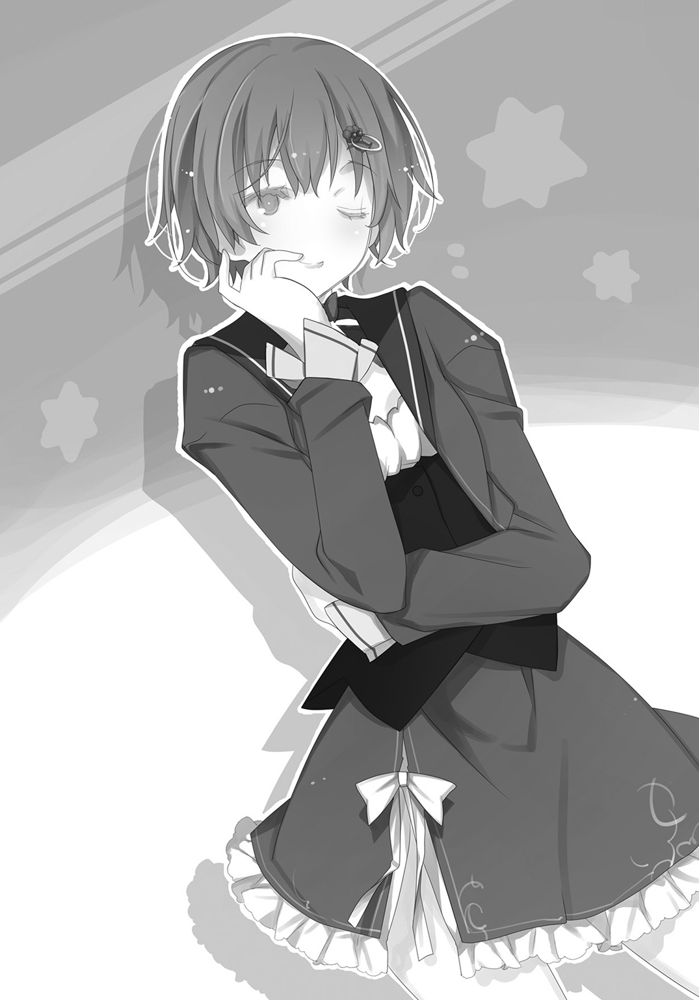

| 放課後アポカリプス 2 | |
| 杉井光 | |
この本は縦書きでレイアウトされています。
また、ご覧になる機種により、表示の差が認められることがあります。
 ダッシュエックス文庫DIGITAL
ダッシュエックス文庫DIGITAL
放課後アポカリプス２
杉井 光
１
このところ、クラスの女子たちからやけに頼られるようになった。
「藍沢、今日の分の和訳できてるんでしょ？ 写させて、お願い！」
後ろの席の有間くるみが休み時間に言う。ティーン誌の読者モデルもやっているという茶髪のぱっとした雰囲気の女の子なので、こっちは話しかけられるだけで気圧されてしまう。
「......いいけど」
「やったあ！ ありがとう藍沢！」
たちまち僕の席にはクラスの女子たちが殺到する。
「藍沢さぁ、うちらの創作ダンスの曲、どっちがいいと思う？」
そう言ってイヤフォンを差し出してきたのは女子リーダー格の佐伯さん。よく日焼けしていてめちゃくちゃスタイルの良いスポーツ少女だ。
「いや、なんで僕が。それって女子の体育の課題でしょ」
「うちらで意見割れちゃって決まらないの。あんたが決めてよ、学級委員特権で」
なんだそりゃ、と思いつつも僕はしかたなくイヤフォンを耳に挿した。
「藍沢くん、図書室から資料本持ってきてって先生に言われたんだけど、一緒にいってくれないかな？ わたし図書室よくわからなくて」
そう頼んできたのは野々宮さんだ。クラスでいちばん背の低い、小動物を思わせる娘。
「僕も教材にはべつに詳しくないけど......」と言いつつもつきあってしまう。
「藍沢くん、印刷機の使い方教えてくれる？ 先生、機械には弱くて」
担任の久里野先生までそんなことを言ってくる。若くて気の弱そうな女性が困り眉で頼んできたら、断れるものではない。
女子たちばかりではなく、男子もよく話しかけてくるようになった。
「藍沢、今日ゲーセン行く？」
「藍沢って音ゲーめっちゃ上手いのな」
授業にまったく出なかった時期にゲームセンターにもよく通っていたから当然だった。自慢にもならない。断る理由もひねり出せず、けっきょくクラスメイト男子三、四人と放課後に遊びにいく羽目になる。
「どこ行く、北口？」
「あそこ混んでるしミスドの上のにしね？」
「藍沢、どこにする？」「藍沢が決めろよ」
藍沢がやれよ。藍沢が決めて。藍沢なら。藍沢しか......。
ちょっと前までみんな僕の名前なんて憶えてもいなかったのに、今はなにかにつけて僕を押し立てようとする。
嬉しくはない。むしろ、気持ち悪い。
理由がわかっているからだ。一つ目の理由は、かつてクラスの中心人物だった男子二人がもういないこと。二つ目の理由はみんなの無意識に刻まれていることだ。たとえ記憶を一時的に凍結されていても、身体は憶えている。
この僕が――藍沢緋色が、指揮官であると。
無意識の記憶の残滓は他にもある。朝、登校してみると、一つ隣の教室から出てくるクラスメイトとよく遭遇する。
「また間違えちゃったよ」
「なんかついこっちの教室入っちゃうよね」
「なんでだろうね」
くるみや他の女子たちだ。照れくさそうに笑いながら僕らのクラス、一年Ａ組教室に入っていく。
「こないだまであっちの教室使ってなかったっけ？ 気のせい？」
「気のせいだよ......」
壁越しに彼女たちの会話を聞きながら、僕は胸の内でそっと答える。気のせいじゃないよ。僕らは先々週まで、たしかに隣の教室を使っていた。一年Ｂ組だったんだよ。身に染みついた習慣は、記憶の蓋の間から漏れ出てしまう。
かつて一年Ａ組だった生徒たちは、みんな死んだ。そのクラスははじめから存在しなかったことになり、僕らＢ組は空白を詰めるためにＡ組にされた。
こうして、僕らのうそ寒い日常は今日も続いている。
昼休み、１Ａ教室にやってきたのは三年生の霧ヶ峰志鶴先輩だった。
「緋色さん、いらっしゃいますか？」
いかにも清楚そうな眼鏡の和風お嬢様の登場に、教室はざわつく。弁当を広げていた女子たちも、総菜パンの交換交渉をしていた男子たちも、手を止め口をつぐんで戸口を見る。その視線のいくつかが僕に向けられる。たまらなくなって僕は首をすくめて志鶴先輩の方に向かった。何の用なんだ、直接呼びにくるなんて。
「生徒会室で薫子さんがお待ちです、緋色さんをすぐに呼んでくるようにと」
「は、はい」
志鶴先輩を廊下に押し出す。
「ねえ、あれって」「３Ｂの先輩」「だよね」
「すっごいお嬢様なんだって、どっかの会社の社長の」
「藍沢のまわりってなんであんなハイレベルな女ばっかなの、くるみ」
「なんであたしに訊くの！ 知らないよ！」
女どもの会話を背中に聞きながら縮こまったまま教室を逃げ出した。
人気のない校舎の端まで行ったところで先輩に小声で訊ねる。
「あの、なんでわざわざ先輩が来たんですか？ 放送で呼んでくれればいいのに」
先輩はいきなり立ち止まって唇をわななかせる。涙のたまった目は眼鏡のレンズのせいでいっそう大きくぼやけて見える。
「ご、ご迷惑でしたか？ そ、そうですよね、私みたいなのが教室にお邪魔したら緋色さんが変に思われますものね」
「い、いえ、そういうことじゃなくて」
おおむねそういうことなのだが、僕は必死に否定した。
「わかりました、緋色さんにふさわしい女になるまで、近づかないようにします」と志鶴先輩は涙ぐんで言うのだがなぜそんな話になる。
「そういうことじゃなくて！ その、志鶴先輩に限らず、上級生が迎えにきたりしたらみんな驚きますよ」あと僕を下の名前で呼んだりすると余計に。
「そう......そうですか。そうですよね」
先輩は胸に手をあててふうと息をついた。
「その、わざわざ私が来たのは、緋色さんに説明しておきたかったからです」
「はあ。なにをですか」
「だから、その......」先輩は顔を赤らめて、合わせた両手をもじもじさせる。「私の、あの、あっちでの、様子、というか、言動というか......」
ああ、と僕はうなずいた。
この人、緊急事態になると変貌してまったく別人じゃないかというくらい凶暴で好戦的な性格になるのだ。僕も一度だけ目撃した。
「あれは、その、つい緊張してああなってしまうんです、普段はあんなことありませんから、ほんとうです、信じてください」
つい緊張して、ってレベルじゃなかっただろ。
それにしても、と先輩の縮こまる様子を見て思う。ひょっとして表の人格が眠っている間に裏の人格が目を醒ますみたいな症状かと思っていたが、あの性格になっている間の記憶もちゃんとあるみたいだ。憶えていない方が幸いだった気もするけど......。
「大丈夫ですよ、全然気にしてないです」
先輩の変なところは他にも色々あるので、と付け加えようとしてやめる。
「でも、私、殿方にあんなところを見せてしまってはもうお嫁に行けません......」
殿方っていうか全校生徒に見られてますけどね。
「そ、それも大丈夫ですよ、ほら、みんなこっち側では忘れてますし」
「でもでもっ、緋色さんは憶えてらっしゃるじゃないですか！」
「ええ、まあ......コマンダーだし......」
「それとも緋色さんが私をもらってくださるんですかっ？」
話のつながりがおかしいだろ！
それ以上変なふうに進展されても困るので僕は志鶴先輩を置き去りにするくらいの早足で生徒会室に向かった。
生徒会室で僕を待っていたのは、生徒会長の姫木薫子先輩だった。高く結った金髪にすらっと長い手足に存在感の強い瞳、なにからなにまで目を惹く要素しかない女だ。僕が「失礼します」と部屋に入っていくと、デスクの椅子から立ち上がった。
「来てくれてありがとう、藍沢くん」
先輩は僕をソファの方に手招きすると、いきなり言った。
「じゃあさっそく服を脱いで」
「またかよ！」
「股は見せなくていいわ。ブレザーだけで」
「いやその股じゃなくて――って、ええと、ブレザーだけでいいんですか」
「力仕事を頼みたいだけだもの。もっと脱ぎたいならべつにかまわないけど」
「だれもそんなこと言ってないでしょ」僕は嘆息してブレザーを脱ぎ、ソファの背もたれに掛けた。「最初から用事だけ言ってくれりゃいいじゃないですか、なんで服を脱げなんてまぎらわしいことを」
「脱げと言われたきみがどこまで脱ぐのか見たかったのよ、純粋な好奇心で。まさかいきなり股間を見せるとは」
「見せてないでしょッ」
「いけません緋色さん！」遅れて入ってきた志鶴先輩が悲痛な声で言う。「そんな、股間なんてはしたない言葉を大声で、ここは生徒会室ですよ、生徒会の股間に関わります！」
「大声なのは志鶴先輩ですよね」あと沽券ですよね。そっちはつっこまないけど。
「股間の方につっこまないのはさすがね。つっこんでいたらその下品な感性をさんざん糾弾してあげようと思っていたのに」
「股間につっこむなんてそんな」と志鶴先輩は真っ赤になっておろおろするのだがおまえら前もって打ち合わせてるだろ？
「それで力仕事ってなんですか？」
これ以上つきあっていたらコントをしているだけで昼休みが終わってしまうので僕はさっさと話を戻した。薫子先輩の頼みというのは生徒総会のパンフレットが刷り上がったので印刷室から運んでくることだった。
全校生徒分とはいえ、段ボール箱ひとつに収まってしまう。もう、生徒は百人も残っていないのだ。もの悲しい重みを両手に抱えながら僕は廊下を歩いた。
生徒会室に戻ると、茜子先輩も来ていた。薫子先輩に瓜二つの妹で、生徒会副会長だ。三人の先輩たちとパンフレットを各クラスの人数分に分けながら、僕はふと言った。
「普通に生徒会の仕事だったんですね」
わざわざ呼ばれたくらいだから、『あちら側』でのなにかに関する話かと思っていたのだ。たとえば、僕自身に関すること。
薫子先輩は僕にちらと目を向け、また手元のパンフレットに視線を落とす。茜子先輩はもっと露骨に、僕の脇腹のあたりをじろりとにらむ。
あの日――茜子先輩の手にしたカッターナイフでブレザーとワイシャツを斬り裂かれた感触は、まだ生々しく残っていた。
僕への疑念は晴れたわけではない。保留されただけなのだ。
「こっちだって疎かにするわけにはいかないでしょ」茜子先輩がつんとした顔で言う。「私たちは、学生でもあるんだから」
学生でもある。
そして――兵士でもある。
「今は、こちら側にいるんだから」と薫子先輩が柔らかい口調で言った。「こちら側の生活を楽しんで、こちら側にしかない苦労を味わって、こちら側だけのことに頭を悩ませる時間を作るのよ。大切なことを忘れてしまわないように」
僕はなにか言おうと思ったが、ついになにも思いつけず、黙って作業を続けた。
大切なことを忘れてしまわないように......？
自分を騙し続けるために、じゃないのか。こちら側のことなんてみんな投げ出してしまってもかまわない、という事実から目をそむけるためじゃないのか？
その日はけっきょく午後の授業をすっかりさぼることにした。
昼休みの終わりを告げるチャイムを背中に聞きながら図書室に行ってみると、高い窓から射し込む陽を浴びた長机の端の席に、座って読書にふけっている女の子の姿があった。深い夜色の髪は細い肩をすっかり隠し、ページを繰る手元に落ちている。ヘッドフォンの灰色のイヤーカップが鈍く陽光を照り返している。そうっと忍び足で書架の間を抜けたが、それでも気づかれたらしく、彼女は目を上げた。
笑いはしないが、僕をみとめて緊張を緩めたのがわかった。
七連坂未咲。
僕の読書仲間だ。......『こちら側』では。
棚から読みかけだった推理小説シリーズを三冊まとめて抜き出し、未咲の斜め向かいの席に腰を下ろす。
「それ、読むかどうか迷ってた。面白い？」と未咲が訊いてくる。
「ううん。僕はすごく面白いけど、ちょっとグロい殺人描写が多いから未咲は苦手かも――」
僕はふと口をつぐむ。
苦手もなにも、僕らは本物のグロい死体を何度も目の当たりにしているじゃないか。
「じゃあ、一巻読み終わったら貸して」と未咲は言って、またページに目を落とした。僕はうなずくと、一冊目を取り上げて栞の場所を開いた。
インクと紙のにおいに満ちた静けさが、僕をやさしく包んでいく。
ずっとこれが続けばいいのに、と思わずにいられなかった。どうせすべてが虚構なら、虚構の中の愛おしい虚構だけに触れていたい。日が暮れても、夜が明けても、飢えても、渇いても、かまわずにこの部屋で未咲と二人、物語をひたすら貪っていたい。
でもそれはすぐに打ち砕かれる願いだ。その日は水曜日だったからだ。
チャイムが鳴る。頭蓋骨を直接打たれるような、痛切に響く歪んだ音。僕も未咲も同時に立ち上がり、頭を両手で押さえる。必死にこらえようとするけれど、膝が崩れ落ちる。身体がずぶずぶと虚無の中に沈んでいく。
戦いの始まりを告げる鐘だ。
２
世界の終わりとしか形容できない光景だった。
目に入るのは、生命の気配のまったく感じられない灰褐色の砂岩の大地と、同じくらい無機質な色の雲で埋め尽くされた空、病人の閉じたまぶたのような地平線だけ。砂塵は喉にも目にも痛く、聞こえてくるのは歯ぎしりみたいな風の音ばかり......
「――ゃぁっ、や、やめて、薫子っ」
......ばかりではなかった。
堪えがたくなって振り向くと、薫子先輩が未咲を岩の上に組み伏せて制服をひんむこうとしているところだった。僕の視線に気づいて手を止め、顔を上げる。
「ほらほら藍沢君、見ちゃだめって言ったでしょ」
「緋色っ」と未咲も顔を真っ赤にして僕の名前をわめくので、あわてて顔をそむける。
「な、なにやってんですかっ」
「身体検査よ、きまってるじゃない。わざわざこんな校舎から離れた場所まで連れてきたんだから」なにがどうきまってるんだよ。
しかし、止めに入ろうとするとどうやっても未咲のむきだしの肩やつるりとした下腹や外されたスカートの陰の――ええと、とにかく色々と目に入ってしまうので、そのたびに未咲に怒られ、けっきょくそっぽを向いて薫子先輩にやりたい放題やらせているしかなかった。
「やっ、ゃん、......ふぁあっ、そ、そんなところ」
おまえほんとになにやってんだよ？ と、未咲の甘苦しい声を背中に聞きながら僕はどぎまぎし続けた。たっぷり十五分間ほど未咲にセクハラし続けた薫子先輩は、「ふう」と満足げに息をついて手をはなした。
「済んだわ。じゃあ着せてあげる」
「自分でやる！」と未咲は涙声で言って服を引ったくった。「緋色、見ないでって言ってるでしょ！」リボンが飛んできて僕の目にぶつかった。
「ごめんっ」
僕はまた首をねじり、リボンを投げ返す。
隣にやってきた薫子先輩は未咲をうっとりした目で見ながら言った。
「素晴らしいわね。私たちのこの身体がなにでできているのか知らないけれど、こんなにろくでもない戦闘続きの生活なのに、珠のお肌のままよ。制服もきれいに元通りになるし、ほんとうにありがたい再生能力だわ」
「よくそんなのんきなこと言ってられますね......」
僕はあらためて不毛の荒野を見渡す。
右手の方角の地平線際に、校舎の影がある。僕らのただひとつのよりどころ。その少し手前に、もやもやとした陽炎のようなものが見える。校舎以外に比較対象がなく、またあまりにもそれが巨大なせいで、遠近感が狂いそうになる。
視覚強化すると、煙に包まれたそれが、うつぶせの四つ足の獣に似た形のなにかだとわかる。青白い肉のそこかしこが黒ずんで腐り、融け落ちて鍾乳石のような骨があらわれている。大きな翼がねじくれながら燃え上がり、火のついた白い羽が散らばって舞っている。
僕らがほんの数時間前に殺した、《天使》だ。
視界に緑色の光のラインが躍る。レーダーが死骸を捉えて解析しようとしているのだ。円形の枠が醜い肉塊となった《天使》をロックし、温度や音波測定から完全な死亡判定を弾き出す。大丈夫だ。もう死んでいる。
視界の左上には、一行のメッセージがさっきからずっと表示されている。
"1 GAME is SUSPENDED"
ゲーム......。
僕はもう、ゲームという単語を単なる遊戯の意味で受け取ることができない。
僕らはごく普通の高校生のはずだった。のんべんだらりと三年間を過ごし、なんとなく大学に進み、てきとうな会社に就職する。根拠もなくそう考えていた。現実はそんなものだと。
でも、今の僕はもう知っている。なにもかも間違っていたのだと。
「この現実を、受け入れなくてはいけないわ」
僕の隣で薫子先輩がつぶやく。視界の端で、彼女の束ねた金色の髪が風に躍っている。僕はうなずき、まだ煙にまみれた《天使》の屍骸をもう一度見やる。僕らを喰い殺しにくる、正体もわからない化け物たち。やつらをひたすら迎え撃つ灰と血の色ばかりのこの繰り返しが、僕らの現実なのだ。
「どれだけ傷を負っても、不気味に再生するこの身体も、私たちの現実」
「......ええ、わかってます」
「むだ毛のある状態に再生しなくてほんとにありがたいわ」
「だからどうしてそういう方向に持っていきますかねっ？」
先輩はとてもわざとらしく唇を尖らせた。
「藍沢くん、きみはまったく女心をわかっていないわ。女の子にとっては美容は世界の存亡と同じくらい重要なの。いい？ 私たちがいつからこの世界にいるのかわからないけれど、とにかく一度もお風呂に入っていないのよ」
「はあ」
言われてみればそうだ。自分の身体を見下ろす。服が汚れたり破れたりしても毎回きれいに元通りになるものだから、これまで全然気づかなかった。いや、それ以前に、毎分毎秒生きるか死ぬかの瀬戸際だったので、衛生面なんて気にしている余裕がなかったのだ。女の子ってこんな状況でも気にするもんなの？
「でも、七連坂さんの身体をくまなく調べて安心したわ」と薫子先輩は未咲にちらと視線を流して言う。「垢もたまっていないし汗臭くもなっていない」
「自分の身体で調べればいいでしょっ」と未咲が服で胸を隠しながらわめいた。まったくだ。
「むしろいいにおいがしたわ」
「薫子っ」投げつけられた石ころを薫子先輩は見もせずにひょいと避けた。
そもそもなんで僕もここに連れてこられたのだろう、と疑問に思い始めたとき、遠くから声が聞こえてきた。
「ねえさま！」
振り向くと、校舎の方から駆けてくる人影があった。明るい金色の短髪が向かい風に跳ねている。茜子先輩だ。肩には巻いたロープの束をかけている。
「ロープ見つかりました、三十メートルくらい――」
と、へたり込んで服を着ようとしている未咲に気づいたのか、茜子先輩は口をつぐんで足を止めた。その目がみるみるつりあがる。
「な、なんで七連坂さんがそんなあられもないことにっ」
次に起きる事態がだいたい予想できたので僕は逃げ出そうかと思ったが、立木ひとつない荒れ野に逃げ場などない。茜子先輩は僕に食ってかかる。
「藍沢くんっ、あなたはまたそういうっ」
「僕じゃないですってば薫子先輩が脱がしたんですよっ」
「噓つきなさい、ねえさまはそんなこと私にしかしません！」
あんたにもしてるのかよ。
「そうよ。さしもの私も下着まで脱がすのは茜子だけよ」
「ほらみなさい！」
いや今のおかしいだろ？ 下着以外ならだれかれかまわず脱がすって意味だぞ？ ていうか僕もいつだったかやられたぞ？ と思ったけれど口にしたら話がさらにこじれるので僕はぐっとこらえて黙っていた。それよりも茜子先輩はロープなんてどうするつもりなんだろう。
「茜子、校舎のみんなはどんな様子？」と薫子先輩が訊ねる。
「みんな不安がってます。全滅させたはずなのに終わりにならないから」
「それはそう、でしょうね」
薫子先輩は肩をすくめる。
今日襲ってきた《天使》は、何時間も前にすべて殺した。いつもなら、敵の全滅に伴ってチャイムが鳴り、僕ら生徒たちは引き戻されるはずだった。学校生活や、家族や、くだらない娯楽や、安っぽい笑いでいっぱいの――日常ゲームに。
でも今日、薫子先輩は再び一万ポイントを消費して、"SKIP 1 GAME"のオプションを選択したのだ。他の生徒たちには事情を説明していないが、これによって、僕らには時間ができた。つまり、《天使》の襲撃に怯えることなく、この不毛の世界で様々なことを試す時間だ。
「ひとまず七連坂さんの《天使化》の証拠は見つけたわ」
薫子先輩は着替えを終えた未咲のところに歩み寄り、スカートをいきなりめくり上げた。
「ひゃっ」
未咲があわてて裾を押さえようとするが、僕にも一瞬見えてしまった。彼女のふとももの内側に、幾何学的な配置に並んだほくろのようなものが見えた。正六角形と、その下に四つ。十の黒い星。
なるほどね。未咲をいきなりこんな校舎から離れた場所に連れ出して服を剝き始めたものだから、なんのつもりかと思いきや、あのしるしを探していたわけか。
僕は固い唾を飲み込み、首を巡らせてもう一度彼方の《天使》の屍骸に目をやる。まだ白煙にまみれた巨体の、融け残った頭部の肉に、はっきりと見てとれる十個の斑点。未咲のふとももに浮かび上がったそれとまったく同じ図形だ。
そして――
無意識に自分の脇腹に手が伸びる。
僕の身体にも同じものが刻まれている。
やつら同様の桁違いの再生能力を宿している証だ。
未咲は、"ANGELIZE"のオプションによってこれを手に入れた。でも僕は最初から持っていた。なぜかはわからない。いまだにこの世界も、僕ら自身も、謎だらけだ。
「斑点なら脚にあるってわたしが言ったじゃない。なんでわざわざ脱がしてまで探すの」
ようやく服をみんな着終わった未咲が口を尖らせる。
「あなた自身の証言は信用できないから。敵かもしれないのよ」
そう言う薫子先輩の目は笑っていなかった。茜子先輩も表情を固くする。未咲も口をつぐみ、ヘッドフォンをかぶった。心を閉ざすように。
敵かもしれない。
未咲は《天使》の仲間になってしまったのかもしれない。
同じ疑いは、もちろん僕にも向けられた。あからさまな敵意を向けられ、カッターナイフで制服を切り裂かれ、動かぬ証拠である脇腹の十星紋を見せつけられた。
僕には否定できる材料はなにもなかった。疑惑はひとまず棚上げされただけだ。
もちろん僕の中に先輩たちや他の生徒を喰い殺したいみたいな考えはない。でも今後正気でいられる保証はなにひとつない。なにが起きたって不思議じゃない世界なのだ。
今の未咲も、それをわかっているからなにも答えられなかったんだろう。
「まあ、それは今はいいわ。天使化を確認できただけで」
薫子先輩はさらりと言って、妹の手にあるロープの束に目をやる。
「それよりも七連坂さんには藍沢くんのお散歩をしてもらうわ」
「......はい？」
変な声が出た。未咲も目を丸くしている。
「そのロープを藍沢くんにつけて、離れすぎないように七連坂さんがしっかりつかんで、犬の散歩みたいにして」
「いやいやいや意味がわかりません、なんでそんなことを」
「じゃあ七連坂さんの方に犬をやれっていうの？ 私はべつにそれでも」
「ぜったいいや！」と未咲が僕をにらむ。「それより、なんのこと？ 説明して」
「そっ、そうです、なんなんですか散歩って、説明してください！」
「しかたないわね」
薫子先輩はしどけなく嘆息した。
「ねえさま、手短にしてください」と茜子先輩が姉をにらむ。「次の襲撃までにどれくらい時間があるのかわからないんですから」
「わかったわ。藍沢くん、スティンガーを出してみて」
僕は目をしばたたいた。薫子先輩が先に空中で指を躍らせる。網膜に投影された仮想キーを操作しているのだ。やがて先輩の左手に細長い棒状の金属塊が現れたかと思うと、上下に伸び、複雑に枝分かれし、分裂増殖と回転を繰り返し、やがて人間の身長よりもずっと長大な一基の兵器に変わる。砲口からは、人間の脚よりも太い杭の先端が突き出している。
スティンガー。
あの《天使》にとどめを刺せる唯一の武器だ。
僕もコマンドキーを喚び出し、"STINGER"を選択する。手のひらにぬるりと冷たい金属の感触が滑り込み、すぐに肩が悲鳴をあげるほどの重量感に変わる。
「出しましたけど」
「針の先っぽを見て。......穴が開いているでしょう？」
僕は自分のスティンガーを地面に下ろし、腰を屈めて杭の先端に顔を近づける。未咲も寄ってきて同じ場所を凝視する。
......たしかに、先端に穴がある。知らなければ見落としてしまうであろう、砂粒ほどの小さな穴だ。
「......これがどうしたの、薫子」
未咲が訝しげに薫子先輩の顔に目を移す。
「私たちは、この戦いをただのゲームだと勘違いしていた。そうね？」
僕と未咲は、まだなんの話かわからないまま曖昧にうなずく。先輩は問いを重ねた。
「でも、どうして勘違いしていたの？」
どうして、って。
「......だって、ゲームがどうのって表示が出ていたし、敵を倒すとポイントとか入りますし、武器とかオプションとか」
「そう。あまりにもゲームっぽかったから」と先輩はうなずいた。「ゲームなら、どんな仕組みがあろうとも他に理由は要らない。『面白いから』だけでいい。敵を倒すことが数値で評価された方が面白いから。その数値でさらにゲームを有利に運べるようになった方がより面白いから。理由はそれだけでいい。でも私たちはもう、これがゲームではないことを知っている。だとしたら、このシステムは不可解だらけだわ。真剣な戦いなのだとしたら使える武器は全部使えるようにするべきだし兵装も最初から可能な限り強化しておくべきでしょう。ポイントだのオプションだの、意味がわからない」
「それは......たしかにそうですけど」
「こっちもこっちでゲームなのかもしれない」
未咲がぼそりと言った。
僕はぞっとした。あり得ない話ではない。もう、確かなことなんてなにひとつないのだ。未咲の考え通りだとしたら――この荒野や《天使》たちや僕らの戦いや生死さえも作りものなのだとしたら、僕らはいったいなにを拠りどころにすればいいんだ。
「それも一つの考え方ね」薫子先輩はさらりと言った。
「私はその考えでした」茜子先輩も口を挟む。「ねえさまはちがうみたいですけど」
「ええ。私は美しい解答が好きなの」
そう言って薫子先輩は、足下に横たえたスティンガーに目を落とした。
「これがただの武器ではなく、採取器だとすると、色んなことの辻褄が合う」
「......採取器？」
未咲がつぶやく。彼女もまた自分のスティンガーを実体化させている。
「《天使》の――あのしるしの箇所に、なにかエネルギー源みたいなものがあって、スティンガーはそれを吸い取る装置なのではないか、ということ。ポイントというのは採取量ね」
僕は啞然としていた。考えたこともなかった。
でも、そうだ。言われてみれば思い至ることもある。突き刺したスティンガーを爆破すると、多少急所から外れていても敵を殺せる代わりに、得られるポイントが非常に少ないのだ。あれはつまり、採取できなかったから......？
「私たちのこの身体の動力も、再生力も、武器の火力も、そのエネルギーですべて賄われているとしたら、ポイントを消費してそれぞれを選択式で強化できるというシステムも合理的に説明がつくわ。再生力なんて、あいつらのものとそっくりだし」
ほぅ、と未咲も感心して息をついた。
たしかに、あれこれ辻褄が合う。でも説明がつかないことだっていくつも――
「いま使っている"SKIP 1 GAME"というオプションの意味も説明できる」
「......え？」
僕は目を見開いた。
一万ポイントもの大量リソースを消費して、一週間の学校生活ゲームを『飛ばす』ことができるオプション。これこそ意味がわからないけれど。
「私たちは敵殲滅後、意識を失っている間にあの『日常生活』を一週間送るわけでしょう。その時間で動力を補給して肉体を再生している。つまりあの『日常ゲーム』は『休息時間』なわけね。"SKIP 1 GAME"は、一万ポイント分のエネルギーを使って、全校生徒を休息なしで回復させる――というオプションだと考えられるわ」
先輩は僕と未咲の顔を順番に見た。それから小首を傾げる。
「今の推論にどこかおかしなところはあったかしら？」
たぶん僕らが呆気にとられていたからだろう。でも、未咲はどうか知らないが、僕が固まっていたのは先輩の話がおかしかったからではない。あまりにも、おかしくなかったから。理路整然としていたから。こんな理不尽だらけの世界に放り込まれて殺し合いを強要されて、それでも理論的に考え続ける姫木薫子という女に、あらためて驚かされていたのだ。
「よくそんなことまで考えてられますね」
もう何度となく同じことを先輩に言っている気がした。
「こんなふうになってしまったら、僕なんて途方に暮れるしかなくて......だって、なにがほんとうのことなのかもわからなくなって......」
「だからあなたはだめなんです」
茜子先輩が辛辣な口調で言う。
「こんな情けない人間は、やっぱり敵の一員なんかじゃないと思えてきますね」
まるで喜べない理由で信頼をもらってしまった......。
「私としては、どれが現実でどれが仮想なのかなんてどうでもいいんです。とにかく、みんなどうやって生き残るかです。ねえさまの推測はそのためにも重要ですから、あなたはさっさと七連坂さんの犬になって何十キロも散歩してください」
茜子先輩はロープの束を突きつけてくる。ようやく話が戻った。
「ええと、それでどうして犬とか散歩とかそういう話に」
「私たちの身体の動力はどうやら校舎から供給されていて、校舎から離れれば離れるほど供給効率が落ちる――という話はしたわね？」
僕はうなずいた。以前、そんなことを聞かされていた。だから僕らは逃げることさえできないのだ。
「でも、あなたたちは《天使》化した。二万ポイントも使って、しかも身体にあいつらと同じマークが現れた。だとしたら、あいつらと同じエネルギー源を内蔵するようになった、つまり校舎からの供給が不要になったんじゃないか......と思うの」
「はあ」
「で、実際に試したいから校舎からどんどん離れていってみてほしいってわけ」
「それはわかりましたけど、ええと、なんでロープなんてつけなきゃいけないんですか。普通に歩いていけば」
「ほんとうになにも考えてないんですね」茜子先輩が嘆息した。「普通に歩いていったら、ねえさまの推測が外れていたときに大変なことになるでしょう。どこかの地点で校舎からの動力供給が途切れてあなたはばったり倒れて、だれも助けにいけなくなる」
「ああ......そうか。それでロープをつけておけば」
ある程度の距離を保って二人で歩いていけば、もし供給可能距離の限界に達してしまっても、動けなくなるのは先行している僕だけだ。後ろを歩いている未咲は、僕がぶっ倒れたのに気づいたところですぐに立ち止まって、ロープをたぐって僕を供給可能範囲内まで引っぱり戻せばいい。
「もし薫子の推測通りだったらどうするの。どこまででも行けるってことでしょ」
未咲が不審そうに訊ねる。
「そうなら素晴らしいわ。どこまででも行ってほしい」
薫子先輩は真剣な目つきで答えた。
「あなたたちの身体についてたしかめたいというのも大きいけれど、もっと大事な目的があるの。この荒れ地ばっかりの世界が、どうなっているのか見てきてほしいの。私たちの校舎の他になにかあるかもしれない」
僕ははっとして先輩の顔を見つめた。
そうだ。いったいこの場所はどこなのか。僕らの知っている土地につながっているのか。そもそも地球上なのか。いやそれどころか地球なんてものも僕らの『日常ゲーム』の中で創り出された存在であってほんとうは――
考えを掘り進めていけばいくほど、底知れない未知への恐怖で圧し潰されそうになる。
でも、知らなくちゃいけない。
「それに、私の予想では、どこまでも歩くことにはならないわ」と薫子先輩は微笑み、ちょうど校舎と反対の方角を指さした。「こちらに向かって進めばね」
僕は目をしばたたいた。
「こっちになにかあるんですか」
「これまで襲ってきた《天使》のほとんどは、この方角から来てるの」
僕も未咲もそろって息を呑んだ。
「なによりも、あいつらがどこから来るのかを見つけたい。できるものなら先制攻撃をかけたい。もし、あいつらを『造っている』ような場所があるのなら、そこを潰したい」
＊
散歩の間じゅう、僕も未咲もほとんど無言だった。
たっぷり三十メートルくらいの長さのロープだったので、僕らの間にひどく距離があったせいもある。でも通信機能があるからその気になれば会話はできた。ただ僕が鬱いでいて話す気になれないだけだった。
歩けど歩けど、同じ光景が続く。どこまでも。いつまでも。
なにもないかもしれない。先輩の話を聞いている間に、その想いが僕の中でふくれあがって抑えきれなくなっていた。僕らの人生、社会、将来、なにもかも虚構だった。僕らに残されているのはこの不気味に強靱な身体と、制服と、校舎だけ。
なんで制服と校舎だけはこの現実にもそのまま存在しているんだ？ なにかの皮肉なのか。性格の悪い神様の要らないサービスか？ 《天使》どもとこのまま戦い続けていたって、僕らにはなんの未来もないじゃないか。
「......緋色の言ってることは、わかる」
頭にいきなり未咲の声が響いた。僕はびっくりして足を止める。
「えっ？」
「未来なんてなにもないってこと」
なんで頭の中で考えていただけなのに、とあわてふためいた僕は、通信がつながっていることに気づいた。僕の思考は未咲にだだ漏れだったのだ。恥ずかしくて首まで熱くなってくる。
「......え、ええと、いや、そのう」
「知らなければよかった、ソルジャーならよかった――って、わたしもいつも考えてる」
「うん」
「クラスが消えちゃったことも、今にしてみれば、かえってよかったかもしれない。授業受けて、たとえば世界経済とか、物理法則とか習っても、みんなゲームの中の話なんだって思ってしまったら、むなしくなる」
「......うん......」
未咲の在籍していた一年Ｃ組は、消滅している。彼女以外の生徒が全員《天使》に殺されてしまい、授業が成り立たなくなったことで、『学校生活ゲーム』は一年Ｃ組の存在を抹消して辻褄を合わせることにしたのだ。そのおかげで今の彼女は、学校には通っているけれど、図書室で読書しているか屋上で音楽を聴いているかだ。
その方がよかった――。
僕も同じ気持ちだった。今日の授業でもメソポタミア文明とか運動方程式とかアデノシン三リン酸とかについて教わったけれど、みんな無意味に思えて苦痛だった。以前は大の苦手だった数学の授業の方がずっとやる気になれるのも皮肉な話だった。なにかの小説に書いてあったけれど、たとえ世界のすべてが噓だったとしても数学だけは真実なのだ。
「薫子や茜子は、おかしい。どうしてあんなに気丈でいられるのかわからない。......あの二人のおかげで、なんとか生き延びていられるけど」
底抜けに楽天家の姉と、徹底的に現実主義者の妹。
どちらも、信じがたいほどの強靱な精神力の持ち主だ。僕はあんなふうになれない。未咲の口から弱音を聞けて安心してしまっているくらいだ。
これが普通なんだよ、やっぱり。
「薫子先輩は、どうするつもりなんだろうね。がんばって、抗って、戦って、もしかしたら勝てるかもしれないけど、それでなんになるんだろう」
未咲と二人きりで、おまけに顔も合わせておらず声だけが通信機能でつながっているという状態では、思っていることをみんな正直に言えてしまう。
「こんな、なんにもない場所で、......それでも敵はいなくなったからこれからみんなで楽しく暮らしましょうって言えるのかな、あの人なら」
しばらくの沈黙があった。
行く手に広がる光景はあいかわらずの乾ききった灰褐色ばかりで、足下の岩の感触も変わらなかった。死んでいる。なにもかもが死に絶えている。
空だけは――わずかに変化があった。
以前、"SKIP 1 GAME"したときに、僕らは知った。雲が分厚く一面に敷き詰められているせいでどこにあるのかははっきりわからないけれど、この世界にも一応は太陽が巡っていて、ちゃんと夜がやってくるということ。
やがてぽつりと未咲の声が返ってくる。
「薫子は、言ってた。噓でもべつにいいのじゃないかって」
僕は思わず歩を緩めて振り返ってしまった。未咲の姿は三十メートルも向こうなので、表情は視覚強化しなければわからなかった。
「夢の中の人生でも、それが楽しめればべつにかまわない、って。つらい仕事の合間の息抜きにゲームするようなものだって」
笑い出しそうになってしまった。面白かったからではなく、あまりにも皮肉な話だったからだ。理屈はわかる。僕もそんなふうに考えられたらいいと思う。でも無理だ。普通の人間はあんたらみたいに強くなれないんだよ、と思った。あんたらもそれを重々承知しているからこそ、まだ他の生徒たちに明かしていないんだろう？ こちらの世界こそが現実だっていう、どうしようもない事実を。
未咲はどうなのか、薫子先輩と同じように割り切れるのか、訊いてみたかった。でも、どう答えられてもつらい気持ちになるのがわかっていたので、僕はまた前を向いて足を進めた。腰に巻かれたロープが、さっきよりもずっと重たく感じられた。
＊
どれほど歩いたのかはわからない。
ふと気づくと、行く手の大地になにか黒々としたものが見えていた。僕は足を止めて未咲に言った。
「なにかある」
通信機能で驚きの感情が伝わってきた。彼女もまた立ち止まったのがわかった。
視覚強化する。目まいがするほどの勢いで、目に映る光景が拡大される。
砂岩の地面に、大きな裂け目ができているのだとわかる。ちょうど僕らの進路をすっぱり断ち切るように。どれくらいの幅だろう？ 拡大率からすると――かなり大きい地割れだ。
「行ってみよう」と僕は未咲に言って、また歩き出した。腰に縛りつけられたロープがぴんと張った。未咲の方は進むかどうか迷ったのだろう。それでも僕が歩を進めると、ロープに伝わってくる抵抗感がやがて少し緩む。ついてくることにしたのだ。
近づくにつれ、その裂け目が想像していたよりもはるかに大きいものであることがわかる。岩に遮られていて見えなかった闇が、僕らの歩みとともにどんどん広がっていく。
裂け目のふちの手前およそ十メートルほどのところで、やや盛り上がった岩場にのぼった僕は、目にした光景に立ち尽くしてしまう。
「――どうしたの緋色っ」
未咲の不安げな声が聞こえてくる。
「動けなくなったの？ やっぱりエネルギー供給限界が――」
「いや、そうじゃないよ。......これ......」
伝えようがなかった。言葉にはできただろうけれど、わかってもらえそうになかった。
「......ここまで来て、見ればわかるよ」
絶望的なほど長い間、僕は未咲の足音が背後に聞こえてくるのを待ち続けた。実際にはそれはほんの数秒だったのだろうけれど。
「......なにこれ」
彼女の声は、通信ではなく、僕の耳に直接響いた。僕のすぐ後ろにまで来て、同じものを岩の高台から見下ろしているのだ。でも、そちらを向けなかった。言葉を返すこともできなかった。眼下に広がる光景があまりにも異様すぎた。
それはたしかに、地面にできた裂け目にはちがいなかった。
幅と長さは、おそらく校舎ひとつを丸ごと呑み込めるくらいだ。けれど僕らの言葉を失わせていたのは裂け目の大きさではなかった。溜まった闇から想像できる深さでもなかった。
裂け目の切り立った崖面をわずかに下ったあたりに、ずらりと突き出ている大きな尖った岩の列。こちら岸にも、あちら岸にも並び、裂け目に湛えられた闇をぎざぎざに狭めている。
それは、まるで――
「......歯......？」
未咲がつぶやいた。
そうとしか見えなかった。歯の列だ。
それは大地に開いた、絶望的に巨大な――口腔だった。
３
「裂け目が――口を開けていたのね？」
薫子先輩が言って、僕と未咲の顔を順繰りに見た。
「ええ、その、比喩ではなくて、ほんとに口が......その、説明しづらいんですが」
「いいわよ、わかっているわ。監視ユニットの映像で私も視てるんだから」
「あ、そうか。そうですよね」
あの裂け目のそばに、全方位カメラと各種センサーを積んだスカウティングポッドとかいう機械を置いてきたのだ。１２００ポイントも消費する補助兵器で、なんの役に立つのだろうと思っていたのだけれど、リアルタイム映像を送ってきてくれるので今回に限ってはとてもありがたい。あの光景の異様さは、実際に見なければわからないだろう。
「もちろん、その、岩が偶然ああいう形になってただけかもしれませんけど」
「偶然とは思えなかった」と隣の未咲がすぐに言う。僕も念のために付け加えただけで、偶然の産物だとは毛ほども思っていなかった。
「地割れの中には入らなかったんですね？」と茜子先輩が訊いてくる。
「さすがにそんな勇気ないです」と僕は答えた。「ものすごく深かったし、奥の方は真っ暗でなにも見えなかったし」
「視覚強化は暗さはほとんど補正してくれないものね」薫子先輩は小さく息をついた。
「口......に見えるように造られたなにか、でしょうか。それとも、ほんとうに生き物の口？」
茜子先輩も眉をひそめる。
「とりあえず、動いてる箇所はなかったし、生体反応も探知範囲にはなかった」と未咲。しかし、それはあまり参考にならないだろう、と思う。なにが起きるかまるでわからない未知の世界なのだ。
「この地球そのものが私たちを喰い殺そうとしているのかもしれないわね」
薫子先輩は冗談めかして言ったが、笑えなかった。
「詳しく調べてみないことにはなにもわからないけれど、東南東、レーダー圏外......この距離では確実に動力供給が切れるわね。私たちが行くわけにはいかないか。どのみちもう夜だし、片道一時間以上かかるし」
僕は教室の窓から外を見やった。空はもうすっかり暗くなっている。明かりがついているのは、僕らのいる３Ａ教室だけのようだ。聞こえてくるのは、砂を含んだ風がときおり校舎の壁を洗うざらついた音だけだ。
「えらい静かですけど生徒はみんなどうしてるんですか？」
「寝てるわ」と薫子先輩が言うので僕はびっくりした。そんな豪傑ばかりだったのか。日常の方に戻っていないということはいつ次の敵襲があるかわからないということなのに。
「普通に眠っているわけじゃないですよ」と茜子先輩が補足する。「全員の動力供給を切ってるんです。こんな状況で百人近くに勝手に動き回られると困りますから。敵襲があったらどうせ強制的に起こされますし」
「そ、そんなことできるんですか？」
コマンダーはたしかに自分の麾下のソルジャーの動力供給を握っている。でも、全員の供給を切るなんて、どうやったんだ？
「あなたたちが仲良くお散歩して面白いものを見つけてた間に、私たちもかなり面白いものを見つけたのよ」
薫子先輩が、なぜか面白くなさそうな顔で言った。
僕と未咲が連れていかれたのは、北校舎の西端だった。廊下には照明がないので、小型ミサイルランチャーのモニタ画面の光を懐中電灯代わりにして、埃っぽい階段裏に入る。こんななにもない行き止まりになんの用があるのだろう、と思っていたら、薫子先輩はミサイルランチャーを茜子先輩に預け、膝をつき、床に触れてなにかをまさぐった。
僕は息を呑んだ。かすかな軋みとともに、床の一部がスライドして穴が口を開けたのだ。闇の底へと続くのは急勾配の下り階段だ。
「......校舎を音波探知してて見つけたの」
薫子先輩がささやき、茜子先輩からランチャーを受け取る。
「じゃあねえさま、私は上を見てますから」
「お願い」
茜子先輩は階段を上がっていった。僕らは薫子先輩に促されて、穴に足を踏み入れる。爪先を氷水に差し込んだかのような錯覚がやってきて、僕はぞくっと足をすくませる。
階段は、何度も踊り場で折り返しながら深みへと続いていた。三人分の足音がもつれ合うのを聞いているうちに、なんだか巨大な獣が骨をぼりぼり囓る音に聞こえてきて、あの不気味な地割れを思い出してしまう。
階段はやがて尽き、短い廊下は両開きの扉に突き当たっていた。
先輩がランチャーを持ち上げ、モニタの光を扉に向ける。なにかが浅い浮き彫りで描かれている。暗さのせいでよくわからないので僕は扉に触れられるくらいまで近づいてみた。
「......木？」
すぐ背後で未咲がつぶやく。
描かれているのは一本の木だ。茂る葉の間には、果実らしき丸いものがたくさん見てとれる。幹の根本ちかくにはなにか縄状のものが巻きついている。蔦？ いや、これは――
鱗がある。端には小さく膨らんだ頭部がついている。
蛇、だ。
言いようのない寒気が僕を押し包んだ。
先輩が扉の脇の壁に取りつけられていたパネルに触れる。扉がほとんど音もたてずにあちら側へと開いていく。
扉の向こうもやはり暗かったが、正面奥に緑色に光るなにかが屹立しているせいで、天井の高さはかろうじてわかった。身長の三倍くらいだろうか。かなり高い。壁まで届くほどの明かりではないので広さはよくわからない。空気はひんやりしていて、漂白剤のような、ひりついた刺々しいにおいがした。
なんだろう。ここは――ひどく皮膚がざわつく。
いてはいけない場所。見てはいけないもの。聞いてはいけない答え......。そんな想念がとどめようもなく湧きあがってくる。
「薫子さんっ」
聞き憶えのある声が聞こえて、光の足下あたりから人影が駆け寄ってきた。志鶴先輩だった。眼鏡の代わりにバイザーゴーグルをかけているのでだいぶ印象は勇ましいが、表情はいつものおどおどした箱入りお嬢様のそれだったので少し安心――とか思っていたらいきなり飛びつかれてものすごい力で抱きすくめられる。
「こんな場所で留守番なんてもう私ずっと寒くて怖くて怖くて怖くて心細くて、薫子さんに早く戻ってきていつもみたいにこうやってぎゅうっとしてほしくて......あら？ 薫子さん、なんだか抱き心地がごつごつしています」
「......はあ。僕だからです」
「緋色さんっ？」
志鶴先輩は跳び退いて僕から離れた。赤面して顔を両手で覆う。
「ああ、なんてことでしょうゆるしてください、緋色さんに抱きついてしまうなんて、はしたないです、これではもう緋色さんにもらっていただくしか」とかなんとか意味のわからんことを言っているが、僕はさっきよりもさらに安堵してしまう。この人、敵殲滅後なら、こっち側でもおしとやかな性格に戻るのか。
「私はこっちよ、志鶴」
薫子先輩が未咲の背後から肩越しに言った。
「ああっ薫子さんっ」
志鶴先輩は今度は未咲に抱きついた。
「ひゃっ？」と未咲は驚いて志鶴先輩の腕の中でもがく。
「私もうずっと寒くて怖くて怖くて怖くて心細くて......あら？ 薫子さん、なんだか小さいしふわふわだし胸の感触がとてもささやかで」
「ばかっ」と未咲は志鶴先輩を押し戻した。「薫子じゃない、わたし！」
「未咲さんっ？ ああ、なんてことでしょうゆるしてください」と志鶴先輩は再び両手に顔を埋める。
「そんなにささやかなの？」薫子先輩の手が背中側から未咲の胸に伸びる。
「さ、触らないで！ だいたい薫子、あなたはさっき見たでしょ！」
見たのか。そういえば脱がしてたもんな。じゃなくて、おまえらなにやってんの？
志鶴先輩はようやく本命の薫子先輩に抱きついて髪をなでてもらっている。邪魔をするのは気が引けたが、話が進まないので僕は咳払いをした。
「あのう、それで、ここは一体なんなんですか」
「ああ、そうね」
薫子先輩は志鶴先輩から身を離し、暗がりの奥の光の柱を指さした。
「あれこれと説明するより、まず見た方がいいわ」
先輩に促され、僕と未咲はおそるおそる足を進めた。
近づいていくにつれ、それがほんとうに柱であることがわかる。人間が四人ほど手をつないでようやく囲めるくらいの太い円柱だ。表面に、緑色の光で円形や長方形、それらをつなぐライン、そして文字列や数列が配され、ときおり脈打つようにして光の帯が柱の根本から最上部にまで駆け上がり、天井に無数に枝分かれして散り、消える。
「......これ......なんですか？」
薫子先輩は黙って僕らの足下を指さした。
見下ろすと、柱の根本の床に金属のプレートが埋め込まれている。刻まれた文字は、こう読めた。
Tree of Knowldge
知識の樹......？
「ここの中央コンピュータ、みたいなものでしょうね」
先輩が言った。それから僕の隣まで寄ってくると、柱の一部に触った。
「わっ」
思わず声をあげて後ずさってしまった。緑色の光の枠が柱の表面からいくつも手前に浮き上がってラインを伸ばしながら展開されたからだ。網膜投影でいつも見ているコマンドキーやリストにそっくりだ。
「ほら、みんなうちの生徒の名前でしょう」
先輩が指さす先、中央の大きなウィンドウから枝分かれしたラインの先にぶらさがる小さな円形ウィンドウのそれぞれには、なるほど、アルファベット表記の人名が表示されていた。僕のクラスの"Arima"とか"Saeki"とか"Nonomiya"といった名前もすぐに見つかった。
どの名前の下にも、"Idling"と附記してある。待機状態。
「コマンダー二名の権限である程度の機能が許可されるみたいだから、志鶴と二人で色々と試していたの。動力供給もここでコントロールできるわ。コマンダーの動力までは止められないみたいだけれど」
「コマンダーのも止められるなら、鞠谷さんのを止めちゃって捕まえられるんですけどね」
志鶴先輩がふと言う。鞠谷......って、たしか二年Ｂ組のコマンダーだったか。名前だけは聞いているけれど一度も逢ったことがない。
「鞠谷さん、毎回どこに隠れているやら」
「このツリーからポイント操作も直接できるみたいだから、これで２Ｂの生徒たちの機動力を強化できるわね。あそこは鞠谷くんがほんとうになんにもしないからこれまでずっと心配だったのよ」
話を聞いていると、どうやら鞠谷という人物はこの戦闘に対してまったくやる気を見せず、敵襲があっても隠れているばかり、二年Ｂ組もまったく戦力になっていないらしい。先輩たちの口調はあきれているばかりだったけれど、僕はむしろ共感していた。未咲や先輩たちに出逢わなければ僕もきっとそうなっていただろう。普通に怖がって逃げ回っている人もいることに安心さえしていた。
「真ん中のはなに？」
未咲が訊ねた。
「......"Philadelphia Base"って書かれてる」
彼女が指さしたのは、枝の集まる中央の『幹』にあたる大きなウィンドウだった。
「フィラデルフィア......基地？ かな」と僕はつぶやいた。フィラデルフィア。たしかアメリカにそういう街があったような。
「それはたぶん、この校舎――というか、拠点の名称だと思う」と薫子先輩。
「え？ じゃ、じゃあ、ここはアメリカなんですか？」
「さあ。わからない。でもそのフィラデルフィアではないでしょうね」と先輩は謎めいたことを言って、《知識の樹》に目を戻した。「これはどうやら、休眠中の私たちの記憶をメモリとして使って、あの『ゲーム』を動かしているみたいなの。ほら、ここ」
先輩の指が、"Philadelphia Base"と書かれた幹を下へとたどる。赤く強調表示されているメッセージが見つかった。
"Not Enough Memory 86 / 92 brains available"
"GAME is non-excutable."
メモリ不足。使用可能な脳は92個中86個。
ゲームは実行不能。
......という意味だろうか。
92個という数字はいったいなんだろうとしばし考えた僕は、現在生き残っている生徒数だと思い至る。そのうち、コマンダーである六人――僕と未咲、姫木姉妹、志鶴先輩、そしてまだ顔も知らない鞠谷という人――がまだ目を醒ましているから、メモリが足りなくて、ゲームを走らせられない。そういう意味か。
つまりこれは、ゲーム機本体。
「私たち全員の脳が、ここにつながっている。なるほど、知識の樹――ね」
先輩の声は自嘲気味だった。闇の中に空中投影された線やウィンドウの群れはたしかに梢とそこになる果実を思わせる。
「なんだかぞっとしますね」
僕の言葉は、凍った暗闇の空気にひびを入れた。
「こうやって実際に証拠を次々に見つけちゃう、ってのは」
「今さらね、藍沢くん。あなたが暴いたことなのよ」
「それはそうですけど」
「私は緋色さんの気持ち、わかります。正直、今もまだちょっと信じられなくて」
志鶴先輩が不安げに言って僕のそばに寄ってくるのでちょっと安心する。っておい、身体をぴったりくっつけてくるのはやめろ、いくら寒いからって。ほらほら未咲もにらんでるし。
僕の視線に気づいた未咲は、ぷいと薫子先輩の方を向いてしまった。
「これ、触って大丈夫なものなの？」
固い声で未咲が薫子先輩に訊ねる。
「《知識の樹》って、あれでしょう？ ドアにも描いてあったし......」
「あら。七連坂さんも気づいたのね」
「あれ？ って？」と僕は未咲の顔を見る。非難がましい視線が返ってくる。
「いつも授業さぼって本ばっかり読んでるくせに、気づかないの？」
おまえにだけは言われたくないが、それはさておいて。
「気づかない、って」
「聖書は読んだことないの」
「聖書――」
いつも創世記の最初の五ページくらいで眠くなって断念する、と答えようとして、僕はようやく思い至る。知識の樹！
ユダヤの創世神話だ。神様が最初の人間アダムとその妻エヴァを住まわせた楽園の真ん中に、二本の果樹が生えていた。一本は、実を食べると永遠の命を得られる《生命の樹》。そしてもう一本は、実を食べると善悪を判別する能力を得られる《知識の樹》......。
「そう、神様はアダムとエヴァにこう言ったわ」
薫子先輩の声がしんと闇に染みとおる。
「知識の樹の実は、けっして食べてはならない。食べればその日のうちに必ず死ぬ。でも二人は、食べてしまった。蛇がエヴァをそそのかしたから。有名なお話だからこの部分くらいはだれでも知っているでしょう？」
僕は背筋に寒気をおぼえて後ろを振り返った。開け放たれたままの両開きの扉。あの絵には、たしかに幹に巻きついた蛇も描かれていた。
「し、死んじゃうんですかっ？」
志鶴先輩が青くなって言った。
「じゃ、じゃあやっぱりこのコンピュータ、触らない方がよかったんじゃ」
「神話よ？ だいたい食べたわけじゃないからいいじゃない」と薫子先輩は肩をすくめた。
「そ、そうですけどっ、でも」
「それに食べたら死ぬというのは噓だから」
志鶴先輩は目をぱちくりさせた。薫子先輩はくくっと笑って続ける。
「神様はそれはもうたくさん噓をつくのだけれど、これが最初のひとつ。アダムもエヴァも知識の樹の実を食べたけれど、その日のうちに死ぬどころかその後もぴんぴんして子供をたくさん作ったし、アダムなんて九百三十年も生きてるのよ」
「そうなんですか！ ほっとしました」
なんで聖書の話なんて真に受けてびびったり安堵したりしてんの、この人は。
「そうじゃなくて」と未咲は眉をひそめて言う。「《知識の樹》なんて名前をつけて、ドアにあんな絵まで描いてあるからには、危険だから近づくなっていう警告なんじゃないの？」
「そうかもしれない」薫子先輩はさらりと言った。「でも、知らないままでいるわけにはいかないわ。私たちの武器はけっきょく、考えることだけだもの。知識がなければ戦えない」
未咲は口をつぐんだ。先輩は再び《樹》の幹に手を伸ばす。
「まだ表面的な機能がいくつかわかっただけ。情報は引き出せるだけ引き出しておきたい」
「まだ、その、私がお手伝いしないといけませんか？」
僕の腕にしがみついた志鶴先輩が不安そうに言う。
「ここ暗いですし寒いですし、早く上に戻りたいな、と......あ、あの、でも、緋色さんが一緒ならなんとかがんばれると思います」
「上に戻っていいわよ」
薫子先輩はさらりと言った。
「ここからは私がひとりで調べるわ。それぞれクラスに戻って寝ておいて」
「ね......寝るんですか？」
「これから、一時停止状態の『ゲーム』を再開してみようと思うの。もちろん私たちも全員意識を失ってしまうわけだけれど、その直前まで、この《樹》にどういう変化が起きるのかを観察したい」
先輩の広げた手のひらの向こうで、緑色の光が脈打ち、蠢いている。
たとえどれほどおぞましい真実であっても――
知ろうとしなければ、戦えない。
＊
チャイムの音で、僕らは引き戻された。
ほんの一瞬前まで冷え冷えとした静寂の中にいたせいで、窓から射し込む初夏の陽のあたたかさも、廊下の方から聞こえてくる生徒たちの声や足音も、紙とインクのにおいも、なにもかもが気障りなくらい優しかった。僕と未咲は同時に顔を上げていた。視線が合っていることをお互いしばらく認識できずにいた。チャイムの音が頭の中から消えるのと同時に、二人とも我に返り、気まずくなってすぐに目をそらし、それからあたりを見回す。
学校の図書室だ。他にはだれもいない。僕らがあの《知識の樹》の地下室から出て階段をのぼりきったところで、薫子先輩が"SKIP 1 GAME"オプションをキャンセルしたのだろう。
携帯を取りだして日時を確認してみる。六月三日、水曜日の十五時半。僕らが『あちら側』に飛ばされた時間だ。いつも通りの、日常再開。素知らぬ顔で継がれた夢。
二人で生徒会室に行ってみると、薫子先輩がノートＰＣに向かってなにか作業をしていた。
「なにか変わったことはあった？」
画面から顔を上げた薫子先輩がそう訊いてくる。僕も未咲も首を振った。
「そう。スキップした『ゲーム』を途中再開しても、とくになにも変わりないのね」
「先輩の方は、なにか見つけられましたか」
先輩はいきなり立ち上がると、歩み寄ってきて、いきなり僕の頭を両手でつかんだ。
「わっ」
驚くひまもあらばこそ、先輩は僕の頭をもみくちゃにしてうなじだの耳の裏だのつむじだのに指を這わせる。
「な、な、なんなんですかっ？」
やっとのことで解放された僕の声を無視して、今度は先輩は未咲に飛びかかった。
「ひゃっ」
未咲も同じ目に遭わされる。......いや、同じじゃないぞ。未咲は耳にふうっと息を吹き込まれたりうなじのにおいを嗅がれたりしてるぞ？
「や、やぁっ、やめて」
「なにやってるんですかっ」
あわてて先輩を未咲から引きはがした。未咲は僕の背中に隠れて怯える。先輩は制服の乱れを直してからふうと息をついた。
「頭のどこにもおかしなところはないようね」
「おかしなのはあんたの頭だよ！」
「《知識の樹》にはもちろんあなたたち二人の脳も接続されていたわけだけれど」
先輩は真剣そうな口調になる。
「あなたたちだけ、待機状態になってもメモリがアクティヴのままだったのよ」
僕は目をしばたたいた。
「......ええと、意味がよく......わからないんですが」
「私もよくわかっていないわ。あのコンピュータをすっかり調べたわけじゃないし。でもとにかく、待機状態の生徒のウィンドウを詳細表示してみると、メモリが《樹》本体のコントロール下に入っていて完全に使えませんみたいなことが書かれているの。でも、藍沢くん、それから七連坂さん、あなたたちのウィンドウにだけはそれが書かれてなかった」
しばらくの沈黙が生徒会室を支配した。
「......天使化......したから？」
未咲がふとつぶやく。
「そうかもしれないわね。私もすぐに気を失って『こちら側』に戻されてしまったから、ほんの一瞬しか調べられなかったのだけれど。あなたたちは自家発電できるから、脳の方も独立して働くようになっているのかも」
なんだか気分の悪くなる推測だった。
天使化していない生徒たちの脳は、あの《樹》の奴隷――みたいじゃないか。
僕の心を見透かすように先輩は微笑んで、口調を明るいものに変えた。
「それからもうひとつ、時間表示を見つけたのは収穫ね」
「時間？」
「《知識の樹》の上の方にタイマーがあって、秒ごとにカウントダウンしていたのよ。だから次に『あちら側』に戻ったときに、『こちら側』で過ごす時間が実際はどれくらいなのかを確かめることが――」
それはたしかになかなかの発見だったが、それよりももっと聞き流せない箇所があったので僕は口を挟んでいた。
「カウントダウン？」
「ええ。私が見たときは１２０万くらいで、１秒に１ずつ減ってたわ」と薫子先輩はなんでもなさそうに答える。
「ちょ、ちょっと待ってください、なんのカウントですか」
「そこまではわからなかった」
「ひゃくにじゅうまん......秒？ って、それってどれくらい」
「だいたい二週間」と未咲が隣でぼそりと言う。
「計算早っ！ え、ええと、ゼロになったらどうなっちゃうんですか」
「だから、わからないわよ。そのときになってみるまでは」
薫子先輩はノートＰＣの電源を落として立ち上がった。
「いま私たちができるのは、なるべく情報を集めることと、敵を倒して生き残ることだけ。この再開した『ゲーム』も通常どおりなら一週間また猶予があるわけだし、次の水曜日までに調べられることは調べましょう」
ぶうんと振動音が聞こえて、薫子先輩は携帯電話をポケットから取り出した。
「はい。......ええ、わかった。先に行って、売り場で待ってて」
そう言って電話を切る。
「じゃあ、今日は帰るわ。父さまの誕生日なの。茜子と一緒に買い物なんて久しぶり。ああそうだ、藍沢くんも一緒に来る？ 男の人がどういうプレゼントをもらって喜ぶのか、私も茜子もいまいちわからなくて、毎年不安なのよね」
僕はぶんぶん手を振って固辞した。父親世代の中年男性が欲しがるものなんて見当もつかなかったし、姉妹でのショッピングにお邪魔なんてしたら茜子先輩からどんなひどい言葉を浴びせられるかわかったものではない。
それでも、駅までの帰り道は先輩につきあうことにした。きわめて個人的なことだけれど、訊いておきたいことがあったからだ。
「あのう、先輩は――」
学生の行き交う立教通りを駅の方へと歩きながら、慎重に訊ねる。
「両親と、......普通に喋れます？」
薫子先輩は首を傾げた。
「喋れるわよ。どういうこと？」
「僕は、その、どうしても......親とか先生とかと喋るときに余計なこと考えちゃって。ゲームの中の人なんだな、って。コンピュータが動かしてるＮＰＣみたいなもんなんだって。そうすると、なんていうか、人間だと思って接していいのかなって」
先輩の表情をちらちら見ながら話していると、自分がいかに愚かな疑問を抱いているのかを痛感させられた。駅に着くまでの間、先輩はなにも答えなかった。駅のベンチに並んで座り、ひょっとしてあまりにも馬鹿なので怒らせてしまったのだろうか、と不安になりかけた頃になって、先輩は口を開いた。
「藍沢くんは、チューリングテストって知ってる？」
「......え？ あ、いや、知らないです」
なんのテストだって？
「昔、アラン・チューリングっていう数学者がいてね......」
先輩は線路を隔てた向かい側の大きな看板を見つめながら話し始めた。
「コンピュータの産みの親みたいな人なのだけれど、その人が、『人工知能にはほんとうに人間と同じ知能と呼べるものが備わっているのか？』という問題に対して、非常に興味深いアイディアを提示したの。それがチューリングテスト」
「はあ」
いきなり難しそうな話になったので僕は面食らっていた。人工知能？
「どういうテストかというとね。まず被験者として人間と、それから人工知能をプログラムした機械を用意する。判定者が、この被験者に色々と質問して、どちらが人間でどちらが機械なのかをあてる、というテスト。ただし、見た目や音声といった外面的な特徴で判別できてしまったのでは意味がないから、被験者と判定者は隔離して、チャットで会話するのが望ましいわね。あくまでも言葉のやりとりの上だけでテストするわけ。ここまではいい？」
「大丈夫です、たぶん」
話のはじめに受けた印象ほどは難解な話ではなかった。しかし続けて先輩が言ったことは僕の理解を超えていた。
「で、判定者が人間と機械を区別できなかったら、この機械は人間と同じように知能を持っていると判断していいだろう、というのがチューリングの考えなの」
「......えええええええ？」
僕の反応を、おそらくは予想していたのだろう、先輩は愉しそうに笑った。
「なにか不満？」
「い、いや、その、不満っていうか、......そんなので判断しちゃっていいんですか？」
「どうしていけないと思うの？」
「だって、その、......それって、ものすごく人間っぽい受け答えができればいいってことですよね。質問内容について考えるようなプログラムにしなくても、騙せればいいっていう」
「うまく騙せるならね」
「それじゃ、その機械は考えてないんだから、知能があるとはいえないんじゃ」
「そう。このチューリングテストっていうアイディアが発表されると、すぐに賛否両論巻き起こったわ。最もよくある批判はいま藍沢くんが言ったようなこと。他にもこのテストには問題点があるという指摘がたくさん出されたけれど、チューリングはべつに実際にこのテストを行うことは想定していなくて、一種の思考実験として提唱したのね。だから本質的な反論は藍沢くんが言ったその一点。実際に考えてはいないのに知能があるように見せかけられるとしたら、知能があるかどうかの判別法にはならないだろう、というもの」
「なりません......よね？」
「なる、とチューリングは断言したわ」
「ど、どうしてですか？」
「ねえ、それじゃあ藍沢くん、考えるってどういうこと？ 知能ってなに？」
顔をのぞき込まれ、そんな問いを真正面からぶつけられ、僕は言葉を失う。
「チューリングテストは、実は人工知能がどうこうという狭い枠内の問題ではないの。知性とか思考とかの本質を問うもの。意識の中でなにが起きているのかは他人には絶対にわからない。たとえ脳細胞を巡る電気信号のすべてを把握できるようになったとしても、それが意識とどう結びついているのかはわからない。自分は思考している、とその人が主張したとしても、その人が言ったという事実があるだけ。ほんとうは思考なんてしていないのかもしれない。そう見せかける受け答えができるような仕組みがあるだけかもしれない」
「......いや、そんなことを言い出したら」
「そう。『ほんとうに考えているかどうか』という問題自体に意味がないわ。知能があるかどうかなんて、コミュニケイトしたその結果から、対話者が主観で判断するしかない」
僕は口をひん曲げて足下に視線を落とした。
先輩の言っていることは理解できる。理解できるのだが――納得できない。
「納得できない？」
薫子先輩が僕の思考をなぞるように問う。
僕は小さくうなずいた。
「だって、なんというか......人間の心って、そんなもんじゃないでしょう？」
「納得できないのはわかるわ」と先輩は微笑んだ。「色んな学者が出したチューリングテストへの反論も、突き詰めれば藍沢くんが言っていることと同じ。人間の心ってそんなものじゃない、もっとなにかある、機械は持っていなくて人間は持っている決定的ななにかがあるはず、っていうね。ただ、そのなにかをはっきり見つけ出せた人はまだいない」
頭がくらくらしてきた。そもそも先輩はどうしてこんな話を長々と続けているんだ？
「それでね、藍沢くん」
薫子先輩の声がしんと冷えた。
「この問題に、私たちは今まさに直面しているの」
「......え？」
「こちら側の世界はみんなゲームの中。空も海も山も、すべて作りもの。あなたはそれを暴いたわね。じゃあ訊くわ。今ここでこうしてあなたと話している私は、ほんものの、人間の姫木薫子なの？ ゲームが造り出したＮＰＣではない、と言えるの？」
世界そのものに亀裂が走ったかのような軋みが聞こえた。僕は愕然として、先輩の顔を、つややかな唇を見つめ返した。
「......いや、......その」
かさついた声が喉を引っ搔きながらようやく口からこぼれ出てくる。
「人間、ですよね？ なんでそんなことを」
「訊かれれば、もちろん私は人間だと答えるわ。でもそう答えるようにプログラムされている人工知能つきのＮＰＣかもしれないわよ」
「な――」
「まったく同じことがきみにもあてはまるわ。きみはほんとうに人間？ プログラムされたＮＰＣじゃないの？ ああ、答えなくてもいいわよ。人間だと主張されても、私にはその真偽をたしかめる術がないわ」
問われるたび、じりじりと追い詰められていく。
「でも、でも......」
「でも、私たちは互いに、相手がほんものの人間だという前提で話し合っているわね。それはどうして？」
「だって、......」
声がどんどんか細くなって、隣のプラットフォームにやってきた電車の音にすっかり踏み散らされてしまう。僕は埃っぽい唾を飲み込んで言った。
「だって、『あっち側』で話した先輩と、その......いま話してる先輩とで、辻褄が合っているっていうか......」
不意に、薫子先輩の表情から緊張が消えた。ふ、と柔らかく笑い、僕の胸にぽんと手のひらを置く。
「そう。それが答え。話している内容におかしな点がないから。ちゃんと人格や記憶がつながっているように見えるから。人間に見えるから。......だから、人間だろう、ってね。私もきみもそう判断している。もうわかったでしょう。私たちは一言口にするたび、一言耳にするたびに、チューリングテストをしながら他者と触れあうしかないのよ」
僕は薫子先輩を――たぶん薫子先輩だろうと僕が対話から主観的に判断したその女を――呆然と見つめ、それからベンチの背もたれにぐったりと身を預けた。なにもかもが作りものだとわかっている世界が、雲ひとつない空の青が、駅の喧噪が、人いきれが、爪先を灼く陽射しが、いっそう白々しく感じられた。自分の汗さえも。
「さて、これでやっとあなたの質問に答えられるわね」
「......え？」
質問？ 僕、質問なんてしたっけ？ どの質問？ 朦朧とする頭で思い出そうとするが、こめかみの痛みがひどくなるだけだった。
「ひどいわね。親と普通に喋れるのか、って最初に訊いてきたのは藍沢くんでしょう？」
「ああ......」
そうか。そんな質問から始まった話題だったっけ。先週のことみたいに思えてくる。
「私はアラン・チューリングが正しいと思う」
先輩は僕の手に手を重ねて言った。冷たさが心地よかった。
「コミュニケイトして、人間だと思えるなら人間なのよ。中身がコンピュータプログラムだろうがね。父さまも、私の愛するほんものの父さま。私がそう決めたのだから」
僕は、ベンチの足下のコンクリートにこびりついた黒い汚れをじっと見つめていた。体じゅうの気力が汗になって首筋や腋の下を流れ落ちていくみたいに感じられた。電車がやってくるアナウンスが聞こえてきたとき、先輩がふと明るい声で言った。
「そんなわけで、やっぱり私の買い物につきあわない？」
僕は力なく笑って首を振った。今はとにかく早く家に帰って布団に突っ伏したかった。
４
うちのクラスの担任教師、久里野先生は、二十代後半くらいの若い女性教師で、主に古典を教えている。しじゅうほんわかした雰囲気の人で、出席簿や教科書をしょっちゅう忘れる。たまに教室の場所まで忘れて授業に遅刻してくることもあって、そうすると十五分くらい平謝りし続けて授業時間がさらに削れるので人気の高い先生だった。
前の週に授業でやった範囲も忘れることがあって、そんなときは朝早くこっそり僕に確認しにくる。
「藍沢くん、宇治拾遺物語って先週どこまでやったっけ？ 『一条摂政歌事』はまだ？」
「それ先々週に終わってます」
「あれえ？ じゃあ謙譲語の下二段活用は？ もうやったよね？」
「いや、知りません。聞いたこともないです」
「ううぅ、どうしよう。あと、わたし洗濯物干してきたっけ？」
「知りませんよ！」
「それとね、教頭先生にいじめられてる気がするんだけど、どうしたらいいかな」
「僕じゃなくて他の先生に言ってくださいそういうのは！」
「あと、わたしいつ結婚できるのかな......」
人の話を聞くようになってからじゃないですかね！
しかし学級委員なので担任の頼みをむげに断るわけにもいかず、失くし物を探したり段ボール箱を運んだりといった雑用を毎日のように手伝わされた。
こんなに間の抜けた人も、やっぱりゲームの造り出したＮＰＣなのかな、と僕は思う。
だとしたら、ゲーム制作者は「それらしく」見えるようにとわざわざ久里野先生の人格をあんなにゆるゆるで情けないものに設定したわけか。そりゃご苦労さんなことだ。ちょっと笑えてくる。
ほんとうに、みんなよくできている。
生徒以外の人々も、とても自然でリアルだ。プログラムされた人工知能だなんて思えない。実は作りものなんかじゃなく、みんなやっぱり中身がちゃんとある人間なんじゃないのか。『あちら側』でも、僕らの拠点にしている校舎以外にたくさん似たような場所があって、世界中の人々のリアルな本体はそこにいて――と、そんなことを際限なく考えてしまう。久里野先生のせいだ。面倒な想像を巡らせたくないからなるべくＮＰＣ（？）とは接触しないようにと決めているのに、あっちからあんなにも絡んでくるんじゃたまらない。
そこで僕は薫子先輩の言葉を思い出す。
人間だと思えるなら、人間。
ほんとうにそう考えられるなら、いちばんいいだろうな。僕はあの人ほど強くないから無理だけど。
洞察する力。理解する力。そしてなによりも、わかり得ないことをそのままにしておく意志の力。どれも薫子先輩はずば抜けているし、僕にはまるで持ち合わせがない。
放課後、屋上で未咲にその話をしてみた。
「ふうん。昨日、薫子といそいそ一緒に帰ったと思ったら、そんな話してたんだ」
なんだか不機嫌そうな顔で未咲は言った。
「その話だけ？」
「え？ う、うん」
なぜそんな責めるような目なんだ、と僕は訝った。
「ほんとうに？ その後けっきょくほいほい買い物についていったとかじゃなく？」
「そんなわけないだろ、茜子先輩も一緒だっていうのに僕が邪魔するわけにいかないよ」
「それならいいんだけど」
なんだか不機嫌な未咲だった。
「あのう、昨日未咲だけ残して先に帰っちゃったの怒ってる？」
「なっ、なんでそんなことでわたしが怒らなきゃいけないの！」
けっきょく怒ってるじゃん。なんなんだよ、いったい。
その後、しばらく未咲は手すりに腕をのせて無人の校庭を眺めながら黙ってしまった。ヘッドフォンをつけているせいで、話しかけられない雰囲気がいっそう強まる。
「......薫子は」
だいぶ時間がたってから未咲はぼそりと言った。
「変態だから。言ってることを真に受けたり、自分と比べたりしない方がいい」
「......それは、まあ、そうなんだけど」
「わたしだって無理。だいたい、クラスが消えちゃった頃からお父さんともお母さんともほとんど喋ってないし」
「ああ、うん、そんなこと言ってたっけ」
「わたしはむしろ、薫子と逆。人間だと思って普通に接してて、ある日突然裏切られたらつらいから......なるべく、触れあわないようにしていたい」
心の切り傷から染み出た悲痛な言葉。
『こちら側』の異常さを、記憶とか認識とか現実とかいったものの危うさや脆さを、最初に見せつけられたのは未咲なのだ。
僕はちゃんと人間だから。消えちゃったり忘れちゃったりしないから。
そう言おうとして、ためらい、呑み込んだ。なんの保証にもならない。薫子先輩が言っていた通り、人間らしく見せかけるようにプログラムされた人工知能だって同じ言葉を吐くのだ。だいたい僕なんて最初から《天使》化していた疑惑の存在じゃないか。
頰に未咲の視線を感じた。
なにかを切実に期待して、すがっているような目だ。
「......え、ええと、......なに？」
「なにか言うことないのっ？」
未咲は声を荒らげて手すりを両手で何度もぱたぱた叩いた。
「自分だけは裏切ったりしないから、とかそのくらいどうして言えないの、こんなにしょっちゅう一緒にいるのにっ」
「え......だって、未咲はそんなので信用するの？」
「しない！ もうしてあげない！」
なんだそりゃ。どうすりゃいいんだよ。
そのとき、階下で校内放送のお知らせメロディが鳴った。
『一年Ａ組の藍沢くん、七連坂さん、至急生徒会室まで来てください。繰り返します、一年Ａ組の藍沢くん、七連坂さん、至急生徒会室まで来てください』
茜子先輩の声だった。僕らは一瞬顔を見合わせた。未咲は手すりからぱっと身を離して踵を返し、階段室の扉に向かった。僕もあわてて後を追う。
生徒会室には薫子先輩の姿だけがあった。茜子先輩は呼び出し放送をしに職員室に出向いてまだ戻ってきていないのだろう。未咲と僕の顔を見るなり薫子先輩は言った。
「じゃあ二人とも服を脱いで」
「......まさか毎回そのネタから始めるつもりですか」
「人聞きの悪いことを言わないで、ネタじゃないわよ。本気で言ってるの」
「なおさら人聞き悪いわ！」
「必要なことなのよ、私たちの未来にとって」
「未来？ どうせあれでしょ、子作りがどうとかそういう下ネタに持ってくつもりでしょ」
「よくそんな品のない発想ができるわね。七連坂さんも引いてるわよ」
「え、あ、いや、未咲、これは先輩の考えそうなことを予測しただけであってべつに僕が」
「緋色のばか！ ふけつ！」
僕が女二人にまったくちがう方向から責められていると、ドアが開いた。入ってきたのは茜子先輩だ。状況が状況なので救いの女神に見えた。
「なにやってるんですか、あなたたちは......」
茜子先輩はあきれ果てた顔で僕や未咲を見やる。
「騒いでないで、早く服を脱いでください」
「茜子先輩までッ？」
世界が瓦解する音が聞こえた気がした。姉の下品な冗談を諫める立場だったはずの茜子先輩まで脱げなどと言い出すとは、ひょっとして僕が今の今まで人間だと思ってやりとりしてきたこの人もやっぱりゲームが用意した仮想人格なんじゃ――
「私まで、どうしたんです？ いいから早く脱ぎなさい。あの《天使》の急所に描かれていた十個の点の紋様、あれの正体がわかったんです。だからあなたので確かめたいんですよ」
僕は目をしばたたいた。
「......紋様......？」
「これです」
茜子先輩はデスクからタブレットＰＣを取り上げ、画像を表示させて僕と未咲に見せた。
たくさんの円形と、それらを複雑につなぐ線分とでできた幾何学的な図形だった。全体としては、縦長の六角形に見える。文字らしきものもあちこちに書かれていたけれど、知らない文字だ。アラビア文字ってこんな感じだったような......。
「緋色、これ......」
未咲が息を詰めてささやいた。彼女の指が、タブレット画面の円形をたどる。
「この丸の並び方、あのマークと同じ」
僕は目を剝いた。
未咲の言う通りだった。線を無視して円形の配置だけを見れば、――同じだ。《天使》や、僕や未咲の身体に刻まれた、十星紋。
ブレザーを脱ぎ捨て、ワイシャツをまくりあげて自分の脇腹に目をやる。背中側に近い位置なので自分では見づらい。未咲もかがみ込んで顔を近づけ、タブレットの画像と何度も何度も見比べる。それから、そっと自分のスカートをつまみあげて太ももの内側にある自らの十星紋も確認する。姫木姉妹もそばによってきて、僕の脇腹をまじまじと見つめる。
「これ――なんなんですか？」
僕はタブレットを指さして茜子先輩に訊ねた。
「《生命の樹》です。......《知識の樹》で検索したら、すぐにこの図柄も出てきました」
生命の樹？
「聖書の話はしたでしょう」薫子先輩が妹の語りを引き継ぐ。「神様は楽園の真ん中に二本の樹を生やした。一本が知識の樹、もう一本が生命の樹。この図形はセフィロトっていって、ユダヤ教の神秘主義者が宇宙の成り立ちを図案化して、生命の樹と同一視したものらしいのだけれど」
薫子先輩の冷たい手が、僕の脇腹の肌に触れる。ぞくり、と身が凍る。心臓にじかに触れられたみたいな気分だ。
先輩はユダヤの創世神話を諳んじる。蛇に誘われて《知識の樹》の実を食べてしまったアダムとエヴァは、楽園を追放される。神が、このままでは《生命の樹》の実までも盗み食いして、自分たちと同じように永遠の命を手に入れてしまうかもしれない――と危惧したからだ。
「人間たちが戻ってこられないように、神様は番人としてケルビムという者を楽園の東に配置した。このケルビムというのがね、天使の一種なのだけれど、どういう姿をしているかも聖書に詳しく書かれているの。これはちょっとすごいわよ。翼と、手と、四つの顔と、四つの車輪を持っていて、顔はそれぞれ天使、人間、ライオン、鷲」
未咲が顔を歪めた。僕もたぶん似たような顔をしたと思う。まるで想像がつかなかった。四つの顔？ しかもライオンとか鷲？ おまけに車輪ってなんだ、どこにどんなふうについているんだ？ まるっきりグロテスクな化け物じゃないか。
「そうして、全身にたくさんの眼がびっしりとついている」
先輩の言葉に僕は息を呑んだ。
翼と、形容しようのない異形の体軀を持ち、全身に無数の眼球を備えた化け物......。
あいつらのことじゃないか。
「どういう――ことなんですか？」
僕の声は震えていた。
「なんでこんな、......聖書の話なんかの通りに――」
「あいつらを造ったやつが聖書とかオカルトとかにかぶれてたんでしょ」
茜子先輩が吐き捨てるように言って、タブレットの電源を落とし、デスクに戻した。
「なに深刻そうな顔してるんですか。まさか聖書に書いてあることが全部ほんとうにあったできごとで、私たちの敵はほんものの神様だった――なんてこと考えて怖がってるんじゃないでしょうね？ ばかばかしい」
「私の可愛い妹は、この通り惚れ惚れするほどのリアリストなのよ」
「ねえさまが無駄に意味ありげな語り口で説明するから藍沢くんも七連坂さんも真に受けてるんじゃないですか！」茜子先輩は頰をふくらませた。「でも『惚れ惚れする』のところはもう一回言ってください」と急にはにかむ。なんなんだこの人は。
僕の視線に気づき、茜子先輩は咳払いした。
「......と、とにかく。オカルト話はどうでもいいんです。大事なのは、あいつらがほんとうの意味で天使だったという事実です」
僕は目をしばたたき、茜子先輩の顔を見つめた。
「え......？ いや、あの......言ってること矛盾してませんか？」
「藍沢くん、あなたは敵だという可能性がますます大きくなりました。だからこれ以上は説明しません。情報を渡したくないです。これからは今まで以上に厳しく監視しますからね」
茜子先輩の指が、僕の脇腹――《生命の樹》の紋様にぐりりと突き立てられる。
「なっ、なんですかそれ」
「場合によってはここにスティンガーを撃ち込んで――」
はっきりした殺意に僕が戦慄したそのとき、ドアの開く音がした。
「すみません、ちょっと遅くなってしまって......あら？」
びっくりして振り向くと、生徒会室の入り口に立ち尽くしている志鶴先輩と目が合った。先輩の顔がみるみる赤くなる。両手で顔を覆いつつも、指の間から僕の脇腹のあたりを凝視しながら志鶴先輩は声をあげた。
「緋色さんっ、そ、そんなはしたないかっこうでみなさんに囲まれて、い、いったいなにをなさっているんですか、わ、私抜きでっ」
「志鶴先輩っ？」茜子先輩も素っ頓狂な声をあげ、あわてて僕の身体から手を離す。「ち、ちがうんです、これは」
「そうよ。いかがわしいことなんてしてないわ。ただ藍沢くんの下腹部を結婚前の女が三人がかりでまさぐっていただけよ」
「ねえさまッ」
「その通りだけど言い方ってもんがッ」
「わたしはやってない！ 緋色も早く服着て！」
「生徒会の股間に関わります！ こうなったら私もやります！」
志鶴先輩も飛びかかってきてしっちゃかめっちゃかになったせいで、話の続きは聞けなくなってしまった。後に僕はこれをものすごく悔やむことになるのだが、そのときは逃げるのに必死だったのだ。
＊
何事もなく一週間が過ぎていった。
ゲームを一度スキップしてかなりの時間を『あちら側』で過ごしていたから、次に呼び出されるのは少し早められるのではないか、と薫子先輩は予想していたけれど、火曜日の放課後になってもあの頭に亀裂が入るかのような歪んだチャイムは聞こえてこなかった。
この世界の真実を知ってしまった直後は、きっと『こちら側』での生活なんてなにもかも馬鹿馬鹿しくなって無気力な日々が続くようになるのだろうと思っていた。でも、実際にこうして何日も過ぎてから振り返ってみれば、以前とほとんど変わらなかった。そもそも僕は最初からなにごとにつけてもやる気のない人間だったのだ。あいかわらず授業はしょっちゅうサボり、本を読むか音楽を聴くかで時間を潰した。
一つだけ変わった点を強いて挙げるとすれば、ゲームセンターに行かなくなったことだろう。クラスメイトたちにゲームの腕前を知られてしまって頻繁に誘われるようになり、独りの時間を持てなくなってやる気が醒めた――という理由もある。でももっと大きな理由は、ゲームの中でゲームをするという構図が気持ち悪く思えるようになってしまったからだ。考え過ぎなのは自分でもよくわかっているけれど。
その火曜日の放課後は、補習で潰れた。さすがに授業を欠席しすぎたせいで中間テストの結果が惨憺たる有様だったのだ。五時過ぎにようやく解放され、ふらふらになって図書室に行ってみると、未咲の姿はなかった。屋上にもいない。生徒会室だろうか、と思って顔を出してみると、茜子先輩がひとりでノートＰＣに向かっていた。僕を見るなり、むっとした顔になる。
「す、すみませんっ」
あわてて後ずさりしてドアを閉めようとすると、先輩がデスクの向こうで立ち上がった。
「ま、待ちなさい、どうして逃げるんですかっ」
「え......いや、その、怒ってるみたいだし、僕なんかがいると邪魔かなって」
「怒ってなんていません。入って座りなさい。藍沢くん、あなたには前々から言っておこうと思っていたことがあります」
怒っているとしか思えないのだが、ここで逃げ出してますます怒らせても後が怖いので、僕はおそるおそる生徒会室に入ってソファに腰を下ろした。
茜子先輩と二人きりになるのは――はじめてだ。とても気まずい。お茶まで出してくるのでほんとうに気まずい。どういう魂胆だろう。
先輩は僕の正面に座り、きつい目つきで僕をにらんで言った。
「いいですか、藍沢くん。私はべつにあなたを敵視しているわけではありません」
「......え？」
お茶のグラスを落っことしそうになってしまった。
「いや、その......してますよね？ 何度も僕が敵だとかどうとか」
「あなたが敵である可能性があり、しかも高まっている、という話をしただけです」
それ敵視っていうんじゃないのっ？
「でもあなたはコマンダーだから、貴重な戦力でもあります。もし、万が一、敵じゃなかった場合にはちゃんと協力してもらわなければいけませんから、共有すべき情報は共有しますし、それなりに友好的な関係は維持しておこうと思っています」
それなりに友好的な関係を維持したい人間の言いぐさにはとても聞こえなかったけれど、たぶんこういう言い方しかできない人なんだろう。素直に受け取ることにした。
「よかったです。......僕、茜子先輩に嫌われてるのかと」
そう言うと先輩の眉がつり上がる。
「だからそういう問題じゃないって言ってるでしょう。あなたのことはべつに、嫌いじゃありません」それからはっとした顔になって口を手で覆う。「い、今のは、そ、そのままの意味ですからね、嫌いじゃないというのは嫌いではないという意味です！」知ってるよ。「嫌いではないというのは嫌いという感情ベクトルを持ち合わせていないという意味であって逆方向のなにかを持っているという意味では決してありませんしだいいち愛情の反対は憎しみじゃなくて無関心だってマザー・テレサも言ってますしっ」
「それマザー・テレサが言ったことじゃないらしいですけど」
「なっ」茜子先輩は顔を赤らめる。「と、とにかく！ あなたのことは今後も疑いの目で見続けますけど、それとはべつに協調していきますからね！」
「はあ......」
それとはべつに、って、そんなふうに簡単に割り切れるわけがないだろうに。
「あの、僕の――これのことですけど」
ワイシャツ越しに脇腹の《生命の樹》の紋様あたりに手をやって僕は言う。
「昔からあったわけじゃないですし......そうだったら気づかないわけないし......最近できたんですよ、たぶん、その、つまり、『あっち側』に行くようになってからです。だから、原因はわかりませんけど自分でも知らないうちに天使化しちゃってただけで、その......ああそうだ、最初に死にかけたときにだれかがポイント使って天使化させて助けてくれたのかもしれませんし、とにかく――」
最後の一言の前に僕は酸っぱい唾を飲み下す。
「敵じゃないです。信じてください」
茜子先輩は僕の顔を一瞥し、小さく鼻息を吐き出した。
「『敵じゃないから信じてくれ』なんて、敵でも敵じゃなくても同じことを言います。だからその発言の情報価値はゼロです」
ほんとうに容赦のない人だった。
ソファに身を沈めてうなだれ、しばらく考えていると、ふとそれに気づいた。
「あのう」
「なんですか」
いつの間にかデスクに戻ってノートＰＣでの作業を再開していた茜子先輩が、顔を上げて不機嫌そうに言った。
「そもそも、なんで『こっち側』の身体にもこのマークがついてるんでしょうか？」
現実の、つまり『あちら側』の身体が天使化して、天使の証である《生命の樹》の紋様が皮膚にあらわれた――というのはわかる。でも、どうしてゲーム内である『こちら側』の身体にも同じものができなきゃいけないんだ？ 僕もそうだし、未咲もそうだった。
「知りません」
茜子先輩は無愛想に答えた。それはそうか。
ところが、続けて彼女は言う。
「けれど、推測はできます。そもそも――どうして『あちら側』の私たちが制服を着ていて、この高校の校舎そっくりの建物を拠点にして戦っているのか。藍沢くんはわかりますか？」
僕は目をぱちくりさせ、首を振った。
その疑問は、僕も抱いた憶えがあった。他にもわからないことが多すぎて、いつの間にか不思議だとさえ思わなくなっていたけれど。
「私は、保存されている原型がそうなっているからだと思います」
「......え？」
原型？
「『あちら側』の私たちの身体や校舎は、ものすごい速さで再生するでしょう。あれもおそらくは《生命の樹》だとかいうものの力でしょうね。再生というのは元の形に戻すということです。どこかに、元の形はこういうものだという情報が保存されていなきゃいけません。制服までご丁寧に再生するということは制服も含めて原型として保存されているということです」
僕は深く息を吐いた。そんなの、考えもしなかった。
「そして、原型が保存されている場所――それが、この『ゲーム』だと私は考えています」
茜子先輩が自分の足下を指さして言った。僕は息を呑んだ。
日常ゲーム。
制服を着て学校生活を送る僕らと、どこも壊されていない校舎が、ここにある。元に戻すための雛型が、ここに記録されている。
「だから、あなたたちの『こちら側』の身体にも変化があったのは、原型も変えなければいけないくらいの重要な変化だったからでしょう」
もう、ため息をつくしかなかった。茜子先輩は憐れみさえ湛えた目でにらんでくる。
「藍沢くん。私やねえさまが推論をなにか披露するたびに、そんな発想はなかった、みたいに感嘆するのはやめなさい。ばかみたいです」
「え......いや、だって、その、......ほんとに、そんな発想なかったですし」
「もうちょっと頭を使ってください」
そう言われては縮こまるしかない。
茜子先輩はふと背後の窓の外を見やってつぶやく。
「私は、......この『ゲーム』はなにからなにまで作りものというわけではないと思います」
「......え？」
僕は先輩の横顔を見つめる。はじめて、感情の揺らぎをそこに見つける。
「前にも言ったでしょう。よくできているんです。ほんとうに、よくできすぎているんです。なにもかも。何十億人も生きていて、たくさんの国とか街があって、それぞれ歴史があって、自然があって、自然法則があって、とにかくどこもかしこもしっかりできていて、......こんな言い方はしたくないんですけど、虚構とは思えないくらいリアルなんです」
それは――そうだ。
だからこそ僕らはずっとだまされてきたのだ。なにが言いたいんだ？
「この『ゲーム』を創っただれかが、どれだけものすごい力を持ってるとしても、ゼロからすべてを積み上げたと考えるよりは、元々実在していた世界をゲームという形で再現したと考える方が自然です」
細く開いてあった窓から、夏の兆しが薫る風がそっと忍び込んできてカーテンを膨らませた。僕は先輩の顔の輪郭をぼんやり見つめていた。なんて美しいんだろう、と思った。耳からあごに落ちていく柔らかな曲線。まばたきのときに宙を掃くまつげの影。光を透かして燃え立つ黄金色の髪先。その向こう、窓の外に広がっている夏色の空。
こんな美しいものを――それを成り立たせている法則すべてを、ゼロから創り出すなんて考えられない。
元の世界があるんだ。
僕らが現実に生きていて、高校生として学校に通っていた世界が、存在する。その現実をゲームという形で保存したからこそ、『あちら側』の僕らは制服姿で、校舎を拠点にして戦っている......。
「じゃあ」
自分の声は、喉の奥でぼうっと熱を帯びていた。
「戻れるかもしれないんですね」
僕らが、テスト勉強に頭を悩ませたり、少ない小遣いに嘆いたり、友だちとばかばかしいことで笑い合ったり、恋に胸を痛ませたりする――つまらなくて愛おしい現実の生に。
茜子先輩がちらと僕を見てため息をついた。
「よくそんな楽天的なことを考えられますね。みんな私の推測ですよ。だいいち、もう失くなっているからこそゲームの形で残しているのかもしれないでしょ」
「う......」
僕は言葉を詰まらせる。そうかもしれない。でも、希望という毒は一度回ってしまったらもう絶対に消えない。
きっと笑われるだろうから茜子先輩には言わなかったけれど、そのときの僕はこんなことまで考えていた。『あちら側』の僕らは、《天使》を狩って、なにやらエネルギーの素みたいなものを採取器で集めている。
それは、失くなってしまった世界を再生するためじゃないのか？
今は――僕らの身体と、校舎くらいしか再生できていない。でもこの先、もっともっともっともっともっともっとたくさん、十万ポイントでも百万ポイントでも貯めれば、いつか。いつか、ゲームの中に保存されているこの世界すべてを、再生させられるんじゃないのか。
希望の毒に浸っていれば、耐えられる気がした。
作りものの生活のむなしさにも、水曜日ごとに巡ってくる死の恐怖にも。
この先もなんとか生き残って、ポイントを稼ぎ続けて......。
僕は甘かった。後になって考えてみればほんとうに泣きたくなるくらい甘かった。なぜ忘れていたのだろう。『あちら側』の戦いはゲームではないのだ。必ずなんとかなる敵ばかりが襲ってくるわけではないのだ。
５
そうして、六月十日の水曜日がやってきた。僕の記憶に、何度も何度も何度も刻み込まれることになる、とくべつな日付。
始まりはいつも通りだった。朝、かつての１Ｃ教室――今はまっさらなドアプレートの掲げられた空き部屋――に顔を出すと、未咲が出席簿をつけている。戦死してほとんどの人々の記憶からも消えてしまったクラスメイトの名前を、書き連ねてはわざわざ『欠席』の印を入れている。それが終わると、僕らは二人がかりで階段裏から三十六人分の机と椅子を運び込む。
運搬作業が終わり、二人でへとへとになって教壇に座って荒い息をついていると、未咲が天井を見上げながら訊いてくる。
「いつまで続けるの、これ」
「......疲れたなら、やめてもいいけど」
「緋色こそ、いやになったならやめれば」
「未咲が続けるなら続けるよ」
「なら、続ける」
変なやりとりに自分で笑ってしまう。
毎朝こんな会話をしている気がするけれど、この徒労にも今はほんの少しだけ意味が見いだせるようになっている。《天使》に喰われた生徒はゲームからも消える――茜子先輩の推測が正しければ、再生用の記録からも抹消される、ということだ。でも、未咲がこうして名前だけでも憶えていれば、なにかのきっかけで再生できるかもしれない。
予鈴が鳴ったので、未咲に手を振って教室を出る。隣の１Ｂ教室――ここも今や名無しの空き部屋――から出てきたくるみとばったり鉢合わせする。
「わっ」
くるみは跳び上がって、背後の空き教室をちらと振り返り、両手を大げさに上下させながら必死な口調で言った。
「ち、ちがうのこれは、一週間連続で教室を間違えるなんて恥ずかしいことをしちゃったわけじゃなくてっ、そ、そう、今日は撮影だから空き部屋でポージングの練習してただけ！」
「そっちの方が恥ずかしい気がするけど」
「なんだとっ」
くるみは憤って僕の手首をつかみ、１Ｂ教室に引っぱり込んだ。教壇の上にすっくと立つと、百二十種類くらいのモデルポーズを次々に披露する。この女、ティーン誌の読者モデルなのであるが、なんで朝っぱらからこんなものを見せつけられなきゃいけないんだ。

「どうっ？」
「どう、ってなにが」
「恥ずかしくなんかないでしょ！」恥ずかしいよ。主に僕が。「むしろかっこよくて惚れ直したでしょ！」
「あのう、惚れ直すというのは最初の段階ですでに惚れてる場合に使う言葉じゃないかと」
「む、むむむっ？」くるみの頰が朱色に染まる。「細かいことはいいでしょ！」
そんなことをやっているともう一度チャイムが鳴る。
「ああっ、ほら、藍沢のせいで遅刻だよ！」おまえのせいだよ！
僕らはそろって１Ａ教室に駆け込み、またも冷やかしの集中砲火を浴びることになった。
久しぶりに午前中の授業をまじめに全部受けたせいで、昼休みは眠気に圧し潰されそうだった。薫子先輩に呼ばれていたので、ふらふらになりながらも西校舎に足を向ける。
生徒会室にいたのは薫子先輩だけで、茜子先輩の姿はなかったので僕はひそかに安堵した。昨日のやりとりを思い出すと、顔を合わせるのがなんとなく気詰まりだったのだ。
「昨日は茜子とずいぶん楽しい時間を過ごしたそうね？」
先輩はノートＰＣを打鍵しながら訊いてくる。
「いや、はあ、まあ」
面食らった僕はかなり間の抜けた返答しかできない。
「私がほんとうにあなたのおねえさまになる日も近いというわけね。子作りの話までしてたそうじゃない」
「あのう、茜子先輩からどんな話を聞いてどんな無理矢理な解釈をしてるのか知りませんけど、べつに変な話はしてませんからね」
「母親になるのは照れくさいっていう話をしてたんでしょう？」
「マザー・テレサの話だよ！」無理な解釈とかそういうレベルじゃなかったよ！「ああもう、子作りの話は金輪際やめてください！」
「『あちら側』の私たちの身体に生殖機能がちゃんと備わっているのかどうかは重要な問題じゃない？ ずっと『あちら側』で生活することにだってなりかねないんだから」
僕はぐっと息を喉に詰まらせた。
「......え......そ、それは」
言われてみればたしかに重要な話だけどこんな文脈で持ち出すなよ！
「生まれてくるのは普通の人間なのかしらね。それともあの各種機能を備えた肉体を持つ戦闘員なのかしら？ とても興味深いし、試してみたいけれど、大きなお腹を抱えたまま《天使》と戦うのは赤ちゃんに悪影響がありそうね」
いつもの下ネタなのか真剣に言っているのか判断がつかず、僕は黙っているしかなかった。先輩はくすりと笑って話を変えた。今日の放課後、『あちら側』に入ったら、まず敵を確認、スカウティングポッドの映像をチェック、当面の危険がないようなら地下室に集合。
大まかな打ち合わせを終えると、生徒会室を出る。
ふと廊下の窓を見ると、水滴がぱたぱたとガラスの表面に短い搔き傷をいくつもつくっているのが見えた。空は明るいままだ。どうやら天気雨のようだ。
僕は足を速めて南校舎まで行くと、階段を駆け上がり、屋上に出た。まばらな雨粒が顔を叩き、寒いと一瞬感じさせるくらい刺激的に涼やかな風がうなじや腋の下を通り過ぎていった。僕は手すり際まで行って、雲が薄く掃き散らされた青空を見上げた。階下の中庭から、ベンチで弁当を広げようとしていた女子生徒たちの不満げな声が聞こえた。まつげに引っかかった雨滴が太陽の光を数万の宝石に分解していた。
なんてきれいなんだろう、と僕は思った。
すべてが偽物でも――美しいことに変わりはない。
階段室の屋根の上にあがり、ぱらつく雨を全身で受け止める。シャツに染みた雨粒は陽光にさらされてすぐに乾いていく。やがて雨が止み、風にさみしげな湿り気が残るだけになる。
じっとりと濡れたコンクリートに、仰向けに寝転がる。傍らの給水タンクの影が僕の顔に落ちて陽を遮る。
そのまま眠りに落ちてしまったらしい。ふと目を醒ますと、影の角度が変わっていて陽射しが僕のまぶたを灼いていた。顔をしかめ、起き上がる。隣に人影があるので僕はびっくりする。未咲だった。屋根の端っこに腰掛けて本を読んでいる。僕が起きたのに気づいて向こうも驚いた顔になる。
「あ、ごめん」
謝ると、未咲は首をぶんぶん振って本を閉じた。
「え、と、なんでこんなとこで読んでるの？」
僕がいるんだから邪魔だったろうに。
「それは――」と未咲は目をそらす。「寝相の悪い緋色が落っこちたりしないように見ててあげたの」
「なんで僕の寝相悪いって知ってんの」
「え、あ、うう、知らないけど、見るからに悪そう！」
なんだよそれは。まあ、悪いんだけど。昔はよくベッドから落ちてたし。
「えっと、いま何時だろ」
「もう三時過ぎてる」
ほんとうだ。眼下の、渡り廊下の側面に取りつけられた大時計を見ると、もう六時限目がそろそろ終わろうとしている時刻だった。
「ああ、しばらくは真面目に授業に出ようかなと思ってたところだったのに......」
僕は頭を抱えたが、自分の言葉なのに白々しいものを感じた。内心では、またサボっちゃったからしょうがない、真面目に戻るのはあきらめよう、なんてことを考えて安堵したりしていたのだ。どうしようもない。
「緋色はどうせ留年。あきらめれば」
「はっきり言わないでよ、僕も薄々自覚してるよ......」
そこでふと気づいて未咲の横顔を盗み見る。
「ていうか、未咲は留年どころか――」
その先は言葉にできない。
成績だの出席日数だのという問題ではない。彼女はこの学校には在籍していないものとして扱われているのだ。ゲームが生み出してしまった歪みの一つだ。
未咲は小さくうなずいた。
「......考えてもしょうがないのかも。だいたい、あとどれくらい生き残っていられるのかもわからないんだし」
不吉なことを言うのはやめてほしかった。
いつか、終わるかもしれないのだ。戦って、殺して、《生命の樹》の実を啜り取ることを続けていれば、いつかは。
僕らに未来がないわけではない。血まみれでよく見えないだけだ。
やがて――
歪んだチャイムの音が、僕らの脳をえぐるようにして鳴り響いた。
いがらっぽい空気が鼻腔を搔きむしる。ちかちかしていた視界が落ち着いてくる。頭を振って頭痛のかけらを払い落とし、見回す。薄暗い中、目に入るのは机や椅子、その間に横たわっている制服姿。ある者はもぞもぞ動き、べつのだれかは突然跳ね起き、空中に緑の光が躍って警告音が頭の中で鳴り響く。
「いてててててて......頭......やべえ、これ、マジ痛い」
「敵？ 来てる？ レーダー出して！」
「全員いるのか？」
薄暗がりの中でクラスメイトたちの声が飛び交う。
１Ｂ教室だ。野々宮さんが黒板に駆け寄って広域レーダーを投影させる。僕も急いで立ち上がり、スカウティングポッドの記録をざっと検索する。例の、校舎から遠く離れた地割れに設置してきた監視器だ。今のところ注意するようなものは感知されていないらしい。
黒板のレーダーに目をやる。レッドポイントはない。
打ち合わせ通り地下室に行こう、と教室の出入り口に足を向けたとき、「ちょっ、藍沢！」と呼び止められる。振り向くと、駆け寄ってきたのはくるみだった。
「またさっさとどっか行くわけ？ 会長に呼ばれてんの？」
「え、あ、う、うん」
クラス全員の視線が僕に集まり、僕はたじろいだ。全員といっても、わずか十三人。その少なさに、僕はあらためて戦慄する。
たったの十三人。
都心の高校の、一学年の人数なのだ。あり得ない。もうみんな、ここでなにが起きているのか知っている。
ただ――
そのさらに奥底に沈んでいる、なにもかもをひっくり返す真実は、まだ知らない。
「俺ら......また、隠れてればいいのかよ？」
一人の男子生徒――嘉山、だったっけ――が苛立ちを表情にも声にもにじませて言った。
「うん。......レーダーだけ気をつけて見てて」
舌打ちが聞こえてくる。僕は首をすくめた。
しかたない。これはゲームではないと――死んだらほんとうに死ぬのだという事実を、僕らコマンダーはとっくに知っていながら、ソルジャーたちに黙っていた。話さなかった理由は、パニックが起きるのを恐れたためだ。......といえば聞こえがいいけれど、知らないままで戦ってくれていた方が色々と楽だったから、という面は否定できない。
「ほんとにごめん、みんな、あの......こないだみたいに校舎に近づけたりしないから。なるべく離れたところで全滅させるから」
「そういう問題じゃなくてよぉ」
「やめなってば、藍沢に言ってもしょうがないでしょ」
「しょうがないで済ますのかよおまえ？」
言い合いが始まってしまったので、僕はこっそり教室を逃げ出した。
薫子先輩や茜子先輩はクラスメイトにどう説明してるんだろう。あの人たちのことだから如才なく納得させられてるのかな。僕には荷が重すぎる。
地下室にはすでに未咲が来ていた。薫子先輩は、緑色の光を顔に浴び、《知識の樹》の表面から空中に展開投影された様々な図形や文字や数値をにらんでいる。
「......だいたい四万秒、ね」
先輩が僕に背を向けたままつぶやいた。
「え？」
「『ゲーム』に入っていた間の時間よ。ほら、それがタイマー」
先輩が指さす先、《知識の樹》の柱の最上部を見上げる。長大な桁の数字の末尾が、ひとつずつ減っていっているのが見えた。
1156788
1156787
1156786
1156785 ......
たしかに、カウントダウンだ。
「四万秒、っていうと、ええと」
「十一時間ちょっとね」と先輩。
一日もたっていないのか。『ゲーム』の中ではきっちり一週間が経過していたのに。
そういえば、前に"SKIP 1 GAME"したときも、一夜明けてすぐに次の敵襲があった。一日一回襲ってくるサイクルなのか？
「『ゲーム』内の時間は『こちら側』よりもかなり早く流れているようね」
薫子先輩が言う。
「こっちの一日があっちの一週間だとすると、......あら、このタイマーは夏休み明けくらいまでしか保たないわね」
「縁起でもないこと言うのやめてくださいよ。なんのカウントダウンなのかもわかってないんでしょ？」
先輩はようやく僕ら二人を振り返る。
「二人のポイントはいくつ残ってたっけ？」
言われて、自分のステータスを確認する。
「......一万ちょっとあります」
このところ敵の攻撃が激化し、それに合わせて獲得できるポイントもインフレしている。
「わたしも一万四千」と未咲。
薫子先輩は腕組みしてしばらく考え込む。
「......またスキップして色々調べるの？ ポイント渡した方がいい？」と未咲が訊ねる。
「スキップするなら、私も一万は残してあるから大丈夫」と先輩は答える。なんだか歯切れが悪い。どうしたんだろう。
「......まさか、薫子」未咲が先輩に詰め寄る。「天使化しようなんて考えてるんじゃ」
僕は息を詰めて先輩の顔を見つめた。薄く笑ったまま、表情は変わっていない。
「それも考えたわ。だって、今のところ良いことずくめじゃない。再生力は桁違いだし、校舎から離れても平気になるし、まだ機能は判明していないけれど《知識の樹》からも独立を保っていられるみたいだし、デメリットも見当たらないし」
「まだ見つかってないだけで、なにか......副作用とかあるのかも」
未咲が切実そうな口調で言う。
「そうね。ごめんなさい、そんな不確かなものをあなたの身体で試してしまって」
「それを責めてるんじゃないの！」と未咲は声を高くする。「元に戻せないかもしれないんだし、戦闘のことだけ考えて気軽に決めないで！」
「七連坂さんがそんなにまで私のことを心配してくれるなんて嬉しいわ」
薫子先輩は未咲をいきなり抱きしめた。なんとなく目をそらしてしまう。
「冗談でごまかさないでっ」
「ごまかしてないわよ。それに、気軽に決めたりもしないわ」
先輩は未咲の顔を両手でそっと包んで言う。
「今は保留。もう少しあなたの様子を見る。でもするときはする」
未咲はむっつりした顔になったが、なにも答えなかった。
「だから今はポイント譲渡しなくていいわ」
その言葉を聞きながら、僕は手持ちの１１８００ポイントをすべて薫子先輩に送信した。いきなりポイントが倍増したのを見て先輩が驚いた顔で僕を見る。
「どうしたの？ 譲渡しなくてもいいって」
「え、ええ、その――」
「きみは僕の天使だって言いたいわけ？」
ほんとにどんな状況からでもその手の話に持ってけるんだな、感心するよある意味！
「そうじゃなくて、全員合わせるとかなりポイント貯まってますし、そろそろもっと消費の大きいオプションが出てないか確認した方がいいかなって思って」
ひょっとしたら、世界全体を再生できるかもしれない――という僕の希望的推測を裏付けてくれるオプションが現れるかもしれない。
「ふうん？ なるほどね」
薫子先輩はなんだか意味ありげな目を向けてきたけれど、それ以上なにも訊かず、空中に指を滑らせてコマンドキーを操作した。通信回路を開いたらしい。
「志鶴？ ......うん、そう。......大丈夫。それで、ひとまずポイントを全部私に譲渡してくれるかしら？ ええ。......ありがとう。......ああ茜子、そっちはどう？ ......わかったわ。こちらも今のところは。......うん。......それで、ポイントを――」
それから最後に、黙り込んで渋い顔になる。
「鞠谷くんはやっぱり応答なし、ね......」
一度も見たことがない、２年Ｂ組のコマンダー。戦闘中ずっと隠れているという話だったけれど、ここまでくると実在を疑いたくなってくる。
と、薫子先輩が息を呑むのが聞こえた。
「どうしたの？」
未咲が先輩の顔を上目遣いで見る。
「新しいオプションが追加されてるわ。五万ポイント消費」
僕の鼓動が弾む。五万？
視覚共有機能で、薫子先輩の見ているコマンドメニュー画面が送られてくる。
"SKIP 1 GAME"の下に、はじめて見る選択肢が追加されていた。
"REVELATION"
リヴェレイション。......どういう意味だっけ？ 五万ポイントも使うからには、かなり影響の大きいオプションなはずだけれど。
でも、それについて話し合う時間は僕らには与えられなかった。頭の中でけたたましい警報が鳴り響いたからだ。三人同時に地下室の出口に走る。真っ暗な階段を駆け上がりながら、レーダーを確認する。敵を示すレッドポイントどころか、なんの反応も表示されていない。じゃあこの警報はいったいなんだ？
「緋色、スカウティングポッド！」
すぐ後ろを走っていた未咲が叫んだ。それで僕も気づく。地割れの近くに置いてきた監視ユニットからの警報だ。すぐに指を滑らせて映像を呼び出す。
階段の途中で立ち止まり、息を呑む。
視界いっぱいにねじこまれた映像のせいで、僕は一瞬自分が立っている場所を忘れた。眼前には、褐色の砂岩の大地をばっくりと横薙ぎに断ち切って開く裂け目が広がっている。闇の底から噴き上げる風が巨岩の歯の間をこすってぞっとする軋みを響かせる。
まばゆい白光が、亀裂から染み出るように現れた。二筋――いや、四筋の光が高く高く伸び上がり、姿形をあらわにする。
翼だ。
裂け目のふちに黒ずんだ爪が突き立てられる。大地が揺れ、砂煙が翼にまとわりつきながら涌き起こる。巨大な影が地の底から這い出てくるのを、僕は目の当たりにする。視界のほとんどがぬめる黒に塗りつぶされる。
油と体液で覆われた断崖のごとき体表に、いくつもの切れ目があらわれ、いっぱいに開いて眼球が顔をのぞかせる。数千の眼が僕を――スカウティングポッドのカメラを見下ろし、僕はわけのわからない叫び声をあげそうになる。
真っ暗な空が落ちてくる。振り下ろされた掌だ。
ノイズが僕の神経をずたずたに斬り裂き、砂嵐が視界を埋め尽くした。僕はポッドからの全情報をシャットアウトした。とたん、しんとした暗がりの中に引き戻され、ギャップに耳が痛み、全身から汗が噴き出し、目まいでよろけてだれかの腕に支えられる。
階段の途中だ。薫子先輩が僕の背中に腕を回している。
「大丈夫？」
そう訊いてくる先輩の表情は暗いせいでよく見えない。
「......は、はい。すみません」
壁に手をついて、目まいがおさまるのを待つ。
「今、例の、裂け目の――」
言おうとして、ポッドからの情報はコマンダー全員に共有されていることを思い出す。僕が下手くそな説明をする必要なんてないんだった。
未咲が僕の脇を抜けて足早に階段をのぼる。僕も意識にこびりついたままの数千の《眼》の光景を汗と一緒に拭い払って、未咲に続いた。一階の階段裏に出たとき、広域レーダーからの警告音が頭蓋に響いた。
「来た！」「どっち」「距離は？」「一匹っ？」
教室から生徒たちの声も聞こえてくる。網膜投影された緑色の枠の隅にレッドポイントが突き立てられている。
「さっきのやつだとすると」と薫子先輩が言った。「速いわね」
そうだ。あの裂け目は索敵圏内のかなり外側にあった。こんな短時間で圏内に入ってきたのだとしたら――
レッドポイントがすさまじい勢いでレーダー中央に近づいてくる。
「ＥＴＭミサイル全基スタンバイ！ 距離八千で斉射して！」
薫子先輩がソルジャーたちに通信で指示を送りながら廊下の窓から外に飛び出し、そのまま校舎の壁を駆け上がった。屋上に行くいちばん早いやり方だ。僕も未咲もそれに続く。
屋上には大勢の上級生たちの姿、そして手すり際に設置された何基もの大型砲があった。轟音とともに熱風が顔に吹きつける。炎の尾を引いてミサイルが次々とランチャーから飛び立って彼方の地平線へと消えていく。なぜもうミサイルを全弾発射してるんだ、距離八千まで待てって薫子先輩が言っただろう、詳細レーダーの圏内に捉えてからでないと――と僕はレーダーを呼び出して啞然とする。レッドポイントはすでに個人搭載レーダーでも捕捉できる距離にまで近づいていた。信じがたい速さだ。砲もひっきりなしに火を噴く。地平線に、黒い煙をまとった翼の白い光が見える。
「どけぇえええええええッ」
階段室の方から声が響く。
振り向くと、ブースターの噴炎をまとって立つ女子生徒の姿が見えた。ゆるく束ねた黒髪は逆立ってはためき、ゴーグルの下で凶暴そうな眼をぎらつかせている。
志鶴先輩だ。すでにスティンガーを顕在化させている。
「志鶴、まだ敵の急所を――」
薫子先輩が止めようとするが、志鶴先輩はブースターを全開にした。
「黙れ、あたしが偵察ついでに挽肉にしてくるッ手を出すなよッ」
青い炎が弾けた。眼前を通り過ぎる灼けた風を鼻先で感じることしかできなかった。志鶴先輩の姿は忽然と消え、屋上の床には黒い焦げ痕がまっすぐに手すりの破れ目に向かって引かれているばかりだった。
哄笑が遠ざかっていく。
「私も志鶴を掩護する！」
『ねえさま危険です集中攻撃で足止めしてからでないとッ』茜子先輩の声が通信にねじ込まれるが、薫子先輩はかまわず手すりの破れ目に走った。
「時間がないわ、あと一分でここに来るッ」
薫子先輩は屋上から飛び立った。
彼女の言葉は最悪の形で裏切られた。雲と大地をともに搔き削りながらやってきた《天使》の巨体が南校舎に激突したのはそれから四十秒後のことだった。僕らは宙に投げ出され、瓦礫と一緒に中庭の地面に叩きつけられた。悲鳴と爆音が渦巻く中、僕は自分のメモリの中に沈んでいたありったけの兵器を顕現させてすべての弾を上空へと吐き散らしながら逃げ回った。
真下から仰ぎ見るその《天使》は――
車輪のように見える骨格が腹部に浮き上がり、鳥や獣の頭部にも似たグロテスクな瘤がそこかしこに突き出た、形容しがたい醜悪な姿をしていた。
どれだけの時間、反撃を続けていたのかわからない。ただ憶えているのは、何度も何度も中庭の地面に突き立てられる《天使》の腕。体表にびっしりと並んで僕らをねめ回している眼。とっくに弾切れになっていることにも気づかずにパルスガンのトリガーをむなしく握りつぶしながら、僕はひとつの疑問がじりじりと凍って固まっていくのを感じていた。
おかしい。この《天使》は僕らを狙っていない。被害は大きい――もう何人もが衝撃波に血反吐を撒き散らして倒れている――けれど、まだだれも喰われていない。こいつはひたすらに地面を掘り返しているばかりだ。なぜだ？ なにをしている？ こいつは――
地面を、深く、深く、深く――下へと――
僕の足下の感覚が不意に消えた。
「――緋色ッ」
声がしたその瞬間まで、僕はすぐ上空で未咲が踏みとどまって弾幕を張り続けていることにも気づいていなかった。彼女は身をひねって僕に手を差し伸べようとするけれど、その指は僕の指のほんの数センチ先で空を切る。僕は崩れた土や岩塊とともに暗闇へと落ちていく。
《天使》が執拗に搔きむしり続けた地面が、ついに徹されたのだ。
あの地下室へと通じる階段に。
こいつの狙いは――《知識の樹》だ。
届かせてしまった。あれがやられたら、校舎そのものの機能が止まる。
動力も、再生力も、すべてが。
衝撃波が僕の腹をえぐり、瓦礫の中に深く埋める。視界が自分の吐血の赤に染まる。気を失う寸前に見たものは、全身を斬り刻まれて血しぶきを撒き散らしながら落ちてくる未咲の小さな身体、そしてその向こう――
空を覆い尽くす闇に浮かんだ、眼、眼、眼、眼、眼、眼、眼、眼、眼、眼......
５ｂ
チャイムが鳴った。
僕は全身を引きつらせてもがいた。脚がなにかにぶつかって、聞き慣れた金属音が響いた。
しばらく、なにが起きたのかわからず、呆然とあたりを見回していた。すぐ目の前にいる未咲も同じように、大粒の瞳をさらに大きく見開いて首を巡らせている。
教室だ。机と椅子が整然と並び、窓から深く射し込んだ陽が床に影の林をつくっている。
陽射し？
念じてみても、空中にコマンドキーは現れない。爪先に意識を集中しても、空気の塊を踏むあの独特の感触はない。
『日常ゲーム』の中だ。
間延びしたようなチャイムの音の下で、僕と未咲は困惑しきった顔を見合わせる。
「......どうして？ 敵......まだ、倒してなかったのに」と未咲がつぶやく。
「うん......」
倒していないどころか、完全に圧倒されていて傷ひとつ負わせていなかった。どうして『こちら側』に戻されたんだろう。それに、『あちら側』に呼び出される直前、僕らはたしか二人とも屋上にいたはずだけれど、なぜ教室にいるんだ？
チャイムが鳴り終わった。廊下の方で足音や声が聞こえた。僕は教室の後ろ側の戸口に走った。廊下に出たとき、ちょうど隣の教室の戸から現れたくるみとぶつかりそうになる。
「わっ」
くるみは跳び上がって、背後の空き教室をちらと振り返り、両手を大げさに上下させながら必死な口調で言った。
「ち、ちがうのこれは、一週間連続で教室を間違えるなんて恥ずかしいことをしちゃったわけじゃなくてっ、そ、そう、今日は撮影だから空き部屋でポージングの練習してただけ！」
僕は激しい既視感に襲われて固まった。
知っている。記憶にある。くるみが一言一句違わずこのせりふを口にしたのを、僕はすでに聞いたことがある。
「......な、なんか言ってよ。黙られるとかえって恥ずかしいでしょ！」
くるみは上目遣いで言う。それでも僕が一言も返せないでいると、ぷいとそっぽを向く。
「ああもう、つまんないこと言ったあたしが悪かったよ！」
彼女は踵を返し、もうひとつ隣の１Ａ教室へと足を向けた。廊下の反対側からやってきたうちのクラスの女子たちが手を振る。
「くるみ、おはよー」
「おはよっ」
おはよう......だって？
僕はポケットをまさぐって携帯電話を取り出し、時刻を確認した。
八時二十五分。朝だ。始業前だ。それだけではない。六月十日、水曜日。息が止まる。
１Ｃ教室の中に戻ろうとして、血相を変えて出てきた未咲と鉢合わせする。どうやら彼女も気づいたらしく、手にした携帯の画面を指さして「こ、これっ」と言う。
戻っている。水曜日の朝に――時間が戻っている。
「藍沢！」と、廊下のずっと向こうから声が飛んでくる。振り返ると、１Ａ教室の戸口からくるみが顔だけ出している。「早く、先生来ちゃうよ！」
「あ、う、うん」
僕は曖昧に返事をして、未咲に向き直る。
「と、とりあえず――授業に出るよ。なんかあったら電話して」
未咲は無言でうなずいた。
授業内容も、教師の喋る内容も、みんな一度聞いたものだった。出題された小テストも記憶にある通りだったので楽勝だった。でもそれを喜んでいる場合じゃなかった。いったいなにが起きているのか、さっぱりわからなかった。
これはゲームだ。人の記憶、生死、存在そのものさえも好き勝手にいじくり回されるところを僕はもう何度も目の当たりにしてきた。けれど、過去に戻されるなんてはじめてだった。
なにが起きたんだろう。
あのばかでかい《天使》は――地面を掘り進んで《知識の樹》を攻撃しようとしていた。あのコンピュータが僕らの脳味噌をつないで『ゲーム』を管理しているらしいから、たとえば破損したら『ゲーム』のデータが狂うんじゃないのか。
でも、教師はともかく、プレイヤーである生徒たちまでなにごともなく過ごしているのはなぜだろう。巻き戻されていることに気づいていない？ ゲーム中のソルジャーは記憶が凍結されているからか。
最初の休み時間がやってきたので、僕は三年Ａ組の教室に赴いた。ひとまず薫子先輩とはこの異常事態について一刻も早く話しておくべきだろうと思ったのだ。
ところが――
「あら、藍沢くん。どうしたの」
廊下まで出てきた薫子先輩は珍しそうに僕を見る。
「え？ あ、あの、......なんともないんですか？」
「なんとも、って？ なにかあったの？」
僕はまた言葉を失ってしまう。先輩は小首を傾げ、それから顔を寄せてきて耳元で囁く。
「ここでは話しにくいこと？ これから教室移動だから、時間がかかるようなら昼休みに聞くけれど」
「......あ、はい、じゃ、じゃあ」
「今日の戦闘が始まったら敵襲前に色々と確認しなきゃいけないこともあるしね」
薫子先輩は手を振って教室に引っ込んだ。僕は三年生たちにじろじろ見られながら、もやついた気持ちを呑み込んで早足で立ち去った。
先輩も憶えていない？ コマンダーなのに？
三年Ｂ組の教室もこっそりのぞいてみた。志鶴先輩にはすぐに見つかってしまった。黒板消しをかけているところだったのだ。
「まあ、緋色さん！」
嬉しそうに近づいてくるので、教室の他の生徒たちの注目も集めてしまった。
「どうなさいましたの？ あっ、さみしくなって私に逢いに――」
僕は会釈だけして早々に逃げ出した。
二年生の教室には近づく勇気も持てなかった。茜子先輩も記憶を消されているのは確実だった。そうでなければ姉になにかしら話しているだろうから。
未咲に電話する。
『そう。......わたしたちだけ、ってこと？』
彼女の声はもともと細くて頼りないので、不安を感じているのかどうか電話ではよくわからなかった。
「うん。そうみたい。未咲はどこにいるの？ なにか変わったことあった？」
『コンビニ。新聞とか雑誌とか見てる。やっぱり、今日は六月十日みたい』
「そっか......」
どうしていいかわからず、僕はそのまま電話を切った。
憶えているのは、僕と未咲だけ。この六月十日が二度目であることも、すでに一度『あちら側』で戦って引き戻された後であることも。
なんなんだ。これはほんとうに、なんなんだ？
僕にできることは、四時限目まで真面目に授業に出て、ほんとうに記憶にある通りのできごとが起き続けるのか確かめることだけだった。どの教師も記憶にある通りの話をして、記憶にある通りの板書をして、記憶にある通りの生徒を指名して質問を浴びせ、記憶にある通りに眼鏡を拭いたり咳払いをしたりチョークを落っことしたりした。
既視感がまるで鈍い刃先のように僕の記憶のひだを丁寧に丁寧になぞっていった。心底気味が悪かった。陰険な王様が考え出した気の長い拷問みたいだ。四時限目の終わりのチャイムを聞いたときには身体中の骨がほぐれてしまうくらい安堵した。
昼休みが始まってすぐ、生徒会室に顔を出す。
薫子先輩がひとりでノートＰＣに向かっていた。これも記憶の通り。
「昨日は茜子とずいぶん楽しい時間を過ごしたそうね？」
先輩はノートＰＣを打鍵しながら訊いてくる。僕が無言のままでいると先輩はＰＣのモニタから目を上げて続けた。
「私がほんとうにあなたのおねえさまになる日も近いというわけね。子作りの話までしてたそうじゃない」
この下ネタを言われるのも、二度目だ。
「ああ、ごめんなさい。私に突っ込んでいる余裕もないくらい大事な話なのね？」
薫子先輩はＰＣを閉じてソファまでやってくると、僕に座るように促し、自分も腰を下ろして長い脚を組んだ。
どう話したものかだいぶ迷った後で、僕は口を開いた。
「今日は六月十日の水曜日ですよね」
「ええ」
先輩はかすかに首を傾げて答える。
「僕、二回目なんです。つまり、その、六月十日を経験するのが。僕はもう、今日の放課後まで一度経験してて、そのまま『あっち側』に入って、校舎に《天使》が襲ってくるところまで見てるんです。でも、いきなりこっちに引っぱり戻されて、六月十日の朝に戻ってて、起きることもみんな知ってることばっかりで......先輩は、全然なんにも憶えてないですか？」
言葉をずいぶん選んだつもりなのに、それでもかなりわけのわからない説明になってしまった。先輩の表情はほとんど変わらなかったけれど、質問が返ってくるまでにだいぶ時間がかかった。
「......時間が戻っているということね？」
「はい」
安堵感が押し寄せてきた。ひとまず、わかってもらえた。
「起きるできごとも、あなたが経験した、その――『前回の六月十日』と同じなわけね」
「え、ええ。......あの、僕の反応がちがうと、受け答えは変わってくるわけですけれど。この会話は、その、当たり前ですけど、前回はしてないわけですし」
「なるほどね。それで私の品のない冗談も流したわけね。おかしいとは思ったけれど、これで納得したわ」
ろくでもない理由で信憑性を獲得してしまった。ていうか自分でも品がないってわかってて言ってるのかよ！ と僕はつっこみそうになる。そんな場合ではない。
「でも、まだ信じるには足りないわね」
「そ、そうですか？」
「時間が戻っているときみが認識していることは信じるわよ。でもそれが事実かどうかはまだわからないわ。強烈なデジャ・ヴュが続いているだけかもしれない」
「い、いや、そんなものじゃないですって、ほんとうに」
「あててみせて」
「......え？」
「一度は経験した一日なんでしょう？ それなら、これから起きることをなんでもいいから予言してみて。的中すれば、有力な証拠になるわ」
僕は口をひん曲げた。
いきなり言われても困る。振り返ってみれば、『あちら側』に呼ばれるまでの数時間は、とくに代わり映えしないいつもの学校の授業時間だった。実際に二度目に経験したことを記憶とぴったり符合させることはできるけれど、経験する前に思い出して予言しろと言われると非常に困る。
先輩との会話は思い出せる。マザー・テレサがどうとか赤ちゃんがどうとか。でも、僕はすでに最初の受け答えを変えてしまっているわけで、これからの会話の流れを予言したところでその通りにはならないだろう。なにか、そう、人間が関わっていないできごとで、はっきりと確認できる――
「......あ」
思い出した。僕はソファから腰を浮かせる。
「もうすぐ雨が降りますよ」
先輩の眉がぴんと動く。彼女も立ち上がって振り返り、デスク越しに窓の向こうの真っ青な空を見やる。
「こんなに晴れているのに？」
「天気雨です。昼休みのうちに降り始めます」
先輩はデスクを迂回して窓を開いた。目に痛いほど晴れ上がった空を仰ぐ。そのまま動かなくなるので僕は少し心配になってきた。
五分くらいたった頃だろうか、ぱた、ぱた、という音が聞こえてきた。
水滴がガラスを叩く音だ。
薫子先輩は窓を閉じてこちらを振り向いた。彼女の背後で、窓ガラスに次々と雨滴の爪痕が刻まれていく。頰についたしずくを指先で払い、先輩は僕のそばまで戻ってきて再びソファに腰を下ろした。
笑みが完全に消えていた。
「......憶えているのはきみだけ？」
「いえ、未咲もです。例によってコマンダーは憶えてるのかと思って......朝、先輩に訊きにいったんですけど......」
先輩はちらと僕の顔をうかがい、それから携帯電話を取り出した。
どうやら志鶴先輩と茜子先輩に電話をかけたようだった。どちらとも二言三言だけ交わして通話を切る。深いため息をついて電話をテーブルに置いた。
「ほんとうに、次から次へと......楽しいイベントを用意してくれるわね」
薫子先輩の口からそんな弱音を聞きたくなかった。
「あなたと七連坂さんは、『あちら側』で戦闘もやっているわけね？」
「はい」
「それについて詳しく」
僕はなんとか思い出しつつ話した。裂け目から巨大な《天使》が現れたこと。信じられないスピードで接近してきて、生徒を無視して校舎の中庭の地面を掘り進んでいったこと。
「敵の狙いは《知識の樹》？」
「僕もそう思いました。それで......僕は気絶しちゃったんですけど、そのときにもしコンピュータに被害が出てたら、この『ゲーム』もおかしくなるんじゃないか、って」
先輩は腕組みしてしばらく考えた。
「でも、私たちの記憶まで巻き戻されてしまうというのは解せないし、そもそもそんな状況なら《樹》は破壊されて私たちは全員そいつに喰われているはずじゃないかしら？ のうのうとゲームがリプレイされているというのは納得がいかないわ」
「それは、あの......ゲーム内の時間は流れる速さがちがってましたし......」
先輩の口元に皮肉な笑みが浮かぶ。
「そうすると、私たちがこうしている間に『あちら側』では《天使》の爪がゆっくりゆっくりと喉元に向かって落ちてきている最中というわけ？ ふふ、学校生活を楽しんでいる場合ではないわね」
僕は笑えなかった。とっくに学校生活を楽しんでいる場合ではなくなっているのに。
「とにかく今日『あちら側』に呼ばれたらいきなり壊滅状態という可能性があるわけね」
「え、ええ」
「茜子と志鶴を呼ぶわ。あなたも七連坂さんを呼んで。今の説明、もう一度してもらうわよ」
うなずいて携帯電話を取り出した。気が重かった。
午後も授業に出ることにした。クラスメイトや先生たちの様子を確認したかったからだ。なにか、この奇妙な現象のヒントが見つかるかもしれない。
やり直しの時間は、いつもに輪を掛けてむなしかった。ゲームをやっていてセーブし忘れたまま電源を落としてしまった後の、再開時の苦痛に似ていた。くるみには「珍しく一日中真面目にやってると思ったら、なんでそんなにぼけーっとしてんの？」と笑われた。
なにも収穫がないまま、ぼんやりと二時間が過ぎていった。そろそろ授業が終わるな、と僕は教室の黒板脇の時計を見て思う。前回、『あちら側』に呼ばれたのは何時くらいだったっけ。たしか放課の直前だった気がする。全部やり直しているのであれば、呼び出し時間も同じはずだ。あと五分くらいだろうか。
窓の外に目をやると、反対側の校舎の屋上、階段室の屋根の上に小さな人影が見えた。風に黒髪が躍り、ヘッドフォンのブリッジが陽を照り返している。未咲だ。
僕は席を立った。
クラスメイトの目が集まり、教壇で教師が面食らった顔をしている。
「なんだ、藍沢」
「トイレ行ってきます」
「お、おい、あと五分くらいだぞ、我慢できないのか」
僕は小さく頭を下げて、足早に教室を出た。
「すげえな」「さすが藍沢、サボりかたに淀みがない」
男子どものそんな声を背中に受けて首をすくめて走り、渡り廊下を通って南校舎の屋上にあがった。
「......授業中だったんでしょ。出てきてよかったの」
未咲が階段室の屋根から身を乗り出して訊いてくる。
「みんなびっくりしてたし。ああいうことしてるから友だちがいないんじゃないの」
大きなお世話だ。
「ていうか、わざわざ見てたの？」
「見てないけどっ」と未咲は頰をふくらませてそっぽを向いてしまう。なんだそりゃ。見てないならなんで僕のクラスの様子がわかったんだよ。
まあいいや。
僕は階段室の外壁に背を押しつけた。ごつごつした冷たさが心地よかった。
やり直しの一日ともなると、投げやりになってくるものだ。ただでさえ勉学には不熱心な僕だったから、こんなにもはっきりと非現実だと見せつけられると教師からの評価なんてまったくどうでもよくなってくる。トイレに行くなんて月並みな言い訳さえもせずに黙って出てくればよかった。だってあの先生はどうせコンピュータが動かしてるＮＰＣじゃないか。
「なにか変わったことあったの」
未咲が僕を見下ろして訊ねる。僕は後頭部を壁にこすりつけるようにして首を振った。
「未咲は？」
彼女は同じく首を振った。
「ねえ、巻き戻されたというより、わたしたち二人だけが過去に飛ばされたんじゃない？」
僕は逆光の中で翳る未咲の顔をじっと見つめ返した。
過去に飛ばされた。
なるほど。状況がリプレイされているのになぜか僕ら以外の全員の記憶がない――と考えるよりは、僕らが過去に戻った、と考える方が自然だ。一見その二つの考え方には大した差がないように思えるけれど――
「じゃあ、このままチャイムが鳴って『あっち側』に行ったら、あっちの状況も戻ってるかもしれないってこと？」
未咲は小さくうなずいた。
実に魅力的な希望的推測だった。やり直せる。もう襲ってくる方向も敵のスピードも目標もわかっているのだから、もっと有効な迎撃態勢が敷けるはずだ。
なぜ過去に戻れたのか、という点については考えないことにした。
どうせいくらでもむちゃくちゃなことが起きる世界なんだ。ひとつふたつ、僕らにとって都合の良いむちゃくちゃが起きたっていいじゃないか。
なによりも僕はもう、考えるのに疲れていた。あっちに戻ればわかることだ。いや、なにが起きていたのかも、その原因も、べつにわからなくてもいい。とにかく生き残れれば。
でも僕は間違っていた。
そのとき起きていたむちゃくちゃなことは、僕の想像をはるかに超えていたのだ。
空が、ふ、と暗くなった。僕と未咲は顔を見合わせた。こめかみにつうんとした痛みにも似た予感が走り、やがて、歪んだチャイムの音が――
５ｃ
――鳴った。
僕は全身を引きつらせてもがいた。脚がなにかにぶつかって、聞き慣れた金属音が響いた。
しばらく、なにが起きたのかわからず、呆然とあたりを見回していた。すぐ目の前にいる未咲も同じように、大粒の瞳をさらに大きく見開いて首を巡らせている。
教室だ。机と椅子が整然と並び、窓から深く射し込んだ陽が床に影の林をつくっている。
......陽の光。
窓に駆け寄る。まぶしい青空が目にしみた。窓を開いて身を乗り出し、見下ろすと、陽を受けて青々と燃え立つ梢の葉の間から、中庭を走る生徒たちの制服姿が見えた。みんな鞄を手にしている。
登校時間......？
携帯電話を取り出して日時を確認した。六月十日、午前八時二十五分。
「......また......？」
未咲が震える声でつぶやいた。
廊下に飛び出すと、ちょうど隣の教室の戸からくるみが出てきたところだった。
「わっ」
くるみは跳び上がって、背後の空き教室をちらと振り返り、両手を大げさに上下させながら必死な口調で言った。
「ち、ちがうのこれは、一週間連続で教室を間違えるなんて恥ずかしいことをしちゃったわけじゃなくてっ、そ、そう、今日は撮影だから空き部屋でポージングの練習してただけ！」
この白々しい言い訳を耳にするのも三回目だった。僕は引きつった笑みを浮かべて、なんとか答えを返した。
「あ、ああ、うん。......そういうことにしておくよ」
「なにその言い方！ あたしがばかみたい！ たしかにちょっとばかだったけど！」
くるみは赤面してそっぽを向き、廊下を駆けていった。反対側からやってきたうちのクラスの女子たちが手を振る。
「くるみ、おはよー」
「おはよっ」
挨拶を交わす彼女たちの声を背中に聞きながら僕は１Ｃ教室に身を滑り込ませた。
「戻ってる」
未咲に告げる声は固くこわばっていた。
「また、戻ってる。......なんだよこれ。ほんとに、どうなってんだ」
「緋色は、憶えてる？ 憶えてるの？ これって何回目？ 三回目？ でしょ？」
未咲は不安に濡れそぼった声で訊いてくる。僕は力なくうなずいて壁に背中を押しつけた。三回目の六月十日朝。まさか、また戻ってくることになるなんて。
「外見てくる！」
未咲は廊下に駆け出していってしまった。僕はのろのろと１Ａ教室に行った。やがて本鈴が鳴り、教師が記憶にある通りの歩き方で入ってきて記憶にある通りの手つきで教科書一式を教卓に置いた。授業中、あてられたときには質問されるより先に答えそうになってしまった。
授業が終わるとすぐに３Ａ教室に走った。
「大事な話なんです、あの、休み時間中じゃ終わらないかもしれないけど、お願いします」
僕の様子を見てただごとではないと悟ったのか、薫子先輩は教室内にいったん引っ込んでクラスメイトの一人に言った。
「ごめんなさい、先生に、ひょっとしたら姫木は少し遅刻するかもしれない、と言っておいてくれる？」
廊下に出てきた先輩に僕は頭を下げた。
「ほんとうにすみません」
「気にしないで、それくらいの緊急事態なんでしょう？ 人のいないところに行く？」
「え、ええ、一応」
３Ａから三つ離れた空き教室で、僕は先輩にまず訊ねた。
「今日は六月十日の水曜日ですよね？」
「ええ」
先輩はかすかに首を傾げて答える。
「僕が先輩にこの変な質問をするのは二度目なんです。憶えてませんか？」
「......憶えていないわ。詳しく話して」
絶望が霜のように僕の心を覆い尽くした。それでもなんとか気力を絞り出し、たどたどしく話し始める。
自分がこの六月十日を迎えるのはもう三回目だということ。
最初の六月十日では、放課後にいつも通り『あちら側』に移り、《天使》の襲撃を受けたこと。戦闘中に気を失い、我に返ったときには同じ六月十日の朝に戻っていたこと。
再び学校での時間を過ごし、放課後がやってきて例のひび割れたチャイムを聞いたが、そこでまた朝に戻ってしまったこと......。
じっと黙って僕の話を聞いていた薫子先輩は、やがて口を開いた。
「......二度目のときにも、私にその話をしたのね？」
「はい」
「そのとき私はどんなことを言っていたのかしら？」
答えようとしたとき二時限目の始まりを告げるチャイムが鳴った。僕は焦って廊下を見やったけれど、先輩は「いいから」という目で僕の言葉を促した。
「ええと......信じるには足りない、って......なんだっけか、僕がそう認識していることは信じるけど、それが事実だとは信じられない、って」
先輩はくくっと笑った。
「私が言いそうなことね。ちょっと気味が悪いわね、自分が口にしたはずの言葉を他人の口から聞かされるというのは」
「僕もです」
「でもこの際だから全部きみの口から聞かせてもらいましょう。その後、私はなにを話したのかしら」
僕は眼球をぐるりと回して記憶を探る。
「戦闘でどんなことがあったのかを詳しく聞きたがりました」
「当然でしょうね。では聞かせて」
《天使》が中庭の地面を掘り進んでいたところまで話すと、先輩は言った。
「敵の狙いは《知識の樹》？」
「前回の先輩も同じことを言いました」
「それは、当然でしょうね。というより、あの《樹》のことを知っている人間ならだいたい同じ推測をするはず」
「はい。僕も同じことを考えました。それで、僕は気絶しちゃったんですけど、そのときにもしコンピュータに被害が出てたら、この『ゲーム』もおかしくなるんじゃないか、って」
言ってしまってから、ぞっとした。今のせりふは記憶にあるものと同じだ。自分も、経験した通りの言動をなぞっている。先輩は腕組みしてしばらく考えた。
「でも、私たちの記憶まで巻き戻されてしまうというのは解せないし、そもそもそんな状況なら《樹》は破壊されて私たちは全員そいつに喰われているはずじゃないかしら？ のうのうとゲームがリプレイされているというのは納得がいかないわ」
「それは、あの......ゲーム内の時間は流れる速さがちがってましたし......」
寒気はいや増した。今の受け答えもそっくり記憶にあるままだった。とくに再現しようと思って憶えている通りに答えたわけではない。ごく自然に出てきた言葉なのだ。人間、同じ状況に置かれれば同じ言動を選ぶということなのか。
先輩の口元に皮肉な笑みが浮かぶ。
「そうすると、私たちがこうしている間に『あちら側』では《天使》の爪がゆっくりゆっくりと喉元に向かって落ちてきている最中というわけ？ ふふ、学校生活を楽しんでいる場合ではないわね」
僕は笑えなかった。でも笑えない理由が前回とはちがっていた。
「とにかく今日『あちら側』に呼ばれたらいきなり壊滅状態という可能性があるわけね」
先輩は携帯電話を取り出してなにか長いメッセージを打ち込み始めた。たぶん茜子先輩と志鶴先輩にメールしているのだろう。
「昼休みに全員集まりましょう。七連坂さんも連れてきて」
二時限目の後の休み時間に、僕は２Ｂ教室に行ってみた。まだ一度も逢ったことがない鞠谷先輩なる人物と話して、ほんとうに記憶が残っているのが僕と未咲だけなのか確かめたかったのだ。
「鞠谷？ ああ、生徒会の用事？」
教室入り口そばにいた二年生は室内をちらと振り返って言った。
「今日も休んでるよ」
「今日も？」
「全然学校に来ないやつなんだよ。だから学級委員なんて面倒な仕事も押しつけちゃったんだけどさ」
僕と同じじゃないか。
けれど、２Ｂ教室を後にして廊下を歩きながら、僕は訝った。
鞠谷先輩という人物は、怪しくないか？ こちら側でもあちら側でも一度も姿を見かけたことがないってどういうことだ。この異常事態についてなにか知ってるんじゃないのか。
あるいは――敵側の人間？
どうせ授業に出る気はなかったので、僕は三時限目の授業時間中に生徒会室で鞠谷先輩の住所と電話番号を調べた。フルネームは鞠谷伊織。なんだか名字も名前も女みたいだが、男子らしい。まずその番号にかけてみるが、出ない。住所は北区上十条。僕の家よりも学校に近い。定期で行ける。
グーグルマップに住所を打ち込んで場所を確認すると、往き帰りにかかる時間を頭の中でざっと計算する。二時間あれば昼休みまでには戻ってこられるだろう。
僕は意を決して学校を出た。
池袋駅のプラットフォームで大勢の客たちと一緒に電車を待っていると、僕はいつも不思議な気持ちになる。こんなにたくさんの人間がいて、それぞれに目的があって、生活があって、それらが複雑にからみあって社会をつくっている。ひとつの国のひとつの街のひとつの駅だけを見ても気が遠くなるほどたくさんの構成物が詰まっているのに、これが地球全体、宇宙全体ともなれば......。
茜子先輩の言っていたことが、実感できる。
ゼロから編み上げたなんてとても思えない。コピーだ。きっとコピーなんだ。
コピーだとしたら――ちゃんと人格のある人間だと思って接することができるか？ それとも作りものだという思いがいっそう強まって、接触する気になれなくなるだろうか。わからなかった。
鞠谷先輩の家はすぐに見つかった。十条駅から歩いて三分くらいのところにある八階建てのマンションだった。２０１号室の郵便受けに『鞠谷』と書かれたプレートが貼ってあったので間違いない。オートロックの玄関先で２０１号室を呼び出してみる。三十秒待って、もう一度。さらに三十秒待って、もう一度。応答はなかった。
マンションの裏に回って、２０１号室とおぼしきベランダを見上げる。人の気配は――ないようにも見えるけれど......。
ため息をついて、マンションに背を向けた。時間を無駄にしてしまった気がする。今戻れば昼飯を食べるひまもあるだろう。
＊
昼休み、生徒会室にコマンダーが集まって僕と未咲の説明をあらためて聞いたけれど、出てくる話は前回と同じだった。
「二人とも精神に変調を来してデジャ・ヴュを見てるだけではないんですか？」
茜子先輩が腕組みして言う。考えることが姉と同じだ。
前回と同じように僕が天気雨の予測をあててみせると、茜子先輩の表情も一変した。
「藍沢くんと七連坂さんだけが記憶を保持しているということは、戦闘中になにかがあったんでしょう。たとえば......」茜子先輩は少し考えてから続ける。「二人は穴に落ちたところで意識が途切れているんですよね？ 地上にいた生徒全員が壊滅的被害を受けて、穴の中の二人だけが無事だった、とか」
その壊滅的被害を受けたかもしれない生徒全員には自分も含まれているのに、なぜこの人はこういう推測を涼しい顔で口にできるのか。
「それでは二人の記憶が残っていることしか説明がつかないわ、茜子」
薫子先輩もまた平然と反論を出す。
「『ゲーム』の状況が戻っているのはなぜかという理由付けにならないし、だいいち私たちが壊滅しているのであれば『こちら側』でも無事でいられるはずないでしょう」
「それはそうですけど......志鶴先輩？」と茜子先輩は隣の志鶴先輩に目をやる。さっきからずっと窓の外を気にしているのだ。「どうしたんですか、なにかありましたか？」
「い、いえ、その」志鶴先輩は照れくさそうに言った。「天気雨ってどうして狐の嫁入りって呼ぶんでしょうね？ 狐さんは嫁入りなのに濡れてしまって大丈夫なのでしょうか。ああっ、この濡れるというのははしたない意味ではなく、ああ、どうしましょうどうしましょう、こんなことでは私が嫁入りできません」
ああ、この人完全に役立たずだ......。人のことはいえないけど。
しばらくの白々しい空気を茜子先輩の咳払いが押しのけた。
「とにかく。職員室には生徒会の用事があると言っておきますから、六時限目は少し早退して全員で集合しましょう。前回は戦闘開始のチャイムが鳴ったと思ったら今朝に戻っていた、とのことでしたね？」
僕も未咲も小さくうなずく。
「また同じことが起きるとしたら、その瞬間のあなたたちにはなにか異変が起きているかもしれません。自分では気づかないような。だから全員で観察しましょう」
また同じことが起きるとしたら？
また同じこと。また戻る。二度あったのだから三度ある......？
５ｄ
チャイムが鳴った。
僕は全身を引きつらせてもがいた。脚がなにかにぶつかって、聞き慣れた金属音が響いた。
まばたきし、目まいを振り払い、ゆっくりとあたりを見回す。すぐ目の前にいる未咲も同じように、驚いたそぶりもなく、むしろあきらめの表情を浮かべて首を巡らせている。
教室だ。机と椅子が整然と並び、窓から深く射し込んだ陽が床に影の林をつくっている。
陽光の中で泳ぐ埃に、僕はじっと目を注ぐ。
ほんの一分前の記憶を僕は確かめる。昼休みに生徒会室に集合し、姫木姉妹と志鶴先輩とが見守る前で、僕と未咲は神妙にソファに腰掛けて『その瞬間』を待っていた。例の歪んだチャイムが響いたと思ったら――
また、朝の教室に未咲と二人きりだ。
未咲がため息をついて携帯電話を取り出した。僕はそうっと教室の後ろの戸に近づき、廊下をうかがった。隣の１Ｂ教室の戸からくるみがあわてて出てくるのが見えた。
もう四回目ともなれば、色々と学ぶ。僕が廊下に出なければ、くるみと鉢合わせすることも、あのわけのわからない言い訳をまくしたてられることもない......と安心していたら、くるみがなぜかこっちにやってきたので僕はあわてて室内に引っ込み、壁に背を押しつけた。
くるみも教室に入ってくる。がらんとした室内を見回して足を止め、「あっ、また間違っちゃった――」とつぶやいたところで戸の脇の僕を見つけて目を剝く。
「藍沢？ なにやってんの、こんなところで」
僕が答える前に、教室の奥の方でがたっという音が鳴った。とっさに机の陰に隠れていた未咲が立ち上がったのだ。くるみの目はさらにまん丸になり、僕と未咲を見比べ、あまつさえ三回ずつ指さし確認してから赤面して背を向けた。
「邪魔してごめんっ」
おい、なにをどう勘ぐった？
「でも藍沢も悪いんだからねっこんな朝っぱらからなに考えてんの！ 二人して汗だくで！」
「おまえがなに考えてんだよ？」
「ばーかばーか！」
くるみはさんざんわめき散らしてから教室を出ていった。
始業のチャイムが白々しく鳴る中、僕と未咲はぼんやり顔を見合わせる。やがてどちらからともなく、机に腰をのせてぐったりと肩を落とす。くるみの言う通り、二人とも汗だくだった。これは三十六人分の机を運び込んだ直後だからだ。もう何度もこの時点から六月十日を再開しているので忘れそうになる。
「これ......ずっと続くの？」
未咲が携帯電話の画面を見つめてつぶやいた。
僕も自分のを取り出して日付と時刻を見る。六月十日、午前八時半を過ぎたところだ。
ずっと続く。何度でも戻る。僕ら二人だけが、六月十日の八時半から十五時半の間の七時間を繰り返し続ける......？
「わからない」
それしか答えようがなかった。指だけがスマートフォンの画面上をのろのろとなでていた。ニュースも、見たことのあるものばかりだ。どこかの国の国民投票がなにかの法案を否決。株安や円高が深刻。東名高速道で玉突き事故。芸能人の離婚......。
株やってたら未来がわかってるわけだから大儲けできるよな、なんていう馬鹿馬鹿しいことを一瞬考えてしまう。もっと考えるべきことがいくらでもある。
このまま――六月十日から抜け出せないかもしれないのに。
「でも、ずっと続くわけないよ」
自分に言い聞かせるように僕はつぶやいた。
「だって、いくら『ゲーム』内の時間があっちよりずっと早く流れてるからって、あっちの一日がこっちの一週間だろ。じきに終わるよ」
「終わる、というのは、敵襲があってあっちに戻されるってこと？」
「......たぶん......」
「コンピュータが破損してて『ゲーム』がおかしくなってるんだとしたら、目覚まし機能も働かなくなってるかも」
「それは......ううん......」
僕はしばらく考えた。
ほんとうに時間を遡っているのだとしたら、敵襲の心配はない。もっとべつの心配は色々と出てくるけれど。
髪の毛を両手でかきまぜた。確かめようもないことに対して推測を巡らせるのは無駄なような気もしてきた。姫木姉妹みたいな頭脳を持っているならともかく、凡人の僕が。
「また薫子に報告する？」
「え？ ......あ、ああ、うん」
気が重かった。もう二回も同じことをやっている。薫子先輩はほんとうに頭の回転が速いからすぐに事態を呑み込んでくれるけれど、それにしたって億劫だ。
「なにか変わったことをやったら、繰り返しが終わるかも。だから今回は先輩には言わないでおくよ」
そう理由付けしてみたけれど、本心は面倒だったからだ。見透かしたのかどうかわからないが、未咲はなんだかつまらなそうな顔でうなずいた。そのまま教室の出入り口に足を向ける。
「えっと、未咲は、......どうするの？」
「本屋」と彼女は答えた。「なんでもいいから、ヒントになりそうなこと、探してみる。学校の図書室は本が少ないし」
「あっ、じゃ、じゃあ、僕も行くよ」
とにかく僕は疲れていて、混乱していて、なにをするべきかを他人に決めてもらいたかったのだ。
駅のそばにある、ビル丸ごとひとつを占める大型書店に二人で行った。開店までまだ一時間もあったので、未咲と二人で顔を見合わせる。そりゃそうだ。学校が始業したばかりの時間なのだ。もう何度も何度も午後から朝へと巻き戻されているせいで、時間の感覚が麻痺しかけていた。
スターバックスに入って時間を潰すことにした。
「高っ？」
カウンターでメニューを見て僕は値段に驚く。恥ずかしながら、これまでスタバに入ったことがなかったのだ。コンビニのコーヒーくらいの値段だと思っていた。
「......わたしが出す？」
「い、いや、いいよ、なに言ってんだよ」
おごってもらうなんて恥の上塗りはできない。しかし、メニュー表に書き連ねられたカタカナはまったく理解できなかったので、未咲が口にしたのをそっくり真似して注文するしかなかった。店員が笑っているように見えたのは被害妄想だろう。
あたたかい紙カップを手に、二階の二人席に腰を落ち着けると、未咲がつぶやいた。
「なんだか......金遣いが荒くなっちゃいそう」
「どうして？」
「だって、......ただでさえゲームの中なのに、しかも、どうせまた今日の朝に戻るんでしょ。遣ったお金も」
「あー......。そういえば」
「ごめんなさい。こんなばかなこと考えてる場合じゃないのはわかってるんだけど」
僕はもっと馬鹿なことを考えていたのだが、黙っておく。
「どうせ戻るからって思って散財したところで戻らないで済んじゃったら大変なことになるから、気をつけないとね」
僕が言うと、未咲は珍しく笑った。それからもっと珍しいことをした。ヘッドフォンを外したのだ。僕の視線に気づいて訝しげな表情になる。
「......なに？」
「いや、......外すこともあるんだなって思って」
「食べたり飲んだりするときには外すことにしてる」
「前から訊こうと思ってたんだけど、それ、いつも音楽かかってるの？」
未咲はうなずいた。
「ふうん。どんなの聴いてるの」
ヘッドフォンを差し出してくるので、受け取ってかぶってみる。勇壮なオーケストラの全合奏とその上を縦横無尽に駆け巡るピアノの響きが聞こえてきたので、僕はびっくりして未咲を見た。未咲は不思議そうな視線を返してくる。クラシックだったのかよ。意外だった。いや、具体的にこんなのを聴いているだろうなという予想があったわけじゃないんだけど。
「これ、なに？」
ヘッドフォンをずらして訊ねる。
「ラフマニノフの三番」
「はあ」らふま......なに？ どこの国の人？
「やっぱりコンチェルトはプレヴィンのロイヤル・フィルがいちばんだと思うの。でも気に入ったソリストとなかなか共演してなくて、古いのならあるけどデッカはデジタルだと音質悪くて低インピーダンスの安い中古をわざと使って――」
まったく理解できない話をまくしたて始めたので僕はあわててヘッドフォンを返した。
「音楽、好きなんだ？」
未咲は心細そうにうなずいた。
「ヘッドフォンにも詳しそうだよね？」
「家に四十個くらいある」
四十個。僕は天を仰いだ。
「わたしが音楽の話を始めると、みんな今の緋色みたいな顔になる。どうしてだろう......」
「どうしてだろう、って、ううん、そりゃあ、その」
もしかしたらこいつはクラスメイトが全滅なんてことにならなくてもひとりぼっちになっていたかもしれないな、と僕は自分を棚に上げて同情した。
「緋色もよくイヤフォンして寝転がってるでしょ。どんなの聴いてるの」
「僕？ ええと」
携帯プレイヤーに入っている曲は一昔前の英国のバンドが多かった。いくつか名前を挙げてみたけれど未咲は見事なまでにひとつも知らなかった。
それでも僕は話していて新鮮な気持ちになった。これまで未咲のことを、図書室に棲み着いている妖精みたいな印象で捉えていた。でも彼女だって人間なのだ。コーヒーも飲むし、財布の中身を気にするし、友だちとの話が嚙み合わないのを気に病んだりもする。ずっと身近に感じられて嬉しかった。だいたい僕ら、最初は本の話ばっかりだったし、そのうち『あちら側』の殺伐とした話しかしなくなってしまったし、たまにはこんなふうに普通の高校生らしい時間の潰し方をするのも悪くない。
気づけば十時になっていた。もう少し未咲と話していたかったけれど、彼女はそそくさと立ち上がって階段を下りていった。しかたなく僕も後に続く。驚いたことに、僕らと同じ目的でスターバックスで時間を潰していた人間がけっこういたらしく、数人が同時に店を出て隣の書店に入っていった。世の中、暇人が多いものだ。
開店直後で人気のない書店内の、ぎっしり本が詰まった書架の並びを見ると、ほんとうにわくわくしてくる。......いや、待て。面白そうな本を探しにきたわけじゃないぞ。調べ物だ。浮かれていたら未咲にあきれられる。と思って彼女の方を見てみたら、新刊コーナーに並んでいるミステリ小説の表紙を見てあからさまに顔を輝かせている。僕の視線に気づき、はっとなって顔をそむけてしまった。
「じゃ、じゃあ、わたしは、ええと、......物理学関係の本をあたってみる。時間が戻るとかそういうの、なにかわかるかもしれないし」
未咲はそそくさとエスカレーターの方に行ってしまった。
カウンターの向こうから投げかけられる店員の視線が痛かったので、僕も足早にエスカレーターに向かう。その場の勢いで未咲についてきてしまったけれど、調べ物のあてがあるわけでもない。さて、どうしよう。
そこでふと思いついて、辞書のコーナーに足を向けた。
あの、五万ポイントを消費する新オプションだ。"REVELATION"――。
意味をさらっと調べるだけならネットでもできるけれど、ちゃんとした辞書ならもっと役に立つ情報が載っているかもしれない。
棚から抜き出すだけで手首がもげそうなほど重たい辞書で、revelationを引いた。
rev・e・la・tion ［名］
１．暴露、口外
２．暴露された事物、意外な真実
３．啓示、天啓
４．（the R-）ヨハネの黙示録（the Apocalypse）
......黙示録。
暴露。明かされる意外な真実。五万ポイントのオプション。悪寒が辞書からぞわぞわと僕の腕を伝って這い上がってきた。僕は辞書を閉じ、棚に戻した。ヨハネの黙示録は新約聖書の最後に置かれた終末予言書だ。神さまの命令で残虐な天使が人類のほとんどを虐殺してその後に善人だけがよみがえって永遠の理想国家がやってきますよ、とかそういう話だ。たしか。
それが――なんなんだ？
僕らはなにをやらされているんだ。
茜子先輩はいつだったか言っていた。僕らの戦う仕組みをつくっただれかが、聖書にかぶれているだけだと。そんなやつなら、世界の終わりを予言した最終章なんていう心躍る素材を使わないわけがない。それだけの話だ。必死に自分に言い聞かせる。
でも、と僕の心の底の方に膝を抱えて縮こまっているもう一人が弱々しくつぶやく。あの光景は？ 見渡す限り灰褐色の砂岩ばかりで生命の気配などなにひとつない荒野を、何度もこの目で見て、この足で歩き回ったじゃないか。あれは――
世界が終わってしまった後の大地じゃないのか。
僕は首を振って、その妄想を払いのけた。確証はなにもないんだ。決めつけるな。それよりもあのオプションがなにをするものか、だ。
全部終わらせるオプション？
善人がよみがえり、神さまの王国がやってくる。僕がぼんやりと想像していた、世界を丸ごと再生して、不毛な戦いを終わらせる――
いや、それにしては、五万ポイントは安すぎるか。《天使》から得られるポイントはどんどんインフレしている。今や五万ポイントなんて全コマンダー分を合わせれば戦闘二回ほどでたまる値だ。
あるいは。
暴露。啓示。
なにか核心的な情報を得られるオプション、という可能性もある。
僕は頭を搔きむしった。結論なんて出るはずもない。だいいち今の僕は『ゲーム』内に閉じ込められているのだ。確かめようもない。
＊
昼過ぎ、書店のエントランスで未咲と落ち合った。彼女は書店ロゴが印刷された馬鹿でかい紙袋を抱えていた。僕の視線に、顔を赤らめる。
「あの、これは......立ち読みばっかりするのもお店に悪いと思って、それで、この際だから、前から気になってた本をまとめて......」
「......たしかに、金遣い荒くなってるね」
悪戯心を起こして言ってみると未咲は耳まで真っ赤になった。しかし僕とて三冊ほど買っていたので彼女のことはまったく責められなかった。
スターバックスは大混雑していて空席がひとつもなかったので、近くにある小洒落た喫茶店に入った。アンティークの食器を使っていて、コーヒーが最低でも七百円するような店だ。普通なら一生縁のない場所だったけれど、僕らの金銭感覚の崩壊は押し留めようがなかった。
テーブルについた僕らは、運ばれてきたコーヒーにもまったく手をつけず、買ってきた本を読みふけった。
だって、今日もまた放課後を迎えた瞬間に朝に戻されるのだとしたら、買った本を読む時間は今しかないのだ。調べ物といったって、なにかあてがあるわけでもないのだから何時間も続けていられない。休憩だって必要だ。
休憩の方がずっと長くなりそうだけれど。
コーヒーの芳香に包まれて一冊目を読み終え、次の一冊を取ろうとして目を上げた僕は、手元のページに目を落とす未咲の顔を見て、息をついてしまう。
ずっとこんな時間が続けばいいのに、と。
でも、三冊目のミステリ小説を探偵役が滔々と語り出す直前あたりまで読み進めたとき、ポケットで携帯電話が震えた。セットしてあったタイマーだ。三時十五分。
「未咲、そろそろ時間！」
僕が言うと、彼女も読みさしの本をあわてて閉じて紙袋に戻し、立ち上がった。急いで会計を済ませて外に出る。明治通り沿いを駅の方へと歩き出したとき、ふと空が暗くなった。
僕らは足を止め、息を詰める。
やっぱりだ。また――
割れたチャイムの音が聞こえてくる。
５ｅ
僕は全身に力を込めてその瞬間を迎えた。今度は痙攣を抑えることができた。
息をつき、ゆっくり顔を上げてあたりを見回す。すぐ目の前にいる未咲も、もう慣れたのか驚いた様子はなく、諦めたように首を振り、窓に目をやる。
教室だ。何度も見た、同じ景色。机と椅子が整然と並び、窓から深く射し込んだ陽が床に影の林をつくっている。
階下からは生徒たちの声。早く、急いで、遅刻しちゃうよ......。
携帯電話を取り出して日時を確認した。六月十日、午前八時二十五分。
同じだ。また戻った。もう何度目なのか、早くも思い出せなくなってきている。五回目の六月十日だったっけか？
壁越しに隣の部屋の物音が聞こえてきて、僕ははっと気づいた。
「未咲、出るよ！ くるみが入ってきちゃう！」
僕の言っている意味を未咲もすぐ解したのか、いちはやく教室の前の出入り口に走った。僕らが廊下に出たのとほとんど同時に、教室からくるみの声が聞こえた。
「あっ、また間違っちゃった」
廊下の角まで避難してそっと１Ｃ教室の方をうかがうと、走り去るくるみの制服姿の背中が見えた。あちら側から僕のクラスメイト女子たちがやってくるのも小さく見える。
「くるみ、おはよー」
「おはよっ」
僕も未咲も安堵の息をつき、それからお互いなんだか恥ずかしくなって目をそらす。
「......また戻ったね」
「......うん」
しばらく僕らは黙っていた。
でも、未咲がひどく悄気た顔をしているので、訊いてみる。
「ひょっとして、読んでた本がいいところだった、とか」
未咲は目を剝いて僕をにらんだ。頰がまだ上気している。
「そっ、そんなことっ」
張り上げた声はすぐにしぼんでしまう。
「......そ、そうだけど。でも、こんな緊急事態に、そんなこと言ってられないでしょ」
「うん、まあ、そうなんだけどさ。僕も解決編直前で時間きちゃって、ほんと」
未咲はいきなり「くくっ」と噴き出し、それから僕に背を向けてしばらく肩を揺らしていた。こんなふうに笑うこともあるんだな、と僕は新鮮な気持ちになった。
「じゃあ」
未咲は壁に向かって小声で言った。
「また――本屋さん行く？」
「あ、う、うん。......調べ物も続けなきゃ、だし」
僕の答えはだいぶ言い訳じみていた。
「そうだ、今回は薫子に報告する？」
「ううん。その、......なにか進展があったらそのときに報告しよう」
未咲はうなずいた。面倒だという理由がいちばん大きいことは彼女にも重々わかっているのだろう、それ以上なにも訊かれなかった。
二人で校舎の玄関口に向かうと、階段の途中で久里野先生にばったり出くわした。クラス担任の若い女性教師だ。
「藍沢くんっ？」
久里野先生は目を丸くする。
「どうしたの、もうすぐ授業始まっちゃうわよっ？」
「え、あ、あの」僕は背後の未咲をちらっと振り返り、言い訳を絞り出す。「ちょっと先生に頼まれて体育倉庫から色々と道具を取ってこなきゃいけないんです」
「あ、そうなの？ ごめんなさい」
こんな純真な先生をだますのは気が引けたが、あっさり信じてくれたようだった。というか未咲についてなにも言わなかったぞ、知らない顔だと気づいていなかったのか。助かった。
「前回は先生なんかには遭わなかったのに」と未咲がつぶやく。そういえばそうだ。前回も同じように朝すぐに玄関に向かったのに。
「あ、そうか。時間がちょっと早すぎたんだ」
前回は本鈴が鳴って一時限目が始まってから玄関に向かったので鉢合わせしないで済んだのだろう。先生の行動パターンが変わったわけじゃない。
「そう。じゃあ、次は――」
そう言いかけて未咲は苦い顔になり、口をつぐんでしまう。
次から気をつけよう、階段脇で先生をやり過ごそう、と言おうとしたのだろう。でも、この繰り返しから抜け出せないことを認めてしまうみたいで、言葉にするのをためらったのだ。
僕らはどんどん学んで憶えていく。
慣れていく。
摩滅していく。
やがて、朝の教室に戻されることも当たり前に感じるようになって、抜け出そうとする気力も失くしてしまうのが怖かった。
書店で前回と同じ本を買い――といっても、読み切ってしまったものは買わずに――前回と同じ喫茶店で読書して過ごした。昼食も、ちょっと高めの中華料理店で食べた。制服姿なので怪しまれるかなと思ったけれど杞憂だった。心配した通り、僕らの金遣いは目に見えて荒くなっていた。
「これじゃ、本屋さんにある本ぜんぶ読み切っちゃうかもしれない」
帰り道で未咲がふとつぶやく。
「何日かかるんだよ」と僕は笑った後で、黙り込んだ。
「一日、でしょ」
未咲の言い方は、喜んでいるのか哀しんでいるのかわからなかった。
何台ものタクシーやトラックや乗用車が僕らの脇の車道を通り過ぎ、信号待ちでみっしりと渋滞し、また排気ガスを撒き散らして流れ出す、という蠢動を繰り返していた。アスファルトから立ちのぼる天気雨の名残の湿っぽい暑さが、夏の兆しを感じさせた。
でもその夏は――やってこないかもしれない。
六月十日だけが続くのかもしれない。僕らがあの書店の本を読み尽くし、街じゅうの喫茶店を巡り尽くしてもまだ、ずっとずっといつまでも。
「ずっと......続くわけないよ」
ほとんど自分に言い聞かせるための言葉だった。
「あの《樹》が故障してて同じ一日を繰り返してるのだとしてもさ、完全に壊されちゃったらさすがに『ゲーム』自体が止まるだろ」
駅の地下街をくぐって西口側に出て、繁華街を抜けて立教通りに入ったあたりで、未咲はようやく口を開いた。
「そんなふうに終わっちゃうくらいなら......」
その先を彼女は言葉にしなかった。でも、僕にはわかった。
そんなふうに終わってしまうくらいなら、この六月十日がずっと続けばいい。
そう考えてはいけない気がした。なぜかはわからない。ひんやりした鈍いナイフを首筋に押し当てられたような、つかみどころのない危機感が僕の心を痺れさせた。
校門が見えてきたとき、空が急に暗くなった。僕と未咲は肩を落としてうつむいた。
また一日が終わる。耳障りなチャイムとともに。
５ｆ
最初に異変に気づいたのは、九回目の六月十日の朝だった。
僕と未咲は、いつものように予鈴が鳴り終わってすぐに１Ｃ教室を出てくるみの襲撃を回避した。それから階段脇に身を潜めて、久里野先生がやってくるのを待つ。見つかって叱られないようにやり過ごすためで、六回目以降、毎回同じやり方をしていた。
ところがその日は、いつまで待っても先生が階段から現れない。待っている間にチャイムが鳴ってしまう。
「どうしたんだろ」
僕はつぶやいて携帯で時刻を確かめる。八時二十九分にはここを通りかかるという行動パターンだったのに、もう八時半だ。
「気が変わったのかな。まあいいか。未咲、今日はどこに行ってみる？」
そう言いながら僕は階段を下り始めた。
「待って、緋色」
呼び止められ、振り向く。未咲はなんだか思い詰めたような顔をしている。
「どうしたの」
「おかしい。先生が来ないなんて」
「なんか用事を思い出したとか、べつのルートをふと通りたくなったとか、だれかに出くわしたとか、そんなんじゃないの？」
「よく考えて、緋色」未咲は詰め寄ってくる。深刻そうな目をしている。「わたしたちはいつもと行動を変えていない。久里野先生に干渉するようなこともしてない。なのに先生の行動が変化してる。なにか起きてるんだと思う」
僕はじっと考えた。
言われてみればそうだ。軽く考えていい問題なんかじゃない。
久里野先生の今日の一時限目がどこの授業かは知らなかったので、未咲と手分けして、学校中のクラスの様子をうかがって回った。全校といってもたったの五クラスなのですぐに終わる。校舎の玄関口で落ち合うと、未咲は首を振った。
「三年生はどっちもちがう先生だった」
「そっか。二年生のクラスもちがったよ。うちのクラスでもないし......じゃあ今日の一時間目は授業なしなのかな」
最初の休み時間を待って、僕は職員室に行った。
これでも一応学級委員なので、クラス担任の席には何度も行ったことがあった。だから異変にはすぐに気づいた。国語教師のデスクが集まった島から、久里野先生のデスクが消えていた。ムーミンのキャラグッズが大量に置いてあったから、見間違うはずもない。なくなっている。島の机の数がそもそも六つから四つに減っている。
なんだ――これ。
近くにいた中年男性教諭に訊いてみる。
「あの、久里野先生は今日、休みじゃないですよね？」
「くりの？」と彼は眉を寄せた。「だれのことだ？ おい藍沢、おまえ授業にもまともに出ないから先生の名前もよく憶えてないのか」
「え......」僕は動揺をなるべく押し隠す。「あの、うちの――１Ａの担任の」
「１Ａの担任は教頭先生が兼任だろ、うちは教員が足りないんだから」
隣で聞いていたもう一人の老年の教員があきれた口調で言った。今度は驚きを隠せたか自信がなかった。
「そっ、そうでしたね。すみません」
僕は職員室を逃げ出した。１Ａ教室に行くと、談笑していたクラスメイトたちの視線が集まる。人数が少ないので出入りする人間が目立つのだ。
「最近まじめになったかと思ったらまたサボって！」とくるみが指を突きつけてくる。
「藍沢って女の子と一緒に授業サボってるよね」
べつの女子――佐伯さんだっけ？――がいきなり言った。
「あ、見た見た！ あの子だよね、いつもヘッドフォンかぶってる」
「あの子不登校児？」「登校してんじゃん」「保健室登校みたいなやつ？」
「藍沢ァ！ サボるのはともかく女と一緒ってどういうことだ！」
男子どももなぜかいきり立つ。僕は口の挟みどころを見つけられずに縮こまるしかなかった。なぜこんな話になった。そりゃあ、しょっちゅう未咲と一緒だから目撃されてしまうのは当然だけど。
「あの、ええと、次は出るよ、それよりさ」
僕は少し言葉に迷ったが、正直に訊ねることにした。
「うちの担任の先生ってだれだっけ」
案の定、それでも学級委員かという怒号が吹き荒れた。首をすくめてやり過ごす。
「教頭先生でしょ。うち教員が足りないからっつって」とくるみが教えてくれた。
図書室で待っていた未咲のところに戻る。
「久里野先生が消えてる」
「消えてる？」と未咲は目を見張る。
「みんな憶えてないし、机もない。うちのクラス担任は教頭先生がやってることにされちゃってる」
未咲はじっと考え込んでいたが、やがて立ち上がった。
「薫子に報告」
「あ、う、うん」
三年Ａ組の二時限目は自習だったらしく、僕らが休み時間の終わる間際に訪ねていくと、先輩は階段の踊り場まで出てきて話を聞いてくれた。
「......九回目？ なのね？」
聞き終えた先輩が言った。
「は、はい」
「そのたびに私にこうして説明してた？」
「ええと、それは」
なんとなく後ろめたくて僕が言い淀むと、未咲がぼそっと告げた。
「面倒だったから四回目くらいから黙ってた。なにか変化があったらそのとき報告しよう、って思って」
「現実的な判断ね」と先輩は笑った。「さて、あなたたちの話には根拠がなにもないわけだけれど。もちろん、あなたたちがそういう経験をしたという証言は信じるわよ。でも、真実かどうかはわからない。強いデジャ・ヴュにとらわれているだけかもしれないし」
いつもの先輩の言い方だった。でも今回は、もうひとつ付け加える。
「その、くりの先生という人も、あなたたちの記憶が操作されて創り出された存在かもしれないわけだし」
僕はため息をついた。それはまあそうだ。人間だれしも、自分の認識が間違っていることを前提に考えたりはしない。薫子先輩にとっては、六月十日を繰り返しているだの先生が存在を抹消されただのと言っている僕らの方がおかしいのだ。
「証拠になるかどうかわかりませんけど」
僕はスマートフォンを取り出して動画サイトにつなぎ、先輩に見せた。未咲もなにごとかとのぞき込んでくる。
「......野球？」
画面に表示されたのはグラウンドに散らばるユニフォーム姿の屈強な男たち、プロテクターとマスクをつけたキャッチャーと審判員、その傍らでバットを手にした黒人選手。
「はい。メジャーリーグの中継です。ええと、これは」
僕は打者の名前を確認して記憶を探った。今し方打席に入ったところのようだ。
「このバッターはカウント２－２からセカンドゴロで併殺です」
一分後、その通りになったのを見届けた薫子先輩は、ほうと息をついてスマートフォンを僕に返した。
「たしかに、有力な証拠ね」
「いつの間にこんなのチェックしてたの」と未咲も驚いた顔で僕を見ている。
「先輩たちにすぐに納得してもらえる証拠が必要かなって思って、四日目くらいから憶えるようにしてたんだよ」
「九回も繰り返している――というのもうなずけるわね。一回や二回じゃこんなやり方までは思い至らないでしょうし」
理解してもらえたのは嬉しかったが、そこまでだった。当事者の僕と未咲にもなにがなんだかさっぱりわかっていないのだ。話を聞いただけの先輩に、なにかできるわけもなかった。先輩が出した提案は、昼休みにコマンダー全員を集めて事情を説明することと、放課後になにが起きるのかを確かめるために僕らを観察しよう、というものだけ。四回目と同じだ。
「じゃあ、私はそろそろ戻らないと。自習とはいえ、教室をこんなに長時間抜け出していたら怒られるわ」
先輩はそう言って階段をのぼろうとする。そのとき僕ははっと気づいた。
「先輩！ ほんとに自習なんですか？」
薫子先輩は二段目で足を止めて振り向く。
「ええ。どうしたの？」
「僕が――ええと、二回目に、この休み時間に先輩に話しにいったときには、『次が教室移動だから時間がない』って言われたんです。なのに今は、ええとつまり今回は、自習に......なっている」
先輩は目をしばたたいた。さすがの先輩も僕の話を呑み込むのに少し時間がかかったようだった。
「水曜日の二時間目は、元々自習時間よ。三年生だから、受験のために各自の勉強に充てなさい、っていう」そこで先輩は言葉を一旦切って唾を飲み込む。「でも、あなたはそうじゃない世界を知っているわけね？」
僕は小さくうなずいた。
ここでも――事実が改変されている。人間の認識や記憶も含めて。
これは、なんだ？ 授業内容が変わったってどういうことだ？
隣で未咲がはっと息を呑む。
「緋色！ 他にも消えた先生がいるのかもしれない」
僕は目を見張る。
久里野先生だけじゃなく、他にも先生が消えている。
あり得る。三年Ａ組の水曜日二時限目の授業を受け持っていた先生の存在が抹消されてしまったために、事実が書き換えられ、自習時間にされてしまった。教室移動があったということは少なくとも久里野先生ではない。あの人は国語教師だから特殊教室は使わない。もう一人、だれか消えているのだ。今となってはだれなのか確かめようもないけれど。いや、待て、もう一人どころかもっと消えているかもしれない。職員室の机がもっと足りなかった気がする。
５ｇ
なにひとつ手立てを思いつけないまま、十回目の六月十日の朝がやってくる。
僕も未咲も、爽やかな朝陽が差し込む１Ｃ教室でぼんやりとチャイムを聞き、身体に染みついてしまった習慣として前の出入り口から廊下に出る。背後でくるみの声が聞こえる。
「あっ、また間違っちゃった」
意識には霞がかかっているようなのに、足は勝手に動いて階段まで身を運ぶ。僕らまでプログラムされた人形になってしまったみたいじゃないか、と僕は思う。
階段脇で二人とも足を止めてしまうが、もうその必要はないのだ。久里野先生は消えてしまったのだから。五分、十分と待っていても、階段からは現れないのだから。
「......ねえ、緋色」
未咲がぽつりと言った。
「薫子は、たしかにものすごく頭が良いし、普通なら絶対に気づかないようなことも簡単に見抜いちゃうけど、......今のわたしたちのこれは、解決してくれないと思う」
泣きそうな声だった。
「だって、薫子自身が体験してることじゃないし、わたしたちが話しても、それを把握して考えている間に『その回』が終わっちゃう」
うなずき返す気力もなかった。
積み重ねられない。思考を、推論を、試行錯誤を。
積み重ねられるのは僕と未咲だけなのだ。姫木薫子の怪物的な頭脳をあてにしていても、毎回毎回の数十分を徒労に近い説明に費やすだけだ。
僕らが、自分でなんとかしなければ。
階段に腰を下ろしてスマートフォンを取り出し、日課となっているニュースサイトの巡回を始める。代わり映えのない、見たことのある見出しが並んでいる。
いや――
僕は、記憶にないその見出しをタップしていた。
停電の影響により、東北新幹線、東海道新幹線、上越新幹線が運転見合わせ。再開は午後になる見通し。
「未咲、これ」と僕は隣の彼女に画面を見せた。「こんなニュース、前回あったっけ」
彼女は文面をさっと読んで僕の顔に目を移し、首を振った。
「あったら憶えてるはず」
未咲もニュースはチェックしていたはずなのだ。二人そろって見ていないというのは考えづらい。つまり、今回から現れた異変だ。
新幹線の運転見合わせ？ なんだよそれは？
これも薫子先輩に報告するべきだろうか。そして前回と同じやりとりをして、野球を使って予言を的中させてみせて、それから先輩の提案が今のところなにも功を奏さないことを確認して、未咲と二人で落胆して......。
気が重かった。
未咲もなにも言わなかった。僕と同じ気持ちだったんだろう。
二人で学校を出ると、とぼとぼと駅に向かった。駅の電光掲示板やアナウンスでも新幹線の運休が繰り返し報じられていた。ほぼ毎回駅を通過していたのに、一度も気づかないなんてあり得ない。やっぱり、今回からのできごとだ。
そのまま電車に乗って、東京駅とか上野駅に足を伸ばし、運休についての状況をもう少し詳しく見てくるという選択肢もあった。でも僕らは駅の地下街をそのままくぐって東口側に抜け、いつものスターバックスに入って書店の開店時間を待った。
読みかけの本と新しい本を買い込み、いつもの喫茶店で二人向かい合い、読書を始める。
くたびれていた。いやになっていた。なにをやっても手応えがなく、七時間後にはすべてなかったことにされてしまう繰り返しに、僕らは倦んでいた。
またなにか、もっと決定的なことが起きるまで――なにもしなくていいか、と思っていた。
それよりも、たしかに積み上げられる唯一のもの、つまり本から得られる知的体験を、ひたすら貪っていたかった。
言葉はほとんどなかった。コーヒーの香りと、カップやソーサーやスプーンの触れあうかすかな音と、ページをめくるだけ。とくに示し合わせたわけでもないのに、二人とも携帯の電源を切っていたので、時間の経過を完全に忘れて物語に没頭できた。
だから、気づいたのは、あたりがふと暗くなったときだった。
ページから目を上げると、窓から店内に射し込んでいた陽が遮られている。時刻を確認する間もなかった。頭の中で割れ鐘が鳴り響いた。
５ｈ
十一回目に現れた変化は、よりあからさまだった。
朝、１Ｃ教室を抜け出してすぐにニュースをチェックした僕は、運休の記事の見出しが変わっているのをすぐに見つけた。
『停電により都内で大規模運休』
記事を開いてみる。新幹線だけではなく、埼京線、京葉線、総武本線、京成線、京浜東北線といった主要路線のすべてで区間運休が発生していた。午後には復旧するもよう......。
池袋駅に行ってみると、さすがに新幹線運休のときとはちがって大混雑になっていた。運休状況がひっきりなしにアナウンスされ、改札脇でもみどりの窓口でも駅員が乗客から質問責めにされている。
「なんだろう、これ......」
僕のつぶやきに、未咲は小さく首を振るばかりだった。
でも、東口側に抜けたところで未咲はふとなにかに気づいた顔になり、車道際に駆け寄った。やってきたタクシーに手を挙げる。
「未咲？」
なんでタクシー？ どこに行くつもりなんだ？ と僕は彼女の背後に駆け寄る。タクシーは停まるどころか減速する素振りすらなく目の前を走り去ってしまった。
大きな駅前なのですぐに次のタクシーが見つかる。未咲はまた手を挙げる。
「未咲、どうしたの」
なにも答えない。今度のタクシーも未咲に気づかずに通過する。三台目、四台目と無視されたのを見て、僕も異常に気づき始めた。
停まらない。どのタクシーの運転手もまったく未咲のことが見えていないみたいだ。回送中というわけでもない。少し進んだところでべつの客を乗せているのも目撃した。
やがて未咲はあきらめ、息をついてつぶやいた。
「......やっぱり」
やっぱり？
「どういうこと。なんでタクシーなんか......それに、一台も停まってくれないし......」
「たぶん、緋色がやっても同じだと思う」
「え？」
「前回は新幹線が止まった。今回は普通路線。運休区間を見て」
未咲はスマートフォンで運行状況のサイトを呼び出し、僕に渡す。
電車が動いているのは――埼京線は大宮まで、京葉線は南船橋まで、中央本線は八王子まで、西武池袋線は所沢まで。どの路線もある程度のところまでは通じている。
いや――
気づき、ぞっとする。
どの路線も東京からある程度のところで止まっている、という方が正しい。
「タクシーも停まってくれないようになってる。わたしたちを、このあたりの地域から遠くに行かせないようにしている」
「な――なんで、そんな」
「推測だけど」未咲の声は乾いてかすれている。「東京から出たところは、ちゃんとできていないから、プレイヤーであるわたしたちに見られたくないんだと思う」
僕は、いつか姫木姉妹の言っていたことを思い出す。
この『ゲーム』はほんとうになにもかもよくできている。プレイヤーが触れられないような遠くの国や遠い昔のことをいくら調べても、どこまで掘り進めても、すべてがリアリティに満ちていて、張りぼてになっている場所が見つからない。
それが――
張りぼてになりつつある？
「先生が消えたのも、関係してるかもしれない」
未咲が宙に視線を頼りなげにさまよわせながら言葉を続ける。
「調べてみれば、先生以外にも消えている人がいるかもしれない。わたしたちと接触する可能性のある人間は、つまり――ちゃんと作り込んでちゃんと動かさなきゃいけないでしょ。負担が大きいから、その、なんていうのか、消してしまえば処理が軽くなるっていうか」
途中で自分の言っていることの空恐ろしさに気づいたのか、未咲は顔を曇らせて口をつぐんだ。でも、彼女が言っている意味はよくわかった。
「つまり」
僕の声も震えていて、か細くて、車道から吹きつけてくる車のエンジン音に踏み散らされてしまいそうだった。
「『ゲーム』の規模がどんどん縮んでる――ってこと？」
未咲は車の群れを見つめたままかすかにうなずいた。
空も、ビル群も、僕らに向かって崩れ落ちてくるような錯覚をおぼえた。ショウウィンドウのガラスに手をついて、何度も深呼吸した。
世界が収縮を始めている。どうして？ やっぱり《知識の樹》にダメージがあって、プログラムの不具合がどんどん深刻化しているのだろうか。このまま収縮が進んでいったらどうなるのだろう、やがては池袋からも出られなくなり、あるいは校舎から外がすべて消滅してしまって完全に閉じ込められて――
するべきことをなにも思いつけなかった。
バスや自転車といった他の交通手段を試すことも、ひたすら都外に向かって歩くことも、やろうと思えばできたはずだった。でも僕らはスターバックスを選んでしまった。
縮みゆく世界の中で、物語にはまだ無限に近い広がりが残されていたから。
５ｉ
繰り返しの回数は、十五回目あたりから数えるのをやめてしまった。
記録のつけようがない――記憶以外のすべてが一巡ごとにリセットされてしまう――ので、一度あやふやになってしまうともうおしまいだった。そもそも、今が何回目なのかなんて憶えておく意味もないように思えた。
数えるのをやめた理由は、もうひとつ、未咲の言うところの『ゲームの規模収縮』があっさりと止まってしまったせいもある。
あいかわらず、東京から出ていく路線はすべてシャットダウンされていたし、池袋駅は毎朝大混乱だし、タクシーも僕らを完全に無視した。でも、運休区間が二十三区のすぐ外くらいにまで迫ったところで、それ以上進行しなくなった。
教師も、ひょっとしたら次々に消えていってそのうち学校に教員が一人もいなくなってしまうんじゃないかと不安だったけれど、僕が把握している限りではあの後だれも消えていないようだった。
僕らの知らない場所で、まだ人や物が消え続けているのかもしれない。繰り返しが始まってから毎回少しずつ色んなところが消滅していて、たまたま僕らの目に留まったのが久里野先生の消失や電車の運休だった――というだけのことかもしれない。だとしても、たしかめる方法も気力もなかった。
僕と未咲は、ただ喫茶店やレストランを巡り、書店の棚を少しずつ征服していった。読書ばかりではさすがに飽きるのでタワーレコードに一緒に行ったりもした。クラシックの棚の前に連れていくと、未咲は普段からは想像もつかないくらい饒舌になり、なんとか管弦楽団がどうの、指揮者がどうの、録音がどうのマイクの位置がどうのと嬉しそうに話す。正直さっぱり意味がわからないのだが、実際に聞かせてくれる曲は意外にも良いものばかりで、彼女の話につきあえるように少しは勉強してみようか、とクラシック関係の本も読み始めた。
あれほど避けていたゲームも、また手をつけるようになった。
ゲームの中でゲームをする気持ち悪さなど、《ひま》の前にはあっさり消し飛んでしまった。ゲームセンターにもよく足を運ぶようになったし（未咲はさっぱり興味がないようなのでいつもひとりだったけれど）、スマートフォンのアプリでもまた遊ぶようになった。
といっても、昔からお気に入りだったマインクラフトやテラリアといったゲームには手をつける気になれなかった。これらはゲーム内世界を手間暇かけて改造・構築していくという遊び方がメインだ。七時間経つたびにすべてがリセットされてしまうのだから、構築系のゲームなんてやる気になれない。
もはや僕は、自分が心ゆくまで楽しんでいるという事実を否定できなかった。
面倒なことはひとつもやらなくていい。家に帰らなくてもいい。都会だからやることはいくらでもある。お金も、銀行口座に入っているささやかな範囲内ではあるけれど、何度でも使える。眠らなくてもいい。ずっと保健室で寝て過ごしてもいい。
なにより、未咲がいる。
ひとりきりだったら。記憶を抱えたままで繰り返すのが僕だけだったとしたら、たぶん正気を保っていられなかっただろう。でも、未咲が一緒にいる。
僕らはもう、ほとんど『ゲーム』のことや『あちら側』のことについて話さなくなっていた。ただ、その日をどう過ごすのかを毎回毎回話し合い、コーヒーの薫る中でテーブルを挟んで物語に浸り、気に入った音楽を教え合った。
「――まるで楽園、ね」
僕の話を聞いた薫子先輩は、薄く笑ってそう言った。
「きみと七連坂さんがアダムとエヴァというわけね。神さまに祝福されて、なにひとつ不自由ない生活を永遠に続けて......」
「やめてくださいよ」と僕はばつが悪くなって目をそらした。
ときおりこうして、昼休みに生徒会室に来て、薫子先輩に『繰り返し』のことを話しているのだった。抜け出す手段が見つかるかもしれない、という期待も意志も、だいぶ失くしていた。純粋に、ひまつぶしの手段の一つとして、たまには先輩と話したかったのだ。
もちろん、先輩は『繰り返し』ていないので、この異常現象について聞くのは毎回はじめてとなる。でもほんとうに頭が良い人なのですぐに事態を呑み込むし、僕の態度から心境を読み取れるのか、毎回少しずつ話す内容がちがっていた。
楽園、などと言い出したのは、たぶん僕が『繰り返し』を楽しんでしまっているのを見抜いたからだろう。
「きみの話を信用するとして、もう何回くらい今日を繰り返しているわけ？」
「ええと......二十回......もっとかな......」
先輩はあきれて首を振った。
「それだけ繰り返していて、まだほんとうのアダムとエヴァになっちゃっていないわけ？」
「な、なんですか、ほんとうのって」
「夫婦ってことよ」
「あっ、あのねえ！ 変なこと言うのやめてください、これからも未咲とはずっと顔を合わせるんだから！」
くつくつと先輩は肩を揺らす。
「それだけ繰り返しているわりには、なんだか危機感がないわね？」
「......え、ええ、まあ、その」
「ほんとうに繰り返しているのか疑いたくなるわね。二人で、なにかしらの原因で錯覚を受けているだけではないの？ デジャ・ヴュの一種というか」
疑われるのも毎度のことだった。生徒会室にはテレビがあるので、僕は昼の生放送番組をつけて、タレントやアナウンサーの一言一句を予言し、すべてあててみせた。先輩はふうと息をついてテレビを消した。
「やけに手慣れてるわね。ひょっとして、私はいつも同じ疑いを口にして、きみもいつも同じように証明してきたのかしら？」
僕はうなずいた。これもまた毎度のやりとり。ほんとうに鋭い人だ。
「二十回以上、と言ったわね」
先輩は椅子の背もたれにぐっと身を沈める。
「そのたびに私にこうして事情を説明しているわけ？」
「いえ。......面倒なので、毎回ってわけじゃ」
「気持ちはわかるわ」と先輩は苦笑する。「世界が縮んでいっているというのは、穏やかではないわね。もちろん私は、その『くりの』という先生も知らないし、水曜日の二時間目は学年はじめからずっと自習だったし、異常が起きてるなんて実感できないけれど」
「そうでしょうね......」
「私も毎回なにかしら手を打っているだろうけれど、けっきょくこれといった有効打はなかったわけね。今もこうして大した手を思いつかないわけだから」
「まあ、そういうことなんです。最初は、そのうち終わるだろうと思ってたんですけど、そんな気配もないし......。何回目か数えるのもやめちゃいました」
「一巡が、朝の八時半からチャイムが鳴る三時半――七時間ね。二十回以上繰り返しているということは、百五十時間以上？ あるいは二百時間？ ともかく、合計すれば一週間分の時間がとっくに過ぎているわけね。なのにまだ続いているというのは――おかしいわね」
先輩は細く息を吐き出す。
「そう――なんですよね。もし、僕らがこうやって繰り返している間にも、普通に『あっち側』での時間が経過しているとしたら、ええと、『こっち側』の時間は『あっち側』の七倍の速さでしたっけ。それにしたって『あっち側』でも丸一日以上経ってて、次の敵が来ちゃうはずなんですけど。......ほんとに、なにが起きてるのかさっぱり」
「可能性は三つね」
先輩の人差し指と中指と薬指が立てられる。
「三つ......？」
僕は唾を飲み込み、身を乗り出した。
先輩がこんなことを言い出すのははじめてだ。二十回以上繰り返している、という情報によって、先輩の洞察もこれまでの回とは変わってきたのか。
一本ずつ指を折りながら先輩は言う。
「一つ目は、全部きみの夢。妄想。七連坂さんだけが一緒に繰り返しているとかいうのも含めて全部夢。今こうして私が喋っているのも夢。痛ましいわね。ほんとうのきみは、ただ学校になじめないだけの社交性ゼロ高校生で、校舎裏で昼寝している最中なの」
頭の後ろがかあっと熱くなった。
「そっ......そんな可能性言い出したら全部それで済んじゃうじゃないですか！」悪かったな社交性ゼロで！ その通りだけど！
「半分は冗談よ」と先輩は笑って手を振った。「ま、もう半分は冗談ではないわけだけれど。似たような体験をすでに私たちはさせられているわけだし」
「え、ええ、まあ......」
僕らの認識していた現実と虚構は、一度完全にひっくり返されているのだ。それにしたって全部夢はひどい。想像するだに泣けてくる。
「二つ目は、ほんとうに時間が戻っている」
先輩は中指を折って言う。
「......それも、一応は考えました」
「ただこれは、人が私たちの記憶からも消えてしまったり行動範囲がどんどん狭められたりといった現象を説明できないわね」
そうなのだ。世界の収縮が起きなければ、僕もいずれは、ほんとうに時間を何度も遡行しているという結論で自分を納得させていたと思う。
「三つ目は、ゼノンのパラドックスね」
僕は目をしばたたいた。
「なんですかそれ」
「古代ギリシャの哲学者が考えたパラドックスよ。『アキレスと亀』の話は聞いたことがない？ あるいは『飛ぶ矢は止まっている』とか」
「ああ......なんか聞いたことが......ええと、なんでしたっけ、アキレスと亀が駆けっこをするんですよね」
「そう、それ」
しかし教養に乏しい僕の記憶もそこまでだった。圧倒的に足の速いアキレスが途中でサボって亀に負けちゃう話だっけ？ と考えてから、それは『ウサギと亀』だと気づく。先輩は笑いながら『アキレスと亀』の逸話を教えてくれた。
アキレスというのは、ギリシャ神話に登場する英雄アキレウスのこと。強健な肉体を持ち、とくに足が速かったために、亀との対比がわかりやすいようにと逸話に持ち出されたらしい。
話はこうだ。
アキレスと亀が駆けっこをすることになる。アキレスの方が当然有利なので、ハンディキャップとして亀はアキレスよりもいくらか前からスタートする。両者がそれぞれ等速運動するとしよう。アキレスが亀のスタート地点にたどり着いたとき、亀の方もいくらか前進しているはずなので、距離は縮まっているもののアキレスよりは前にいる。次にその亀のいる位置にアキレスがたどり着いたときにも、亀はやはりいくらか前進しているはずなので距離は縮まっているもののアキレスよりは前にいる。次にその亀の位置にアキレスが......という考え方を無限に続けていける。したがって、アキレスは亀に永遠に追いつけない。
「――えええええええええ？」
最後まで話を聞いた僕は変な声を出していた。
「なにか言いたいことがあるの？」
「い、いや、だって、......そんなことないでしょ、普通に考えて、速い方がそのうち追いつきますよ」
「べつにゼノンだって実際にアキレスが追いつけないって言いたかったわけじゃないわよ。きみの言う通り、現実にはいつか追いつく。矛盾しているわよね。だから考え方の前提のどこかがおかしい、というのがゼノンの主張」
「......あ、ああ。はあ」
わかったような、わからないような。
「この考え方のどこがおかしいかについては、色々とつつきようがあるのだけれど、数学的な話をすれば、これは『無限』に対する誤解によるもの。『計算を無限に続けられるからといって、計算しているその値が無限に大きいわけではない』ということね」
やばい、僕の苦手な話になりそうな雰囲気だぞ。
「え、ええと、もう少しわかりやすくお願いします」
「じゃあ実際に計算してみましょう。アキレスが秒速10メートル、亀が秒速１メートルで走るとするわね。亀はスタートラインの10メートル先からスタートするわ。スタートから１秒後、アキレスと亀がそれぞれスタートラインから何メートル先の位置にいるかというと――」
薫子先輩はメモ用紙を取り出してこう書き記した。
1秒 アキレス：10m 亀：11m
「こうなるわね？」
「......そうなりますね」
「次に、アキレスが亀のいる地点、つまり11ｍ地点にたどりつくのは、スタート何秒後？」
「......１・１秒後、ですか」
「そう。そのとき、亀はアキレスの十分の一のスピードだから」
先輩は二行目にこう書いた。
1.1秒 アキレス：11m 亀：11.1m
「こうなる。ではアキレスが次にこの亀のいる11・１ｍ地点にたどり着くのは？」
「１・１１秒後」
「正解。あとは同じことの繰り返し」
先輩の記述は続いた。
1.11秒 アキレス：11.1m 亀：11.11m
1.111秒 アキレス：11.11m 亀：11.111m
1.1111秒 アキレス：11.111m 亀：11.1111m
「まあ、こうして１を小数点以下に追加していく計算がいくらでも続けられるわけ。それこそ無限にね」
「そうですけど」
「さて、実際に無限に計算を続けるとどうなるかしら？ アキレスと亀の位置は、11の小数点以下に１が無限に続くという値の点で、ついに一致するわ。アキレスが亀に追いつくわけ。それは何秒後のことかというと、１の小数点以下に１が無限に続く値の時点ね。それは無限の彼方の距離で、無限の時間が過ぎた後のこと――言い換えれば、アキレスが亀に追いつくことは永遠にやってこない――というのがゼノンのパラドックス」
僕は先輩の顔とメモ用紙とを三回くらい見比べた。
「......そんなことないですよね？」
おそるおそる言った。
先輩はにっこり笑ってメモ用紙を握り潰し、ゴミ箱に放り込んだ。
「ええ。そんなことないわ。１の小数点以下に１が無限に続く値というのは、なんのことはない、10／９のことよ。アキレスは亀に、スタートから10／９秒後、100／９メートルの地点で追いつく。ただそれだけのこと。永遠でも無限でもないわ」
僕は深々と安堵の息をついた。
「その、つまり、無駄な筆算を永遠に続けていられるだけだ、ってことですか」
「そこまで理解できれば完璧よ、藍沢くん」
薫子先輩にほめられるなんてめったにないので、ちょっと良い気分になってしまった。そこに冷水が浴びせられる。
「でも、言い換えれば、無駄な筆算だけなら永遠に続けていられるのよ」
先輩の顔から微笑みが消えていた。僕は彼女の色の薄い唇をじっと見つめ返した。
「......えっと......どういう......」
「『繰り返し』の話よ。忘れていたの？」
いきなり引き戻されたせいで、頭がくらくらした。そうだ。その話だった。
「ここまで丁寧にたとえ話をすれば、きみにもわかるでしょう。きみが何度も繰り返しているこの『ゲーム』、ほんとうは終わりがちゃんと近づいてきている。《天使》の襲来が、アキレスのようにきみを追いかけてきている。追いつかれるのは10／９秒後よ。でも亀であるきみは、そのタイムリミットの０・１秒前を、０・０１秒前を、０・００１秒前を......どこまでも分割し続ける。永遠に、楽園の七時間を繰り返せる」
先輩は言葉を切った。
沈黙がやってきた。かすかなガラスのざわつきが生徒会室に満ちていた。天気雨が窓を優しく濡らしている音だ。僕はデスクの前に立ち尽くし、逆光の中で透き通って燃える先輩の金色の髪先をぼんやり見つめていた。
「......いや、でも」
ようやく、言葉が出てきた。
「......なんでそんなことが起きてるんですか？ だって、どこまでも分割できる、って、それ、そんな、さらっと言いますけど......だって時間の流れ方は、そんな、簡単に......」
自分でもなにを言っているのかよくわからなかった。薫子先輩はボールペンをデスクに投げ出して淡く笑った。
「ただの仮説よ。だいたい、この説にしたところで、どうして『繰り返し』てるのかは説明できないわ。きみと七連坂さんだけが記憶を保持できている理由もね」
ただの仮説。
その通りだった。でも、小数点の右側に無限に並ぶ１のイメージは、僕の中にこびりついて消えなかった。
永遠に、楽園の七時間を繰り返せる......。
５ｊ
三十何回目だったかの六月十日、僕と未咲は、高校にほど近い大学の図書館で蔵書を読みあさっていた。午後三時が近づいてきて、大学生が館内に増えてきたので、僕は未咲に目配せして席を立った。
外に出てすぐに未咲が言った。
「ここ、しばらく通いたい。珍しい本ばっかり」
「うん。本屋じゃ絶対見かけないのがそろってるね。網野善彦とか、フレイザーとか、読みたいやつがいっぱいあった」
しかし、と自分の制服姿を見下ろす。
「大丈夫なのかな、僕ら高校生なのばればれなんだけど」
「なにか言われたら出ていけばいいだけ」と未咲は肩をすくめる。「それに、今日だれにもとがめられなかったってことは、この先ずっと大丈夫ってこと」
それもそうだ。毎日の所業がいくらでもリセットされるとなると人間どんどんふてぶてしくなるものだな、と思う。
青々としたクヌギの並木に挟まれた歩道を大学正門へと歩く間、雨上がりの湿った草の香りがして、とても気分がよかった。すれちがう大学生たちはみんな僕らをじろじろ見た。なにしろうちの制服は派手で目立つのだ。でも、気にしないことにした。こんなによく晴れた散歩日和で、未咲と一緒なのだから。
「晴れててよかったよね」
ふと僕は言った。
「雨の日を繰り返すことになっちゃってたら気が滅入ってしょうがない」
未咲は小さくうなずいて、小声で答えた。
「でも、天気雨が降るのもちょっと気に入ってる」
「ああ、うん。僕も同じこと思ってた。涼しくなるし、ちょっと気分転換になるし」
未咲は空を仰ぎ、濡れた梢を透かす陽射しに目を細めた。
蔦の絡まった門柱が見えてきたあたりで、未咲がつぶやいた。
「緋色がいてくれて、......よかった」
「......え？」
僕は足を止めて未咲の顔をまじまじと見つめた。未咲も跳び上がるように立ち止まり、頰を染めて両手を顔の前でばたばた振った。
「ち、ちがうの！」声が上ずっている。「変な意味じゃなくてっ、そのっ、......ひとりだけでこんなのずっと繰り返してたら、おかしくなってたと思うから」
「ああ、うん」
それでも顔がほころぶのを未咲に見られたくなくて――なにを笑っているのかと怒られそうな気がしたので――僕は前に向き直り、また歩き出す。僕と同じことを未咲も感じてくれていたのが嬉しい。
「ねえ、このまま、抜け出す方法が見つからなくても」
門を出たところで未咲がまたつぶやいた。
僕の背筋がひそやかに凍っていく。だめだよ、未咲。その一言は口に出しちゃだめだ。
でも、僕は黙って彼女の言葉の続きを待っていた。ほんとうは自分でもよくわかっていた。僕だってその一言をずっと形にしてしまいたかったし、彼女の口から聞きたかったのだ。
「ずっとこのままでも――いいかな、って思う」
なにも答えられなかった。
いや、自分で気づいていないだけで、なにか言葉を返していたかもしれない。うん、大丈夫、僕もだよ。うつろな僕の中で声にならない声がこだまする。
寒気がした。
なにか間違っている。
僕らはなにか忘れている。
このままでいい？ ほんとうか？
永遠に繰り返す六月十日の中で未咲とふたり、本や音楽やゲームをただ貪って過ごす、抗いがたい楽園の誘惑。そこになにか見落としているものはないだろうか。
実際に抜け出せないんだからしょうがないだろ、ともう一人の僕が言う。どうしようもないんだ。ここでぼんやり楽しいことだけに浸かりながら生きるしかないんだよ。最高じゃないか。なにをぐじぐじ考えてる？
あたりがふと暗くなる。歩道も車道も街路樹も家々の屋根も影に呑み込まれている。
こうやって、何度でも繰り返すんだ。僕は足を止めてうつむいた。未咲がそっと寄り添ってきて僕の制服の裾をつかんだ。
チャイムが鳴る。
５ｋ
たまには授業に出てみた。ずっと書店や図書館やタワレコやゲーセンばかりなのもさすがに飽きがくるので、退屈な授業がかえって新鮮なのではないかと思ったのだ。
しかし、だいぶ前とはいえ一度は受けた授業なので、出てくる話は聞いたことのあるものばかりで、やはりうんざりして自分の気まぐれを後悔するはめになった。とくにまずかったのは、英語の授業で先生の質問にすらすらと答えてしまったことだろう。先生の説明をすでに聞いているので淀みなく回答できるのは当然なのだが、先生も驚いたらしくどんどん質問のレベルを上げてくる。クラスメイトたちからは感心の眼差しが集まってしまう。おとなしくわからないふりをしておけばよかった......。
「藍沢、おまえ授業に全然出てないのになんなのあれ」
「先生かなりびびってたんだけど」
授業後の休み時間に男子どもが集まってきて愉快そうに言い合う。
「藍沢！ ここ、ここの英訳教えて！ 明日たぶんあたし当てられるから！」
くるみが必死の形相で教科書とノートを持って僕の机にやってくる。まことに申し訳ないが今の授業の受け答えはインチキであって、この先の授業内容について僕の学力を期待されても困る。
「あんたさあ、べつに頭悪くて落ちこぼれてるわけじゃないんだから授業まじめに出なよ」
くるみにあきれ顔で言われる。
「そうだよ。くるみがさみしがってるよ」と他の女子も同調する。
「くるみ、藍沢が休みだといつも藍沢の机見つめてるもんね」
「だれがさみしがってるの！ 前の席なんだから休んでたら机が目に入るのは当たり前！」
くるみは机をばんばん叩いて抗議するのだが僕の机だからやめてくれないだろうか。
「いや、ほんとに落ちこぼれかけてるんだよ」と僕はか細く言い返した。「さっきのは、ええと、たまたま前に教科書読んでたところで、他は全然わかんないし」
「あんたがいないとあたしが色々先生に言いつけられるの、出席番号二番だから！ 前にも言ったでしょ？」
それは僕のせいではなく出席番号の若い生徒にとりあえずなんでも言いつけようという安易な考えが悪いだろう、と言おうとしたが、そんな正論はここではなんの意味もないと気づいて言葉を呑み込む。
「んじゃ藍沢がどうやったら授業出るかみんなで考えるか」
男子の一人が言って、みんなの顔つきが変わる。
「ここに小屋建てれば？」「布団だけでよくね」「藍沢は本があれば寄ってくるから」「くるみが毎回しつこく呼びにいけばいいんじゃないの？」「やだよ！ あたしだって色々忙しいんだからね！」
なんでこいつらは僕を授業に出席させたがるんだろう、と真剣に疑問だった。
だって、僕は『あちら側』でみんなをだましていたのだ。戦闘で死んだらほんとうに死ぬのだという事実を隠して、みんなを便利遣いしていた。死を恐れないソルジャーとして。
みんな、僕には怒っているはずだ。
たとえ『あちら側』での記憶が『こちら側』で凍結されていても、感情や習慣といった形でいくらかにじみ出るところを僕は何度も見てきた。だから僕は『こちら側』でもクラスメイトにそうとう憎まれているはずなのだ。
なのに、どうして授業に出席させようとしている？
よく顔を出すようになればいじめやすい――という意図だろうか。あり得る。というか他に考えられない。それなら、やっぱり授業に出るのはやめた方がいいか......。
「とにかく藍沢、午後の授業フケんなよ」と男子のだれかが僕の頭をぽんと叩く。
「そうそう、体育、バレーボールだからな」
「うちのクラスぴったり十二人なんだから藍沢が休んでると試合できないんだからね！」
女子にも責められる。ああ、体育もついに男女合同授業になっちゃってるのか。クラスひとつ消えちゃったからしょうがないか。都心の高校なのにあり得ないよな。そのうち上級生と合同授業なんていうふうに現実が改変されるのかな......。いや、『繰り返し』てるんだからこれ以上は生徒は減らないんだった。よかった。十二人のままで――
僕ははたと気づいて、みんなの顔を見渡した。訝しげな視線が返ってくる。
「......十二人？」
「そうだよ」とくるみが言う。
「クラス全員で十二人？」
「なに言ってんだよ今さら」
「俺らの代でこの学校終わりって話もあるよな」
「少子化にもほどがあるよねー」
「でも来年いきなり新入生どばっと入ってきたらそれはそれで困らない？」
「困る、ははははは」
十二人。そんなはずはない。
僕の記憶にある時点で、このクラスは十六人いた。戦闘で宇田川君と敷島君という男子二人が死亡し、消滅した。残るのは十四人のはずだ。
十二人。教室中を見渡す。十二人というのは目だけで数えられる数だ。たしかに十二人しかいない。だれが足りないのか、クラスにほとんど顔を出していなかった僕にはわからない。いや、待て、思い出してきた。野々宮さんがいない。レーダー担当だった背の低い女の子。それから――そうだ、松井だったか松木だったか、色黒の男の子も見当たらない。
二人減っている。
いつから？ この『繰り返し』に入ったときにすでにいなかった？ いや、前に授業に出たときに野々宮さんが先生にあてられて困っているのを見た記憶がたしかにある。松井だか松木だかも、昼休みに天気雨に降られてぶうぶう文句を言いながら校舎に駆け込んでくるところを見た。『繰り返し』ている間に消えたのだ。
トイレに行ってくる、と言って教室を抜け出した僕は、階段に座り込んでしばらく気持ちを落ち着け、考えた。
消えた。
クラスメイトも、また消えた。
これまでにも何度もあったことじゃないか。珍しくない。このつくりものの生活の中では当たり前のできごと。先生だって消えている。交通機関も止まっている。僕と未咲が足を伸ばせる範囲の外の世界は、おそらくもっとぼろぼろに色んな人と物が消えているだろう。
でも、と僕は思う。
クラスメイトは、『ゲーム』のプレイヤーだ。
そう簡単に存在をいじくれないはずだ。『こちら側』で殺されても生き返ってしまうくらいなのだから。『あちら側』で死ねば、『こちら側』でも徐々に消えていくけれど。
つまり野々宮さんやもう一人の男子は『あちら側』で死んだのか？ 僕がこうして六月十日を際限なく繰り返している間も、『あちら側』では《天使》の破壊行動が続いていて、被害が拡大しているということなのだろうか。
立ち上がった。
一度は、階段を下りようとした。三年Ａ組の教室に行って、薫子先輩にクラスメイトの消失を報告しようと思ったのだ。でも足はコンクリート漬けにされたかのように動かなかった。僕はまた階段に座り込み、休み時間の終わるチャイムを聞いた。
説明が面倒で気が重い、というのもあった。
でもそれ以上に、僕は怖かった。薫子先輩まで消えているかもしれない、と想像してしまって、確かめるのが怖かったのだ。
５ｌ
クラスメイトが消失したことを未咲にさえ言えないまま、次の六月十日、次の次の六月十日を、僕は息をひそめて過ごした。午前中は授業に出てクラスメイトが僕以外に十一人いることを確認し、ひとりひとりの様子をうかがう。変わったそぶりはないか、魂を失くした抜け殻になっていたりしないか。休み時間には二年生や三年生のクラスに行って、姫木姉妹や志鶴先輩がちゃんと教室にいるのをたしかめる。さらには教室にいる人数を数える。
全校生徒数は、その時点で未咲と僕を入れて八十六人だった。もっと早く数えておくべきだったかもしれない。
けれどその後、何度か『繰り返し』て、毎回全校生徒を数えてみても、八十六人から減った様子はなかった。
僕はさらなる困惑の中に陥った。
『あちら側』で《天使》が僕のクラスメイト二人を殺したのであれば、被害が二人で済むはずがないのだ。だって、『ゲーム』中なのだから全校生徒が気を失っていて応戦できない。無抵抗のまま虐殺されるばかり――のはずだ。
つまり、『あちら側』で死んだから消えた、という推測は間違っているのか。
じゃあなぜ消えた？
これも世界が縮んでいく過程の一環なのか。たまたま僕の認識できる範囲内で消えたのが久里野先生や野々宮さんだった、というだけのことなのか。
だとしても、どうして収縮なんてしているんだ？
このまま収縮が続いたらどうなるんだろう。そのうち世界中のなにもかもが消え去って、僕と未咲だけになるんだろうか。
＊
僕は次第に麻痺していった。面倒なことを考えないようになった。いくら考えたところでわからないものはわからないし、わからないままでも六月十日の朝は何度でも巡ってきた。野々宮さんが消えて以降は、とくに僕の目につくところで人や物が消えることはなかったので、ひとときの危機感は通り雨の残り香みたいに初夏の晴れた空へと吹き散らされてしまった。
僕と未咲は池袋の街を歩き回り、本を読みあさり、手当たり次第に色んなジャンルの音楽を聴いた。話題も本と音楽のことばかりだった。映画もたくさん観た。生徒会室にテレビとＤＶＤプレイヤーがあるので、ソフトを買ってくればいいだけだった。
ほんとうに、楽園だった。
これくらいいいじゃないか、と僕は思った。さんざんひどい目に遭ってきたじゃないか。荒野に放り出されて、わけもわからず戦わされて、灼かれて、刺されて、溶かされて、殺されて、記憶も好き放題にいじくり回されて、挙げ句の果てに拠り所にしていた現実の人生さえひっくり返されて。未咲なんてもっと大変だった。クラスメイトを全員殺されて、学校に在籍していないというふうに現実を書き換えられて、『こちら側』でもひとりぼっちにされた。
これだけ苦しんだんだから、払い戻してもらってもいいだろう？
もう戦わなくてもいい。
砂埃と血しぶきの中を這いずり回らなくていい。
たとえすべてが虚構でも、よくできていて、醒めないのであれば、現実と同じだ。
代わり映えしない七時間を繰り返しながら、僕は自分の心を楽園の乳と蜜の中に浸していった。愉しさ以外なにも感じないように。
心の奥底でのたくっている、違和感が浮かび上がってこないように。
＊
でも、やがてそのときがやってくる。
五十何回目かの六月十日の午後だった。僕は南校舎屋上の階段室の屋根に寝そべって、雨上がりのひんやりとした湿気が薫る中、ヘッドフォンをかぶってピアノ五重奏曲を聴いていた。曲が終わるまで、隣にのぼってきていた未咲に気づかなかった。
身を起こし、ヘッドフォンを外す。
「なに聴いてたの」
「シューマン。未咲がこないだおすすめしてくれたやつ」
「そう」
未咲は自分のスマートフォンを取り出した。
「わたしも、緋色がやってたゲームをいくつかやってみた」
僕はびっくりして未咲の手元を見る。
「なんで？ どういう風の吹き回し？ ゲームなんて全然興味なかったのに」
少し恥ずかしそうに未咲は唇をすぼめる。
「......そうなんだけど。でも、......これから、ずっとずっとこれが続いたとしたら」
彼女の視線は、透き通った空になにかを探している。
「そのうち本屋とか図書館の本は全部読み尽くしちゃって、映画も手に入るのは全部見終わっちゃって、やることがなくなっちゃうから。......わたしがゲームおぼえたら、あなたも退屈しなくてすむでしょ」
僕は一瞬ぽかんとした後、噴き出してしまう。
「わ、笑わないで！」
「ご、ごめん。なんていうか、その」
まだ肩が震えてしまうので、未咲にきつくにらまれる。
「そんなこと真面目に考えてると思わなくて」
「あり得ないことじゃないでしょ！」
そう、あり得ないことではない。というよりも、繰り返しが永遠に続くのであればいつか必ずやってくる。繰り返している限り、歳も取らないのだから。このまま世界の色んなものが少しずつ消えて失くなっていくとしても、未咲と二人でゲームでもやっていれば、楽園のままでいられるだろうか。苦笑してしまう想像だった。
「どんなゲームやってるの」
「猫がいっぱい庭にやってくるやつとか」
それ僕と一緒にやっても全然楽しくないやつだよね？ すすめた記憶ないけど？
「羊をたくさん集めてもふもふするやつとか」
それ知りませんけど？
「熊が次々出てきておやつをあげると冬眠するやつとか」
「い、いや、あの、未咲さん」僕は手を振って遮った。「二人で遊べないよね？ それ」
「でもかわいい」と未咲はむくれる。こ、こいつ......。
考えてみれば未咲も女の子なんだよな。忘れそうになる。この六月十日の繰り返しが始まるまでは、『あちら側』での戦闘に関わる話ばかりしていたから。
「だいたい緋色が教えてくれたゲームはどれも見た目がぱっとしないし遊び方もよくわからないし全然だめ！ あの穴掘ったり草刈ったりするやつとか」
「ああ、マインクラフト？」
「牛が四角くて全然かわいくないし」
世界中のマインクラフターに謝れよ。みんなあれを愛でてるんだよ。
「あれは建築して楽しむゲームだから、ほら、あの、もうすぐ三時半だし、がんばって穴掘ったり家建てたりしても全部もとに戻っちゃうでしょ、あんまりおすすめしないよ。僕のスマホに入ってたから教えただけで」
未咲はむすっとした顔でうなずいた。
「もうやらない。なにが面白いのかわからない」
僕はかちんときて言い返した。
「面白いんだよ！ ちょっと穴掘ったり牛を撃ったくらいじゃ面白さなんてわかんないよ。ほんとに色んなことができるんだから。ただの石とか土とか木材とかだけじゃなくてさ、スイッチとかトラップドアなんかで複雑な仕掛けも作れて――」
僕の言葉は途中でぶつりと途切れた。
未咲は目を見開いて僕を見つめてくる。
「どうしたの？」
彼女の声は僕の意識の表面を掃くばかりだった。僕がそのとき聴いていたのは記憶の軋み、認識と認識が枝を伸ばして結びつく音、論理の水路に問いと疑いの奔流が轟く音。
マインクラフト。
世界の収縮。
ゼノンのパラドックス。
知識の樹。
チューリングテスト。
永遠に繰り返す六月十日。
ばらばらだと思っていた様々な物事が、つながっていく。
なぜ繰り返しているのか。なぜ僕と未咲だけなのか。なぜいつまでも続くのか。なぜ少しずつ人が消え、道がふさがれ、僕らを取り巻く世界は縮んでいっているのか。
なぜ――抜け出せないのか。
「ねえ、緋色？」
未咲が僕の制服の裾をつかんで引っぱった。僕は彼女の顔を真正面から見つめた。彼女はどぎまぎして少し身を引くが、目はそらさない。
「なにかあったの？」
未咲の声は不安げに揺れている。僕は曖昧にうなずき、膝に視線を落とす。
告げるべきだろうか。
黙っていれば、忘れてしまえば、このまま時が過ぎて次の六月十日の朝がやってくる。敵に怯えることもなく、好きな本をいくらでも読めるし、好きな音楽に浸りながらいくらでも昼寝できる。戦わなくていい。傷つかなくてもいい。逃げ回らなくてもいいし、痛みにのたうち回らなくてもいい。僕らは普通の高校生なんだ。穏やかで平坦でちょっと退屈な毎日を、ポケット一杯分くらいのお金と知性と分別とで楽しんでいるべきじゃないのか。
今の僕らにはそれができる。いつまででも。
永遠が過ぎゆくままにしていれば。
拳をきつく握った。
ちがう。
それは、見ないふりをしているだけだ。
一度決めたじゃないか。目をそむけないって。僕らは立ち上がらなきゃいけない。もう一度手を伸ばさなきゃいけない。知識の樹に実る真実をつかみとって、甘く苦い罪をむせるほど飲んで、すべてを知って、そして――
楽園を抜け出さなきゃいけない。
なぜって、大切なものはみんな楽園の外にあるからだ。
顔を上げ、涙の予感をためた未咲の瞳を見つめ返す。これから僕が告げるのはきみを安心させる言葉じゃない。むしろきみの楽しげな顔を、かけがえのない平和な時間を壊してしまう。
それでも。
僕は口を開く。
「マインクラフトは、さ」
あまりにも思い詰めた顔をしていたくせに、僕がゲームの話を続けたせいで面食らったのだろう、未咲は目をしばたたいた。
「石とか木材を積み上げて土地を造成して家とかお城とかを建てて楽しむゲームなんだけど。表面的にはね。動かないものだけじゃなくて、自動ドアとかエレベーターとかも作れる。スイッチ類と出力機を電線でつなげて複雑な機械も作れる。中には、一定の法則に従って電線をオンにしたりオフにしたりするオブジェクトもあってさ」
僕は自分のスマートフォンを取り出して、マインクラフトを起動して自作のマップを呼び出してみせる。僕がまだ真剣にゲームを楽しめていた頃の作品だ。ドア、レバー、スイッチ、松明、石のブロック......。近づいて見るだけなら、並んでいるのは探索系のゲームでおなじみのオブジェクトばかりだ。でもカメラを引いてみれば、それらが数千、数万と並べられ、ワイヤで接続され、集積されている。もはや家でも城でもない。
「ちょうど半導体を使った回路みたいなものが作れるんだ。それがこれだけたくさん集まってつなぎ合わされてたら、集積回路になる。ゲームの中のレバーとかスイッチとか松明の仕掛けを組み合わせて、コンピュータが作れるんだ。仮想マシンってやつ」
未咲の目にはまだ困惑しかない。僕は言葉を続ける。
「手間暇かければいくらでも規模が大きいものが作れる。実際に、マインクラフト内に電卓とか、目覚まし時計とか、ワープロとかを作っちゃった人がいる。ゲームも作れる。テトリスとかパックマンとかマリオとか。それで」
僕は唇を湿らせ、次の言葉をかさついた喉から押し出す。
「マインクラフトの中にマインクラフトを作った人までいる」
未咲の瞳の中で複雑に濁った光が何段階にも移ろった。
「現実をすごくリアルに再現できるゲームがあったら、そのゲームを走らせているゲーム機もすごくリアルにゲーム内で再現できる、っていうこと」
かすかな呼気が喉をこする、うつろな音。僕の、あるいは彼女の。
「いま僕らに起きているのは、それと同じことだと思うんだ」
僕は無意識に自分の身体を手で探って感触を確かめる。
「......ゲーム機――って」
未咲がようやく口を開く。
「あの、『あっち側』の校舎の地下にあった《樹》のこと？ あんなのがこの『ゲーム』の中にもあるってこと？ この学校の地下？」
「ううん。たぶんそうじゃない。それならこんなふうにはならない」
僕は自分のこめかみに指をあてる。
「ゲーム機は、これだよ。僕の脳」
目を見開く未咲の額に、もう片方の手の指をそっと触れさせる。
「それから未咲の脳」
「......脳？ なんで」
「薫子先輩が言ってただろ。生徒の脳が《知識の樹》に接続されてて、でも、僕と未咲だけはメモリが独立してたって」
未咲は困惑の表情のまま小さくうなずいた。
「たぶん僕と未咲の脳には、《知識の樹》と同じ機能がある。だからゲームを走らせることができるんだ。そして、そのゲームの中には僕と未咲もいる。僕らの脳がゲーム内に再現されている。仮想マシンだ。だとすれば、ゲーム内でさらにゲームを走らせることもできる」
風が梢を搔き鳴らす音が、意識の底の方でむなしく聞こえた。未咲の夜色の瞳の中には、真実への怯えがたゆたっていた。
「そのゲームの中にもやっぱり僕らの脳は再現されている。だからまたゲーム内ゲームを創り出せる。同じことがいくらでも繰り返せるんだよ。入れ子構造の内側に、内側に、内側に、っていうふうに」
「いくらでも？ そんなことしてたらメモリがパンクしちゃうでしょ」
「だから色んな人とか物が消えて、ゲームの規模が少しずつ小さくなってるんだよ」
未咲の顔が引きつる。
匣の中には――わずかに小さな、次の匣。
「じゃあ、時間が戻ってるわけじゃ――ない、ってこと」
僕はうなずく。
「戻ってない。同じ内容のゲームを新しく始めてるだけ」
「それをもう五十回も？ それだけ時間が過ぎててどうしてなにも起きないの、次の《天使》が襲ってきて――」
「過ぎてないんだ」
僕は未咲の言葉を無造作に遮る。
「思い出して。ゲーム内で一週間過ぎても、外では一日だった。ゲームに入ると、経過する時間は七分の一になる。そのゲームの中でさらにゲームが始まれば、四十九分の一。さらにゲームに入れば三百四十三分の一......」
話していて、自分でも目まいがしてきた。
「ゲーム内ゲームに入るのをどれだけ繰り返しても、時間はほとんど過ぎない。いちばん外側の現実世界から見たら、たったの七十分だよ」
七十分。それが、僕らに与えられた永遠の、ほんとうの長さ。でも僕らの脳は、その時間の七分の一を、そのまた七分の一を、そのまた七分の一を切り取り続ける。ゼノンのパラドックスは計算結果が無限であることは否定するが計算そのものを無限に続けられること自体は否定しない。
「それじゃ、どうして」
未咲の声は今にも砕けそうなくらい揺れている。
「どうして憶えていられるのがわたしたちだけなの？ 時間が戻ってるわけじゃないとしたら、なんでみんなの記憶は消えちゃうの」
答えようとしたとき、胸に内側から痛みが刺さった。目をそらしていた真実が心を突き破って現れようとする痛み。
でも、告げなければいけない。
「僕らしかいないからだよ」
「......え......？」
未咲は両腕をかき抱いて声を震わせる。
「僕らの脳は独立して機能するんだ。だからつまり、他のみんなの脳は、いま繰り返しているこの『ゲーム』にはつながってないんだ」
「つながってない、って――」
言葉の途中で未咲はかすかに目を見開き、口をつぐむ。気づいたのだ。
「僕ら以外は全員、ＮＰＣなんだよ」
ゲームが造り出した仮想人格だ。そうとしか考えられない。
「薫子も？ ......茜子も、志鶴も？」
青ざめてつぶやく未咲に、僕はうなずく。
「そんな――うそ、だって、あんなに......ちゃんと、人間らしくて、どう見てもほんものの薫子にしか見えないのに」
そうだよ。僕にだってほんものの薫子先輩にしか思えない。チューリングテスト。言葉を交わして人間と区別がつかないのであれば、人間である......。
でも僕はもう、人間ではない証拠を見つけている。
「証拠......？」
「繰り返すたびに同じことをする、それ自体が、つくりものだっていう証拠だ」
未咲は息を呑む。
おそらく、最初の六月十日――《知識の樹》が走らせたいつもの『ゲーム』――の記憶が、僕らの脳の創り出す『ゲーム』の元になっている。記憶からシミュレートした結果でしかないからこそ、薫子先輩や茜子先輩も含め、みんな毎回同じことをして、同じことを喋る。僕らが干渉すれば言動はいくらか変化するけれど、それらしく見せるための表面的な反応ばかりだ。もしあれがほんものの薫子先輩だったとしたら、事情を一度聞いただけですぐに真相を見抜いて脱出方法にたどり着いたのではないかと思う。でもあれは模造品だ。たった一日分の記憶から創り出された仮想人格だ。僕らの脳は《知識の樹》に比べればあまりにもメモリに乏しくて、六月十日の七時間分しか世界を運営できないのだ。それが『繰り返し』の理由だ。容量の貧弱なゲームがマップやグラフィックや音楽を使い回すように、僕らの『ゲーム』も同じ七時間を使い回すしかなかった。
僕らはそれでも――いや、それだからこそ、幸せだったけれど。
未咲がすがりつくような声で言う。
「それじゃあわたしたちは、......今どうなってるの？ わたしたちの現実の身体は」
僕は首を振った。
「わからない。でも」
僕は『繰り返し』に入る直前のことを思い出して身を凍らせ、言葉を途絶えさせる。
あれから七十分が経過していることになるのだとしたら。
「でも、でも」
未咲は泣きそうな声で言う。
「証拠はあるなんて言うけど、みんな緋色が考えついたことでしょ。ただの推測なんでしょ」
それは問いかけというよりほとんど祈りだった。僕はいっそう強く首を振る。
「そうならどんなにいいかと思う。でも」
でも、ごめん、未咲。僕はこれからきみの楽園を壊してしまう。
「ほんとうは未咲だって気づいてる」
「......え......？」
涙のたまった目が僕を呑み込みそうになる。
「だって、午後三時半が近づいたとき、いつも空がふっと暗くなるのを僕らは何度も体験してる。なのに、そのとき一度も空を見上げようとしなかった」
未咲は言葉を失う。水底の瞳は今にも砕けて溶けてしまいそうだ。
「なぜって、怖かったから。そこになにがあるのか、ほんとうは知ってたから」
そのとき――
影が、ゆっくりと屋上を覆い、僕らを包み込む。未咲が僕の制服の袖をきつく握りしめる。僕は彼女の腕にそっと手を触れさせる。未咲は首を振る。細やかな滴が散る。
「わっ、わたしっ」
声は濡れてぼやけている。
「このままでよかった、ずっと、ずっとっ、このままで、......緋色とっ」
僕だってそうだ。ほんとうに楽しかった。未咲と一緒の時間なら、いつまでも続けばいいと思っていた。でもそれはごまかして、逃げているだけだ。目をそらして、与えられたわずか七十分間の永遠の最後の切れ端をどこまでも細分化して......。
未咲の手を握り、空を仰いだ。
広がる青の真ん中を斬り裂いてばっくりと口を開けた黒。脈打つ光。
黒曜石のような体表にびっしりと並んだ、眼、眼、眼、眼、眼、眼、眼、眼、眼、眼......。
見ている。《天使》が僕らを見ている。ずっとそこにいた。僕らが見ないようにしていただけだ。『繰り返し』から抜け出す方法なんて考えるまでもなかった。
新しい『ゲーム』をここで始めなければいいだけだ。
《天使》の爪が空の破れ目にかけられ、亀裂を押し広げていく。僕らを取り巻いていた景色から色彩と質感が瞬く間に抜け落ち、そこかしこにひびが走り、軋み、歪み、悲鳴をあげながら砕け、数億の切片になる。
その外側には、まったく同じ、初夏の陽射しにまどろむ校舎の屋上からの風景。再び亀裂が枝分かれして広がり、砕け散り、同じ景色が現れ、それもまた編み目のようなひびで覆われては粉々になり、霧散し――
僕と未咲は、何重にも僕らを取り巻いていた楽園の殻を突き破り、のぼっていく。
チャイムの音ではなく、爆音と、激しい気流の摩擦音と、金属の引きちぎられる痛ましい悲鳴と、そして自分の心音とに包まれて。
６
「――ッ」
目を醒ました瞬間、僕は火器管制メニューを呼び出してコマンドボタンを上から残らず連打した。瓦礫を押しひしいで僕の身体の周囲にランチャーや砲身が次々に現れ、頭上に向かって火を噴く。熱風と轟音と粉塵が僕を押し包み、はるか高みにぽっかりと開いた穴にありったけの砲火が叩き込まれ、穴からのぞく《天使》の眼に突き刺さる。金属屑を臼で磨り潰す音のようなうめき声が降ってくる。
と、あたりの瓦礫が崩れ、僕は暗闇の中に滑り落ちかける。
「緋色っ」
だれかが僕の手首をつかんで支えようとした。未咲だ。壁面から突き出た鉄骨らしき支柱にしがみついている。と、その出っ張りも二人分の体重で傾ぎ、僕らはもみくちゃになって縦穴を転げ落ちていった。
底に叩きつけられる寸前、未咲の小さな身体を腹に抱きかかえる。衝撃が身を突き上げた。いがらっぽいにおいと鉄の味とで鼻も口もいっぱいになる。
「......く......ぅ」
「緋色っ、大丈夫っ？」
暗闇の中でいち早く起き上がった未咲が僕を助け起こす。自分の腕や脚がいったいどこにくっついているのかもわからなくなるくらい全身痛い。呼吸をしようとして砂塵が喉に入ってきて僕は盛大にむせる。床に血混じりの唾液をさんざん吐き散らすと、やっと痛みが引いてきて、頭も冷えてくる。
見上げると、ここが深い穴の底だとわかる。ずっと上の方にぽっかりと光が口を開け、縦穴の壁面をかすかに照らし出している。視覚強化してみると、穴の側面のあちこちに崩れて寸断された階段の残骸が見える。
ようやく、状況がはっきりしてくる。
戻ってきたのだ。『ゲーム』の外側――僕らのどうしようもなく荒れ果てた現実に。校舎の地下だ。《天使》の腕が地面を穿ち、階段を突き崩したのだ。
はっとして横に目を向ける。穴の底から伸びた短い廊下の先、大きな両開きの扉が、今はひしゃげて無残に壁と床に埋もれ、その向こうの広い闇の空間が見えている。
「緋色、あれ」
未咲の声が震えている。僕も喉を鳴らして埃っぽい唾を飲み下す。闇の奥に緑色の火花が目まぐるしく躍っている。高い天井を支える巨大な柱――《知識の樹》と、そこから投影されている文字や数値の立体映像だ。わけのわからないアルファベットと数字の混じり合った帯がめちゃくちゃに流れては消えている。しかも、柱の上端からばっくりと楔状の大きな亀裂ができ、中ほどにまで達している。
「壊れてる......」
立ち上がりかけていた僕はまた床にへたり込む。《天使》の一撃が、届いていたのだ。壊れたらどうなる？ エネルギー供給が途絶える？ 情報支援もなくなる？
「薫子！ 薫子、応答して！ 茜子！ だれでもいいから応えて！」
未咲がヘッドフォンに左手をあて、右手で中のコマンドキーを搔きむしって叫ぶ。僕もあわてて通信コマンドを呼び出すが、未咲以外のすべての接続先が死んでいる。《知識の樹》が破損したせいか、あるいは、もう――
「どうしよう、みんな、もう、わっ、わたしたちが、ぐずぐずしてたから」
僕は自分の太腿を殴りつけて立ち上がり、未咲の肩に手をやった。
「大丈夫、先輩たちがやられてるんなら僕らだってとっくにやられてるよ。たぶん通信が死んでるだけ。上で応戦してるんだよ、きっと」
半ば自分に言い聞かせるための言葉だった。未咲は涙を引っ込めてうなずく。
「未咲は身体大丈夫？ どこかまずそうなところない？」
「......大丈夫。跳べる。武器も今のところ異状ない」
この狭いあなぐらにいたら衝撃波を叩き込まれたときに逃げ場がない。僕らはもう一度、全火器を呼び出してずっと上方の穴の口に向ける。
レーダー類もどれも働いていなかった。だから眼と耳を頼りにタイミングをはかるしかなかった。穴の口に再び影が差した瞬間、僕と未咲は全弾トリガーした。深い縦穴が爆炎で埋め尽くされる。砲火を追いかけるようにして僕らは床を蹴った。
噴煙を突き破り、僕らは闇から飛び出していた。
熱風に煽られながら空中を二度三度と蹴り、近くの崩れかけた壁の陰に突っ込む。煙が少しずつ晴れていく中、あらためて見渡すと、無残に半壊した校舎や地面に突き刺さって折れた大型砲やどす黒い血の塗りたくられた岩塊が目に入る。
全身をずたずたに斬り裂くような歪んだ鳴き声が降り注ぎ、僕も未咲も顔を引きつらせて頭上を仰いだ。
南校舎に、黒い巨大な影が覆い被さっていた。
二対の白い翼がゆっくりと交互に打ち振られ、濃灰色の空の大部分を遮っている。《天使》の腹に取りつけられたいくつもの車輪が校舎に食い込み、壁や床を食い破りながら回転し、連なった眼がぎょろつき、僕らを捉える。
耳鳴りが襲ってきた。僕は未咲を抱えて跳び退った。
ほんの一瞬前まで僕らが隠れていた壁が木っ端微塵に砕け、地面がえぐられて砂塵がもうもうと舞い上がり、風圧が僕の鼻面をしたたかに叩く。空気の歪みが目で見てわかるほどの衝撃波だった。校舎の、まだ天井が残っている部分に転がり込む。
「未咲、走って！」
僕が言うよりも先に彼女は廊下を走り出している。背後で壁が崩れ、天井が落ちてきて退路を圧し潰す。
廊下の途中の通用口から裏庭に転げ出た瞬間、暗い天をオレンジ色の炎が焦がした。衝撃波に備えて地面に伏せていた僕と未咲は、次の一撃がやってこないのを訝しみ、どちらからともなくおそるおそる頭を上げる。空を灼く光がもう一度、さらに一度。目の前の校舎に遮られてよく見えないが、あれは――
『藍沢くんっ？』
通信回路にいきなり声が叩き込まれた。
視界に緑色の文字列が走る。"from 3A COMMANDER"。
「薫子先輩っ？」
生きてた。先輩が生きてた。やばい、身体中の関節が溶けそうなくらい安心している。
『そちらは無事？ 七連坂さんもいるのね？』
「無事です、先輩たちも生きてたんですね、ほんとよかった、今どこですか！」
『三年生は全員校外に避難してるわ。一年二年は......茜子は一緒なのだけれど......』
よかった、茜子先輩もいる。二人が生きてるなら、なんとかなる――
『もう私たちほとんど動けないの』
僕は凍りつく。
「......え？」
動けない......？
『地下の《樹》がやられてたでしょう。動力供給が止まってる。たぶん《樹》自体の再生にすべて費やしているから私たちに回す余裕がないのね。もう何人も行動不能になってる』
「そんな......」
聴覚共有で聞いていた未咲の顔も青ざめている。
『ポイントも兵器にすべて費やしてしまったの。でも、遠距離攻撃で足止めするのはそろそろ限界。申し訳ないけれど、あなたたち二人に託すしかないわ』
大量の映像データが送られてくるが、僕はそれをチェックする余裕もないほど混乱し、焦っていた。
「え、あ、あの」
『急所は腹部にあるわ。校舎の中に入って、二階の――たぶん２Ｂ教室あたりから撃ち抜くしかないでしょうね。サポートは気休め程度の掩護射撃しかできない』
頭の中で、血がごうごうと逆巻く音がする。
先輩たちは戦えない。僕ら二人だけで、やらなきゃいけない。
空に炎が噴き上がっている。純白の翼が炎にあおられて苦しげに揺らめいている。振り下ろされ、風が巻き起こり、地響きが伝わってくる。
先に立ち上がったのは未咲だった。
先輩から送られてきた映像――《天使》の体表のあちこちを撮影したもの――を何百枚と目まぐるしくスクロールさせ、ピックアップし、解析にかけ、火器管制に嚙ませて目標選定作業を開始する。レーダーのメモリから校舎の立体図を引き出して被害状況を加味させてルート候補を可能な限り吐き出させる。
呆然とする僕の目の前で、未咲は兵器格納コマンドのキーに指を滑らせた。コントロール下にあったすべての銃が、実体化して彼女の腰のまわりに浮遊し、黒光りする鋼鉄の翼となる。
「――緋色、掩護して」
言われて、僕も弾かれたように立ち上がる。
なにをぼけっとしているんだ。怖いのか？ 僕らがやらなきゃ、《樹》がそのうち完全に潰されて、全滅だ。やるしかないんだ。
『突入タイミングに合わせてあいつの眼をできる限り潰すわ』
薫子先輩が低く抑えた声で言う。
『でも、効果は期待しないで。武運を祈るわ』
こんなときでもこの人はまるで感傷的にならないんだな、と僕は思った。最後かもしれないのに。僕と未咲はこれから《天使》の腹の下で挽き潰されて、《知識の樹》は再生不能なまでにへし折られて、動けなくなった先輩たちはゆっくりと貪り食われてしまうかもしれないのに。戦闘のことしか口にしない。
心遣いなのか、プライドなのか、感傷などそもそも持ち合わせていないのか。
いずれにせよ、楽園を棄ててきたばかりの今の僕にはありがたかった。
空中で淡く光るコマンドキーを引っ搔く。三連装パルスライフルが忽然と現れて僕の手の中に収まる。動力、残弾、確認。深呼吸する。
「下から近づいても、どうせ見つかって攻撃を受ける」
未咲は硬い声で言う。
「地面とか建物があると衝撃波のダメージが倍増するから――」
衝撃波は個体にぶつかると反射するため、地表近くで上から浴びせられると下からの反射に挟まれて全身ずたずたにされるのだ。そうやって殺された生徒を何人も見てきた。
「上から突っ込む。緋色は衝撃波の発射口をなるべく潰して」
僕は未咲を見つめ返してうなずき、ライフルのトリガーにそっと指を置く。
一瞬だ。一瞬で近づけば、可能性はつながる。
顔を上げ、通信回路に向かって叫んだ。
「――出ます！」
蹴りつけた大地が校舎の残骸やくすぶる黒煙ごとすさまじい勢いで眼下へと遠ざかる。僕の身体は高く高く投げ上げられ、《天使》の巨体を見下ろすほどの高度に漂っている。鳥に似た頭部の一つが持ち上げられ、びっしりと体表に埋め込まれた数千の眼が僕らを捉える。
撃て、という声が通信回路から響き、次の瞬間、左手後方から奔った火が《天使》の顔面に、翼の付け根に、腕に、次々と突き刺さる。
未咲が身を傾け、銃の翼をきつく折りたたみ、急降下を始めた。僕も空中を蹴り、続く。ざらざらの風が頰を斬り裂く。《天使》の体表のそこかしこに十字形の切れ目が走るのを見た僕は、パルスライフルのトリガーを引き絞った。着弾の炎で《天使》の真っ黒な皮膚が埋め尽くされる。無数の十字形の開口部が焼けただれるのが白煙の合間に見える。
けれど――すべてではない。
生き残った十字口から一斉に光が迸る。煙が吹き散らされた次の瞬間、未咲の四肢から血しぶきがあがり、翼を形成する銃がいくつもちぎり取られて分解し風圧に弾き飛ばされる。
「くそ、この――」
僕の叫び声もまた真正面から襲ってきた衝撃波に呑み込まれる。手からもぎ取られそうなパルスライフルを必死につかみ、撃った。額や肩口が真空の刃に斬り裂かれ、噴き出した鮮血が視界を塗りつぶそうとする。まだだ。まだ届く。
未咲は血を撒き散らして錐揉みしながらも残された力で空を蹴り、なんとか軌道を立て直そうとしている。白煙が晴れ、数百の眼が彼女をとらえた。
再び、無数の十字口がばっくりと開く。
二度目の斉射は僕のライフルを粉々に砕いた。未咲の翼を構成する銃たちもまたむしり取られて爆圧に散り散りになる。
未咲の小さな身体が空中で二度三度と衝かれて弾んだ。
僕は空中で未咲をつかまえ、腹に庇う。大気を蹴り、ほとんど真下に加速する。耳鳴りが後頭部をずたずたにし、次の瞬間、三度目の衝撃波の斉射が僕らをとらえる。
弾かれ、打ち据えられ、肩の肉をえぐられ、首の皮をこそげとられ、それでも必死に伸ばした手のわずか数センチ先を、南校舎二階の窓枠がかすめる。
未咲を抱えたまま校舎の壁際の地面に激突した。
もはや痛みさえも感じなかった。自分の身体がコンクリートに埋まって同化してしまったような錯覚が僕を支配していた。腕の中で未咲が身をよじってうめいた。過熱した何本もの銃身が僕らのまわりに散らばり、触れあってぎいぎいと金切り声をあげていた。
砂を搔いた。
動け。立て。潜り込めばなんとかなる、さっさと再生しろ足だけでも！ 僕は自分の身体を罵った。でも、かろうじて動くのは右腕と首くらいだ。被害状況と敵接近の真っ赤な警告文がずらずらと網膜投影されて僕をいらだたせる。危険なのはわかってる、だから早く身体を動くようにしろ！
むなしい憤りだった。
ず、ずず、という音に、首をねじって振り仰いでみると、《天使》の腹のあたりから伸ばされた腕が校舎の壁づたいにゆっくりとこちらに下りてくるのが見えた。
先端に、鋭い歯がぞろりと並んだ口が開いている。
なんだ、くそ、この野郎、と僕は毒づいた。
食うのに興味がないわけじゃなかったのか。簡単に食えるやつが転がってれば遠慮なくいただくってことか？ くそったれ。
震える指で兵器コマンドメニューを呼び出す。でもそれ以上は腕が持ち上がらない。
僕の方から食え。口の奥の穢らわしい闇をにらみつけて僕は胸中で叫ぶ。身体を食いちぎられるまで、さんざん口の中で暴れて、せめて未咲が逃げる時間くらい稼いでやる。
けれど、歯にこびりついたどす黒い血の汚れまでもが見えるほどに口が近づいてくるにつれて、僕の心は萎えていく。
けっきょく――死ぬのかよ。
馬鹿馬鹿しいな。なんだったんだろう。なんのために戻ってきたんだろう？ あんなに素晴らしい楽園を、未咲と二人きりの永遠に愉しいだけの日々を棄ててまで。
ごめん、未咲。僕が間違っていたのかもしれない。あのままでいるべきだったのかもしれない。こんなにつらい血みどろの現実なんて放っておけばよかった。
死にたくない。
死にたくないよ。
もう一度――『ゲーム』を始めればいいんじゃないのか？
きっとまた六月十日の朝に戻れる。１Ｃ教室で、未咲と二人だけの、さわやかに汗ばんだ瞬間に。そこで再び『ゲーム』を、さらに『ゲーム』を走らせ、深く深く沈み込んでいけば、またあの愛おしい永遠が手に入るんじゃないのか。
読みかけだった本の続きが読める。シーズン２の途中までしか見ていない米国ドラマも最後まで観られる。噴水の前に二人で並んで座って飽きるまで音楽に浸れる。行きそびれてしまったクレープ屋さんにも食べにいける。
......無理だ。
僕はもう知っている。つまらないつくりものの世界のすぐ外側で、現実の中で、先輩たちが全滅に瀕していることを知っている。それを抱えながら、白々しく楽園で永遠を過ごすなんて、できるわけがない。
ほとんど感触のない左手で未咲の手をつかむ。
動力部が再生するまで、時間を稼ぐよ。先輩たちのところまで逃げてくれ。どうせ僕はここで死ぬんだし二人そろって死ぬよりましだろ。そりゃ、ひとりで死ぬのはいやだよ。さみしいよ。むなしいよ。だからって未咲と一緒に死んでなにか嬉しいわけでもない。僕なんて、最後も汚らしい化け物の腹の中でひとりで死ぬのがお似合いじゃないのか。
どうせ、ひとりきりだった。最初から。
ずっと――ひとりだった。
忘れていた。《天使》との戦いに明け暮れるようになってから、未咲や先輩たちと一緒に過ごす時間が増えて、忘れかけていた。
死ぬときもひとりでいいよ。気楽でいい。だれかに頼られたり、祈られたり、哀しまれたりしたくない。どうせ僕を――
迫る《天使》の腕の先に、炎の矢が突き刺さった。
僕の頭上、すぐ眼前で真っ黒な肉塊は木っ端微塵に弾け飛び、炎に包まれる。火の粉にまみれた肉片が僕のまわりに降り注ぐ。巨獣が歯を軋らせ、波濤が砕けるような声で悶える。先端を焼き切られた黒い腕が苦しげにのたうちながら《天使》の胴体へと巻き上げられる。
熱い血しぶきを顔に浴びながら、僕は呆然としていた。
なにが起きたのか一瞬わからなかった。
先輩の掩護射撃ではないことだけはわかった。なぜって、いま目の前で《天使》の腕の先を吹き飛ばしたのは、ミサイルでも砲弾でもなく、グレネードランチャーを抱えた制服姿の人影だったからだ。
「――っしゃ落としたぞォッ」
「回収！」「早く！ 早く逃げて！」「掩護頼むって、やべえ、やべえよもう生えてる！」
声が吹きつけ、首を巡らせて声の主を探そうとしたときには、僕はもうだれかの腕に抱えられて空中にいる。校舎の壁が傍らを飛ぶように過ぎ、背後でいくつもの爆発音が連続し、吹き寄せてきた爆風が後押しする。
「藍沢回収した！」「北校舎裏に撤退してください、急いで！」
怒りに満ちた《天使》の咆哮とともに、壁や地面のそこかしこが弾けるのが見えた。衝撃波の乱射だ。と、僕の視界はいきなり遮られる。下向きの加速度を感じた次の瞬間には、僕は瓦礫だらけの地面に放り出されていた。
むせこみ、それから身を起こす。
両腕に力が戻っていることを喜ぶ余裕などなかった。目にしたものがあまりにも信じられなかったからだ。
「ほんっとにばかじゃないの、二人だけで突っ込むなんて！」
くるみが眉をつり上げて言い、肩に背負っていた未咲を地面に下ろした。
「てめえが死んだらこっちもおしまいなんだから無茶すんじゃねえアホが！」
僕の肩を蹴りつけるのは、クラスメイトの――松木くん？ だったか......
「藍沢、あんた自覚足りないの、学級委員とかコマンダーとかの！ しっかりしてよ！」
佐伯さんが僕に顔を近づけてきつい口調で言う。
「あ、あのっ、私の高機能レーダーが距離近ければ直結で使えるので、それでなんとか」
野々宮さんがおろおろと僕や食ってかかっているクラスメイトたちを見比べながら言う。
僕はまだ呆然としながら、見回す。
みんないる。十三人。僕のクラスの生き残っている全員が、手に手にライフルやパルスガンを握り、ブラスターから冷却煙を噴きながら、僕と未咲を取り囲んでいる。
校舎を隔てた向こう側から地響きが聞こえてくる。
「あんたも立てる？ ほら」くるみが未咲に手を貸し、引っぱり起こす。「なんでこのばかと一緒になって特攻してんの、あんたとちがってこのばかにはソルジャーいるんだから！」
「おい藍沢、動けるようになったんならさっさと指示出せ、あいつすぐに再生するぞ」
べつの男子が言う。
「急所わかってるんでしょ、どこから突入すんの？」
「でかいのを牽制すンのにもっと向いてる武器出せねえの？」
僕は喉につかえたものを咳き込んで吐き出し、それからようやく言葉を口にする。
「なんで、だ、だって......」
「なんだよ、ぐだぐだ言ってねえで早く作戦出せ、死にてえのか！ 俺らはソルジャーなんだからおまえらのサポートしかできねえんだよ！」
サポート......？ 僕は目を見開いて言葉を続ける。
「だってみんな、僕に怒ってて」
「怒ってるよっ」
くるみが叫んで僕の額を平手で張り飛ばした。
「マジ死ぬってずっと黙ってて！ あたしらほっといて毎回ひとりで戦ってて！ おまけにあたしらの機動力と再生にだけポイント突っ込むってなんなの、ただ逃げてろってこと？ おかげさまで上級生みんな動けなくなっちゃったけどあたしらはぴんぴんしてるよ、感謝で泣けてくるよ！ あのねえ、あんただけの問題じゃないの、あたしらだって戦ってるの！ ソルジャーなんだから使いなよ、そりゃあたしらだって死にたくないけど、あんたらがしくじったらどうせ全員死ぬんだから！」
額の痛みが、染み通って全身に広がっていく。
痛みだけではなく、言いようのない感情も一緒に、埃まみれの汗となって頰を伝い、首筋の火照りを削り取る。
現実感が皮膚に戻ってくる。突き上げるような地揺れが伝わってくる。たぶん《天使》が中庭の穴を掘り広げ始めたのだ。僕はもう一度クラスメイトたちを見回す。
たしかな意志と生命を宿した、二十六の瞳。
それでも僕はほんとうに情けなくて、視線も想いも受け止めきれずにへたり込んだままで、だから先に立ち上がったのは未咲だった。
「......南校舎二階にわたしたち二人で突入して、下から急所を狙う」
「あっ、そ、それなら」と野々宮さんが未咲に歩み寄る。「位置は算出してあります、２Ｂの右隣の空き教室、掃除用具入れの真上あたりです」
レーダーに表示されたワイヤーフレームの校舎の中程に、紫色のターゲットポイントが打たれる。未咲は少し面食らった様子を見せたが、すぐにうなずき返した。
「衝撃波を集中させられるとまったく接近できないから、まず斉射で眼を潰してから再生しないうちに突入する」
「こっち十三人だけだよ、足りる？」
「グレネードが二本しかねえ」「眼って、あんな小さいの狙って当てらんないよ」「支援機能あるでしょ」「今コンピュータ死んでるから手動なんだよ」「機雷で穴掘って地下から入れたりしないかな」「機雷の爆発で気づかれるっつうの」
話し合う未咲とクラスメイトたちを呆然としたまま眺めているうちに、熱が肌にこびりつき、ちくちくと痛ませ始めた。
僕は――なにをやってるんだ？
へたり込んでいる場合じゃない。コマンダーなんだ。
あのくそったれ《天使》を殺れるのは、もう僕と未咲しかいないんだ。
「――二手に分かれよう」
僕の言葉に、全員がこちらを振り向く。気圧されているひまはなかった。僕は煤の味のする唾を飲み込んで立ち上がった。
「僕と未咲で校舎の東と西から壁を破って突っ込む。あいつの衝撃波の発射口は平べったい腹にたくさん並んでるから、構造上、左右に一度に撃てない。どちらかは突入できる」
未咲の顔が引きつる。なにか言いかけ、口をつぐむ。
代わりに、男子のだれかが口を挟む。
「......それって、どっちかが囮になるってことか」
僕はうなずいた。
束の間の沈黙が僕らを包んだ。
みんな、直観したのだ。それしかない、と。
未咲は唇を嚙みしめ、目の前の宙に指を滑らせた。彼女の傍らに、赤い巨大な砲身がきらめきをまとって顕現する。四基の小型スラスターで浮遊させられたそれのグリップを、彼女の小さな手がつかむ。
スティンガー。
この戦いを終わらせる意志。
黙って踵を返し、歩き出す未咲に、僕もなにも言葉をかけずただ背を向ける。
「――あ、あのっ」
くるみが言った。
「突入できなかった方はっ、絶対にまた回収するからね！」
小さくうなずいて答える。
「......でも、みんなも貴重な戦力だから、......死なないで。なるべく」
くるみは歩み寄ってきて僕の頰を思いっきりつねった。
「それはこっちのせりふだよっ！」
敵影に向かってブースター全開で突撃をかけるときに、未咲が隣にいないというのがこれほど不安なことだとは思わなかった。風が真正面から僕の全身に叩きつけられ、数百の警告メッセージが視界をずたずたに斬り刻み、校舎の屋上を覆い尽くす真っ黒な影の表面で掩護射撃の着弾の炎がいくつもあがって僕の目を刺す。
パルスキャノンの弾丸が校舎の側面に突き刺さって爆散し、穿たれた大穴をレーダーが捉えて突入経路を示す。《天使》の巨体が身震いした。
大気を蹴って加速を続ける間、僕は祈っていた。
どうか僕を狙ってくれるように、と。
未咲がこれ以上傷つくのも見たくなかったし、死にかけの彼女を捨て置いて敵の腹にスティンガーを叩き込むことを優先しなければいけないというのも考えるだけでつらかった。僕が食らえばいい。死ぬかもしれないけれど、楽でいられる。
頼む。こっちを向け。その汚らしい反吐はみんな僕にぶちまけろ。
むなしい祈りだった。僕の視界に血の赤が散った――けれどそれは自分の血ではなく、視覚共有した未咲の血だ。信じがたいことに彼女はうめき声ひとつあげなかった。僕の集中を乱すまいと、ただ持てるすべての火器の弾丸を吐き散らしながら黙って墜ちていった。僕は痛ましい想いを腹の底に押し込めて最後の加速をブースターに叩き込み、爆煙を突き破って校舎の横腹の穴に飛び込んだ。
瓦礫だらけの廊下の床に身をすりつけて減速する。皮膚がずたずたになり、握ったスティンガーの片側は僕の血で染まる。痛みはすでに麻痺していた――憎しみと怒りで。僕はなぜかそのときはじめて、《天使》を憎悪した。それまで僕が抱いていた不条理への憤りすべてが、頭上にのしかかる車輪と翼と獣頭と数千の眼とそして《生命の樹》の刻印に向けられていた。衝撃波が天井を打ち砕いて大量の瓦礫が雨と注いだ。僕は廊下の窓側の壁を力任せに蹴りつけ、反動で逆側の壁をぶち抜いて教室に転がり込んだ。レーダーが導くポイントを、視覚では確認もしなかった。そこに《生命の樹》の実が脈打っていることがはっきりとわかった。
背中で床を搔き削りながら天井に杭の先を向け――
トリガーを絞った。
まるで自分で自分の心臓に針を突き立てたような、おぞましい手応えがあった。
肉に杭が埋め込まれる瞬間を、僕はこの目で見ていない。そのままの勢いで教室の向かい側の壁を突き破り、虚空に投げ出されたからだ。
爆風に巻かれ、空中でもみくちゃにされる。脱力した手のひらからスティンガーの重みが抜け落ちて消える。闇雲にブースターを噴かして落下の勢いを殺そうとしても、自分がどこを向いているのか、天地がどちらなのかもよくわからない。認識が、気力が、そしてほんの少し前まで身を焦がすほどに満ちていた憤激が、あらかた吹き散らされて消えていく。
なにもかもが遠い日の記憶のように思える、ひどく長い長い落下。
次に気づいたとき、僕は砂岩の上に仰向けになり、全身を蝕む激痛の中、かなたの湿った崩落音を聞いている。
歯を食いしばり、身をねじるだけで、喉から引き絞った悲鳴が漏れるほどの痛み。
それでもなんとか腹ばいになり、腕をつっぱり、首だけでも持ち上げる。
ねずみ色の空を背に、みじめにうずくまった校舎の影が見える。
屋上の階段室も手すりも、壁も、黒くしとどに濡れている。
融け落ちた《天使》の肉だ、と気づくのに、だいぶかかった。
骨格が崩れて岩に叩きつけられ、砕ける音が、風にのって僕のところにまで届く。
全身の痛みを意識の外に必死で蹴り飛ばし、僕は立ち上がった。萎えきった身体に砂混じりの硬い風が吹きつけ、足をふらつかせる。
それでも、僕は歩き出した。
視界の中央にぎらつく文字列が現れる。
"KILL +1 // SPECIAL BONUS +32000 // FINISHING BONUS +40000"
もはや怒りさえも感じない。ただ、足を前へ、前へと。
未咲。未咲は......？
校舎の右側の足下に、大勢の制服姿が集まっているのがようやく見えてくる。中の一人が僕を見つけて大きく腕を振り回している。視覚強化する気力さえも残っていないが、茶色い短めの髪が跳ねているから、たぶんあれはくるみだ。
「――藍沢、早く！」
くるみが叫んだ。
「ポイント、早くこの子に回して！ 再生しないと！」
痛みが意識の表面に戻ってきてへばりつき、僕の足を止めようとする。
様々な想いを、血の味のする下唇と一緒に嚙みしめ、僕は息を詰めて足を進めた。まだチャイムは聞こえてこなかった。風の中で響いていたのは鼓動だった。僕のと、未咲のと。
７
六月十一日の木曜日は、梅雨らしいくたびれた雨が朝から降っていた。
重たい天気に授業を受ける気を失くして――というのは言い訳で、ほんとうは元からやる気なんてないのだけれど――僕は四時限目をサボって駅前の大型書店に行った。
あの『繰り返し』で、未咲といつも本を物色していた店だ。
大長編ファンタジーシリーズとか、どんでん返しの連続のホラーサスペンスシリーズとかを読みかけのまま『繰り返し』から抜けてしまったので、続きが気になって気になってしょうがなかった。
ひょっとして、僕らが乱読した本はどれも僕ら自身の脳が生み出したものだったのではないか、と心配だった。
だってあの『六月十日ゲーム』は僕と未咲の脳だけで運営していたからだ。でも書店の棚を探してみると記憶にあるタイトルが次々に見つかったし、少し立ち読みしてみれば知っている物語が綴られていた。僕はほっとした。
しかし、べつの疑問も湧いてくる。
それじゃあ、この本たちは――いや、本に限らず、『ゲーム』内で僕らがはじめて体験したすべては、いったいなぜ存在できていたんだろう。いくら空間が街ひとつに限定され、時間がわずか七時間に限定されていても、そこに詰め込まれた情報量は莫大なものになるはずで、十五歳の少年と少女一人ずつの記憶だけでまかなえるわけがない。
考えてもわかるはずもないので、僕は思考を打ち切り、読みかけだった本をピックアップしてレジに持っていった。未咲が読んでいたやつの続きもまとめて買ってやる。あいつの本の虫もそうとうなレベルだから、きっと先が読みたくてうずうずしていることだろう。
レジで一万円に近い金額が表示されたのを見て、僕はあっと声をあげてしまいそういなる。店員が不思議そうな顔で首を傾げ、代金をもう一度読み上げた。僕は財布をのぞき込んで色を失った。もう時間は戻らないのだ。この出費は戻ってこないのだ！
深く反省しつつ、まあ無駄になったわけではないからいいか......と袋を抱えて書店を出た僕は、無意識のうちに例の毎回利用していた喫茶店に寄り、入り口で傘を閉じようとしたところではっと気づいた。なにをやっているんだ僕は。出費が戻ってこないってさっき言い聞かせたばかりじゃないか。一杯七百円のコーヒーなんて嗜んでいい身分じゃないんだよ、もう。
傘にしがみついて学校への道をとぼとぼ歩きながら、思う。
これもまた、楽園の傷痕......
なんて気取った呼び方をしてみたけれど、要するに金銭感覚がだらしなくなっているだけだった。これから気をつけないと。たとえ『ゲーム』だろうと、こちら側にはこちら側の生活があるのだから。
昼休み、生徒会室には姫木姉妹と志鶴先輩が顔をそろえていた。僕が入っていくと、薫子先輩が手招きしてソファに座るように促し、僕の正面に腰を据えた。
「さあ、詳しく話してもらうわ。その面白そうなループのこと」
僕は内心ため息をついた。
未咲と二人で体験した『繰り返し』については、昨日『あちら側』から戻ってきてすぐに先輩たちにざっと説明してあった。でも昨日は未咲が瀕死の状態から再生したばかりで憔悴しきっていたので――『こちら側』にも精神的な影響はあるのだ――ひとまず帰宅ということになったのである。
今日こうして詳細を求められるのは当然の成り行きだった。
「ええと、なにから話せばいいのか......」
「私が知りたいのは、なにより、きみたちの脳が創り出したっていう姫木薫子がいったいどんな話をしたのか、よ」
なるほど。それは気になるだろうな。
「『繰り返し』てる最中にも、私に事態を説明しにいったんでしょう？」
「ええ、まあ、その、何度か」
「毎回じゃないのね？ 面倒だったのね？」
「ああ、そんなふうにいじめられたこともありました」
「あらあら。藍沢くんはなかなか正確に私の人間性を捉えているってことね」
「あと、ゼノンのパラドックスの話をしてくれました」
薫子先輩は目を見開いた。
「やるじゃない。ほんものの私でも、たぶんその発想に行き着いたと思うわ」
「はあ」
僕が誉められてしかるべき話なのだろうか。どこかで読んでうろ憶えだった知識が無意識から浮かび上がってきたとかそういう理屈だろうか？
「わ、私！ 私はどうでしたか緋色さん」
志鶴先輩が自分を指さしながら身を乗り出してくる。
「どんなことを話していましたか？ 緋色さんの中で私ってどういう人間なんでしょう、なにか粗相はしませんでしたか」
「ええと......」
志鶴先輩とはほとんど話していないからさしたる記憶がない。
「あ、そういえば」
「はいっ」
「天気雨が降ったんで、狐の嫁入りがどうとか、自分も嫁入りできなくなるとかそんな話をしていました」
「意味わかりませんね......」脇で聞いていた茜子先輩が嘆息する。
「えっ、えっ、よ、嫁入り？ ですか？」と志鶴先輩は顔を赤らめる。「それは、ええとつまり緋色さんに結婚願望があって私にそんな話をさせたという」なんでだよ。
それから、なんとはなしに茜子先輩にも目を向けてしまう。
「な、なんですか」と先輩は目をそらした。「べつに興味ありません。私自身じゃないんですから。藍沢くんや七連坂さんの脳がつくったロボットみたいなものでしょう」
「私は茜子がどんな反応だったのか知りたいけれど」
「ねえさまっ？」
「茜子先輩は、わりと正確に事態を見抜いてましたね」と僕は思い出しながら言う。「つまり、戦闘中に他の生徒全員が壊滅的被害を受けて、僕と未咲だけが無事だったんじゃないか、って言ってました」
「なるほど。事実に近いわね。被害を受けたのは《知識の樹》だったわけだけれど、筋道としては合っているわ」
「なっ、なんですかねえさま、私の考えたことじゃないですよ、藍沢くんが自分で考えたのとほとんど同じようなものです。私には関係ありません」
「つまりそれだけ茜子は賢いのだと藍沢くんに思われてるってことよ」
「だ、だからどうしたんですかっ！ 嬉しくなんてありませんからね！」
なんだかほんとうに妙な話が続くので、こっちも居心地が悪くなってきた。
「それで、もっと大切な点も訊いておきたいわ」
薫子先輩がいきなり真剣そうな口調になる。
「......は、はい」
僕は背筋を伸ばしてしまう。
「何回『繰り返し』たの？」
う、と声が漏れそうになった。僕はしばらく視線をさまよわせ、曖昧に答えた。
「......ええと......十何回、だったかな......よく憶えて......」
「それだけで済むはずないわよね？」
薫子先輩が満面の笑みで踏み込んでくる。
「え、あ、はあ、まあ」
「少し訊き方を変えるわ。何十回『繰り返し』たの？」
「う......」
言い逃れできるはずもなかった。たぶん五十回以上、と答えると志鶴先輩は目を丸くした。
「うらやましいです、そんな幸せな時間をたっぷり過ごしたなんて」
茜子先輩の視線は案の定冷ややかになる。
「信じられません。怠惰もいいところです」
そして薫子先輩はにまにまと意味ありげに笑って言う。
「それだけ過ごしたら、さぞかし進展してしまうわねえ」
僕は目をぱちくりさせた。
「なにがですか？ あの、七時間で戻っちゃいますから進展するものなんてないですよ」
「ああ、そうね、何度してもはじめてに戻っちゃうわけね」
「ええと、だから、なんの話ですか」
「毎回苦労しそうね、それは」
「ねえさま、やめてください」と茜子先輩が頰を染めてたしなめるのだが、こっちにはなんの話だかさっぱりわからない。
「でも多少高いところでもお泊まりできるというのはなかなか」
「薫子――ッ」
わめきながら生徒会室に飛び込んできたのは未咲だった。顔を真っ赤にしてこっちに詰め寄ってくる。
「へ、へ、変な話しないで！ なんにも！ なんにもなかったんだから！」
「そうね。なにかあっても夢の中のできごとみたいなものだから。甘い夢の、ね」
「ち、ちがうのっ、そういう意味じゃなくてほんとになにもなかったの！」
「それはそれで意気地がなさ過ぎると思わない？」
「知らないっ」
未咲は僕をにらみ、指を突きつけてくる。
「緋色も余計なこと喋らないで！」
「......い、いや、べつに余計なことは......ほら、今後なにか必要になってくる情報があるかもしれないし......なんでそんなに真っ赤になってんの？」
「ばか！」
未咲が生徒会室を飛び出していったので、僕はあわてて追いかけた。
「未咲！ おい未咲、なんなんだよ？」
廊下を走り、階段のところでようやく追いついた。未咲は踊り場の壁に額をくっつけて肩を上下させ、荒い息をついている。
「......未咲？」
背中に歩み寄って呼んでみる。
未咲はヘッドフォンを両手で押さえて、つぶやいた。
「あの、......あれは。最後の、あれは」
「......最後？」
たどたどしい声が続く。
「『繰り返し』が終わる直前の。あの、わたしが言ったこと」
終わる直前。未咲は――なにを言っていたっけ？ 屋上で、二人並んで座って。
そうだ。このままでよかった、ずっとこのままで――僕と......
「あれはっ」未咲がいきなり振り返る。頰が紅潮しきっている。「あれは、忘れて。あ、あんなの、本気じゃないから、つい、あのときは」
「わ、わかってるよ」僕は詰め寄ってくる未咲の肩を押し戻してなだめた。「本気だなんて思ってないよ」
「思ってないのッ？」
なんで怒るんだよここで？
「なんでもない」
未咲はぷいと僕の手を振り払う。なにか言わなければいけない空気を嗅ぎ取った僕は、しばらく思案してから口を開いた。
「でも、僕も――ちょっと、同じこと考えてた」
未咲の耳がかあっと朱に染まる。
「ああやっていつまでもだらけてたいな、って。......ごめん。情けないよね」
「......緋色は、ほんとに情けないんだから」
「ごめん......」僕は首をすくめる。
「ほんとに、ほんとにほんとに意気地なしなんだから！」
「だからごめん、って」意気地なし？ なんか責める言葉変わってない？
「もういい」
未咲はぷりぷり怒ったまま歩き去ってしまった。
僕がとぼとぼ生徒会室に戻ると、志鶴先輩の姿がなく、姫木姉妹がソファに並んで座ってなにやら分厚い本を一緒に読んでいた。僕が入っていくと二人とも顔を上げる。
「すみません、出てっちゃって。その、未咲がなんだかよくわからないけれど怒っていたみたいなので」
「きみがなんだかよくわかっていないから怒っていたのよ」
薫子先輩が謎めいたことを言って微笑む。
「あの、ところで志鶴先輩は？」
「職員室に行ってもらったわ。来週はいよいよ生徒総会だから、先生と打ち合わせ」
「はあ」
そこで僕はなにかひやりとした予感をおぼえた。
志鶴先輩を――人払いしたのか？
茜子先輩が向かいのソファを指さして言う。
「藍沢くん、座りなさい」
口調が険しい。僕は喉を鳴らして固い唾を飲み下し、そっとソファに近づいてごく浅く腰を下ろす。なにか厄介な話が始まりそうな雰囲気だった。
「あなたと七連坂さんは、《知識の樹》がまだ再生しておらず機能不全状態にある中で、自力でこの『ゲーム』と同じものを実行できた。そういうことですよね？」
いきなり茜子先輩は淀みなく訊ねてきた。弁護士みたいな口調だ。
「......え、ええ。......そういうことに、なります――ね。まったく同じじゃないですけど、だいぶ制限されてて」
「それはあなたたち二人が《天使》化しているからだという可能性が大きい。ここまではいいですね？」
僕はまごつきながらうなずく。なんだろう、この剣呑さは。いったいどういう話になるんだろう？
「つまり《天使》化した人間は、この『ゲーム』を運営している何者かに非常に近い権限を与えられている、ということになります」
「あの、まだ僕が敵じゃないかって疑ってるってことですか」
「当たり前でしょう」茜子先輩は眉を寄せた。「むしろ疑いは深まりました」
「でも、僕はほんとになにも知らなくて」
「――天使だったのよ」
横から薫子先輩が僕らの間に声を突き刺した。僕は口をつぐんでそちらを見る。笑みを消した薫子先輩の顔は、怒りや敵意をあらわにしている妹の顔より何倍も怖い。
「敵は、ほんとうに天使だったの。つまり、ただ翼が生えているというだけではなく、明らかに天使であるというコンセプトの元に造られているということ。――あるいは聖書に書いてあることがみんな事実で、だからあれも本物の天使だという可能性もあるけれど」
僕は戸惑いに目をしばたたく。
「え、ええと？ すみません、意味がよく――」
そういえば以前にも、茜子先輩が同じようなことを言っていた。大事なのは、あいつらがほんとうの意味で天使だったという事実だと。そのせいで僕が敵である疑いは深まった、と。
どういう意味なんだろう。
「つまりね。様々な形をしたグロテスクで巨大な化け物が次々と襲ってきたわね。共通点は真っ白な翼――だけ。翼だけなら鳥も持っているし、想像上の生き物でも翼があるのはいくらでも例がある。それにあいつらは翼以外の部分が人間型をしているわけでもない。《天使》にはとても見えない」
「そりゃ......まあ、そうですけど、でも」
「じゃあ、なぜ《天使》と呼んだの？」
「え？」
「それは、あいつらが事実、《天使》だと知っているから――つまり、この戦いのシステムを用意した運営側の人間だから――じゃないの？」
知らないうちに僕の動悸は肋骨が痛くなるくらい昂ぶっていた。ソファから腰を浮かせて言い返す。
「い、いや、待ってください、なに言ってるんですか？ 《天使》ってみんな呼んでたじゃないですか、僕が呼び始めたわけじゃないですよ？」
「呼び始めたのはあなたです」
茜子先輩が冷徹に告げた。
僕は啞然として彼女の顔を見つめ返す。
「......え？」
「私たちも、最初は『やつら』とか『あいつら』とか呼んでいたんです。でもそのうちになんとなく《天使》って呼ぶようになった。オプションで天使化が出てきたから、そういうものかと納得して天使だと認識するようになった。でも冷静になって考えてみれば、そう呼び始めたのはねえさまが最初で、ねえさまに確かめたらあなたが《天使》と呼ぶのを聞いてそれでつられて――」
僕はソファテーブルを蹴倒さんばかりの勢いで立ち上がった。茜子先輩がびくっと身構える。でも僕の目にすでに彼女は映っていない。
最初に《天使》だと呼んだ......？
「――藍沢くん？」
薫子先輩が僕の顔をのぞきこむ。
僕はソファの背もたれを跳び越え、ドアを押し開いて廊下に飛び出した。姫木姉妹が呼び止める声が背中に聞こえるが、かまわず走り出す。
考えたこともなかった。でも、今、すべてのつじつまが合う。まさか、と胸の内で否定する声が響く。そんなわけがない。でも僕の足は止まらない。確かめるのは怖い。けれど真実を知らないままにしておくのはもっと怖い。
廊下を曲がって北校舎に入ったとき、階段口の方から声がした。
「藍沢？ なにしてんの、血相変えて」
立ち止まり、そちらを向く。
明るい栗色の髪の少女が階段を上がってくるのが見えた。くるみだ。
「あんたまた四限サボったっしょ、先生怒ってたよ。課題が出たから後で範囲教えてあげるよ、その代わりあたしの分も」
くるみに一歩、また一歩近づく。彼女は鼻白んで後ずさる。
「な、なに？ 青い顔して。大丈夫？ 具合悪いの？」
首を振り、深呼吸する。気持ちを落ち着かせる。自分の中に涌き起こった疑念が、ひとときの興奮の産物ではなく、理屈の積み重ねの上に芽吹いたものであることを、じっと確かめる。間違いない。
「......あの、さ」
喉がからからだった。舌が砂まみれになったみたいな気分だ。
「うん？」くるみは訝しげに首を少し傾ける。
「あのとき、なんで僕らのいる１Ｃ教室にまで入ってきたの？」
くるみは大きな目をぱちくりさせた。
「......あのとき、って？ あんた何の話してんの？」
「昨日の朝のこと。くるみは間違えて１Ｂ教室に入っちゃって、その後さらに隣の１Ｃに入ってきて僕と未咲を見つけたよね。でもおかしいよね？ さすがに二つ隣は間違えないよ。一度間違えたら手前に戻るよ」
ほんのわずか、沈黙の間があった。
「あんたなに言ってんの？ あたしそんなことしてないよ？」
ああ、と僕は確信した。同時に、寒々しい絶望がやってくる。
たしかめなければよかった。......いや、たしかめなければいけなかった。
「僕らが１Ｃにいるのを知ってて、僕が廊下に出てこないのを察して、様子を見にきた。そうだろ？」
「だから！ なに言ってるかわかんないって、なんかべつの人と勘違いしてない？」
してない。くるみ、きみの話をしているんだ。
「もっとちゃんと疑うべきだった。だって、あの『六月十日ゲーム』の中には、僕の記憶にも未咲の記憶にもない情報が信じられないくらいたくさん詰まってた。二人の脳だけであれを運営できるわけがない。でも《知識の樹》が壊れている以上、なにかもう一つ、情報源になる脳が接続されていたって考えるしかない」
「藍沢、熱でもあるの？ あんた今そうとうやばいよ、言ってる意味ぜんぜんわからないし、それ日本語？ とにかく保健室連れてくから」
僕は息を継いで、強く言った。
「くるみが最初に僕を見つけた」
彼女はかすかに目を見開いて黙り込んだ。
言葉を続けるとき、肺が軋んで内側から痛んだ。でも、言葉は止まらなかった。
「校舎裏で時間を潰してた僕を見つけて、教室に連れていって、チャイムが鳴って、僕ら全員が『あっち側』に呼び出されて――屋上に連れていってくれたのも、最初にあれこれ教えてくれたのも、全部くるみだった。......あいつらが《天使》だって最初に言ったのも」
気が遠くなるほどの間があった。
もちろんそれはほんの数秒だった。まだ昼休みの終わりを報せる予鈴すら聞こえなかった。ただ、雨音の間に生徒たちの声や上履きのぼやけた足音が行き交うのが聞こえるだけだ。
くるみはうつむき、小さく息をついた。
それから、つぶやく。
「あーあ。もうちょっと隠してられると思ってたけど」
悪寒が僕の全身を覆った。
彼女は顔を上げ、いたずらっぽく笑い、ぺろりと舌を出した。
その舌先に――
黒い十の星が刻まれているのが見えた。
あ と が き
このページをお読みいただいている読者のみなさまにおかれましては、おそらく本書を定価でお買い上げいただいているものと存じ上げます。ありがとうございます。毎度まことにありがとうございます。あるいは、あとがきを先に少しだけ読み、これからレジに持っていくところかもしれませんね。いやはやありがとうございます。毎度毎度まことにまことにありがとうございます。
ところで、本書はおよそ七百円くらいするわけですが――
本って、高いですよね？
今でこそ僕はふと思い立ったら漫画全巻をカートに放り込むことになんのためらいもない金にだらしない大人ですが、親からの毎月わずかなお小遣いをやりくりしていた子供時代がちゃんとありました。七百円といえば、記憶はおぼろげですが、小学五年生あたりの一月のお小遣いがそれくらいだった気がします。
僕の本は少年向けレーベルで出ているものが多いので、ひょっとしたらお小遣い全額を僕の本に使ってくれている方もいるかもしれないわけです。僕だって二十数年前、同じようにポケットに数枚のコインといっぱいの期待を詰め込んで本屋に走り、何時間もかけて、全財産を費やすにふさわしい一冊を選んだものです。その出逢いは奇蹟と呼んで差し支えないでしょう。選んでくださってほんとうにありがとうございます。
でもやっぱり、本って高いですよね？
世界が滅んでしまった後にひとりで取り残されてしまったらどうするか、というのは、子供の頃からよく夢想していました。世界滅亡といっても色々と種類があるわけですが、核戦争で都市木っ端微塵とか大隕石激突で文明壊滅とかではなく、疫病かなにかで人間だけ静かに滅んでしまってインフラなんかは都合良くそこかしこに残っているという感じのとてもぬるい世界の終わりが僕の好みでした。
で、たぶん本屋にこもるだろうな、というのが小さい頃の僕の結論でした。
図書館ではありません。あくまでも本屋です。図書館の本は世界が滅んでいなくても好きに読めます。おまけに図書館の蔵書はお堅いものばかりです。当時の僕が心をときめかせたゲーム関係の本などは書店にしかなかったのです。
黄昏の世界で、だれもいない書店をひとりじめし、お金も払わず好きな本をひたすら貪るように読む......。
幼かった僕の、それはそれは甘美な夢でした。
もうひとつ、永遠に生きられるとしたらどうするか、というのも子供の頃からよく考えていました。よく、そのうちやることがなくなるからさっさと死にたくなるだろう、という見解が出されますが、僕はこれにはまったく賛成できませんでした。自分以外の人間がすべて死に絶えてしまった後も、世界中の本屋を回ってすべての本を読み尽くすだけで、たぶん何百年もかかるんじゃないかと思うのです。そして、もしほんとうに読み尽くしたとしても、最初の方に読んだ本は良い感じに忘れてるでしょうから同じことを繰り返せばいいだけです。
世界が滅びても、永遠の命を手に入れても、幼い僕の夢は同じ。
無料で好きなだけ本を読みたい。
まさか二十数年後、無料で本を読まれては困る職業に就いているとは、当時の僕はまったく思いもしませんでしたけれど。
今の僕にとっては、世界滅亡だの永遠の生だのがやってきても、するべきことは本屋探しではありません。一緒に過ごしてくれる人を探すことです。できれば美しい女性がいいです。薄汚れた大人になるというのはこういうことなのです。
かくして、薄汚れた僕が子供の頃を思い出して書いたのがこの『放課後アポカリプス２』なわけです。新旧の僕の夢が詰まっています。あなたの夢はどうでしょうか？
今回も、るろおさんには大変素敵なイラストをお寄せいただきました。カバー絵の表情を二種類描いてもらったので、どちらかを棄てるに忍びなく、陶然としている顔をカバーに、微笑んでいる顔をカラー扉に使用しております。見比べてみてください。
また、今回史上最悪なまでに原稿を引っぱってしまい、担当Ｈ氏はじめ校正さんや印刷所の方々などに多大なるご迷惑をおかけしました。深く深く反省するとともに、多くの方々に支えられておりますことをこの場を借りて感謝いたします。いつもありがとうございます。
二〇一五年五月 杉井 光
著者紹介
杉井 光 すぎい ひかる
１９７８年、東京生まれ。『火目の巫女』で第12回電撃小説大賞《銀賞》を受賞。以降、ミステリや青春小説、ファンタジーなど幅広く執筆、漫画原作も手がける。主な作品に『神様のメモ帳』『こもりクインテット！』（ＫＡＤＯＫＡＷＡ）、『生徒会探偵キリカ』（講談社）、『神曲プロデューサー』（集英社）など。
illustration
るろお
描いてる時点でまだ梅雨前なのにもう暑い。
クーラー使っちゃいました。
ダッシュエックス文庫DIGITAL
放課後アポカリプス２
著者 杉井 光
© HIKARU SUGII 2015
２０１５年７月31日発行
この電子書籍は、ダッシュエックス文庫「放課後アポカリプス２」
２０１５年６月30日発行の第１刷を底本としています。
発行者 鈴木晴彦
発行所 株式会社 集英社
〒１０１－８０５０
東京都千代田区一ツ橋２丁目５番10号
０３－３２３０－６０８０（読者係）
制作所 株式会社デジタルディレクターズ
本作品の全部また一部を無断で複製、転載、改竄、インターネット上に掲載すること、および有償無償に関わらず、本データを第三者に譲渡することを禁じます。なお個人利用の目的であっても、コピーガードを解除しての複製は、法律で禁じられています。